#परिचय
Unasanu (= universe as a number, संख्या के रूप में ब्रह्मांड) — एक दार्शनिक अवधारणा है, जिसके अनुसार कोई भी सिमुलेटेड ब्रह्मांड मौजूद है क्योंकि इसका प्रतिनिधित्व पहले से मौजूद प्राकृतिक संख्या द्वारा किया जा सकता है। इस अवधारणा से हम निम्नलिखित प्रश्नों के उत्तर प्राप्त कर सकते हैं:
- क्या वैकल्पिक ब्रह्मांड मौजूद हैं और क्यों?
- क्या हम सिमुलेशन में रहते हैं?
- क्या भगवान सैद्धांतिक रूप से मौजूद हो सकते हैं और कितने सर्वशक्तिमान हो सकते हैं?
- मरना असंभव क्यों है और मृत्यु के बाद क्या होगा?
- क्या किसी ब्रह्मांड को बदलना संभव है, बिना हीट डेथ की चिंता किए?
यह विचार और इसके परिणाम गणित, भौतिकी और चेतना की आधुनिक समझ से तार्किक रूप से प्राप्त किए जाते हैं। हालाँकि, unasanu को क्वांटम यांत्रिकी की कई दुनिया की व्याख्या, हमारे ब्रह्मांड की अनंतता या ओमेगा-बिंदु की परिकल्पना की आवश्यकता नहीं है, यह अन्य, अधिक विश्वसनीय और सरल आधारों पर निर्भर करता है।
लेख मैक्स टैगमार्क की गणितीय ब्रह्मांड परिकल्पना [1] या ग्रेग इगन की डस्ट थ्योरी [2] के समान ही विचार का वर्णन करता है, लेकिन इसमें कई परिणाम और विचार हैं जो इन लेखकों ने नहीं माना या बहुत सतही रूप से माना है।
मैं यह लेख लिख रहा हूं ताकि:
- इस विचार के सभी दार्शनिक निष्कर्षों को एक साथ लाया जा सके,
- इन विचारों को दोबारा खोजा न जाए,
- भविष्य के शोधों के लिए एक दिशा निर्धारित की जा सके।
#सिमुलेशन के प्रकार
हम कंप्यूटर पर बाहरी भौतिक दुनिया के सिमुलेशन के विचार से परिचित हैं। यह विषय पॉप संस्कृति और दर्शन में सक्रिय रूप से चर्चा का विषय है। सबसे पहले हमें यह तय करने की जरूरत है कि हम विभिन्न श्रेणियों के सिमुलेशन को कैसे कहते हैं। मुझे लगता है कि इस विषय पर चर्चा करते समय कई गलतफहमी होती हैं, क्योंकि लोग शायद ही कभी इन दो श्रेणियों को अलग करते हैं।
#2भ्रामक
भ्रामक सिमुलेशन — एक ऐसा सिमुलेशन है जो ऑब्जर्वर को धोखा देकर आसपास की दुनिया की वास्तविकता का भ्रम पैदा करता है। ऐसे सिमुलेशन के लिए एक और नाम आभासी वास्तविकता है [3]। ऐसे सिमुलेशन के उदाहरण हैं: "द मैट्रिक्स" [4] फिल्म, "द सिम्स" [5] खेल (सिम्स के लिए दुनिया भ्रामक है), "द थर्टीन्थ फ्लोर" [6] फिल्म।
भ्रामक सिमुलेशन हर चीज का अनुमान लगाता है। उदाहरण के लिए, इसमें एक व्यक्ति जैविक कोशिकाओं या परमाणुओं से नहीं, बल्कि एक अविभाज्य वस्तु या अंगों और अंगों के सन्निकर्ष से बन सकता है। यह कंप्यूटिंग संसाधनों और प्रोग्रामर के संसाधनों को बचाने के लिए आवश्यक है। आखिरकार, एक अधिक मांगलिक सिमुलेशन का कोई मतलब नहीं होगा, क्योंकि इसे वास्तविक समय में नहीं चलाया जा सकेगा या इसे उचित समय में प्रोग्राम नहीं किया जा सकेगा।
लोगों को भ्रामक सिमुलेशन में रहने के विचार से नफरत है। हर कोई यह मानना चाहता है कि उनकी वास्तविकता वास्तविक है और कोई भी उन्हें जानबूझकर धोखा नहीं दे रहा है या इसे सरल नहीं बना रहा है। आखिरकार, भ्रामक वास्तविकता में जीवन के बारे में पूरी पॉप संस्कृति उससे बाहर निकलने के लिए बनाई गई है।
#2शारीरिक
शारीरिक सिमुलेशन — एक ऐसा सिमुलेशन है जिसमें किसी मूलभूत सिद्धांत के आधार पर भौतिकी का सिमुलेशन किया जाता है। यानी यह परमाणुओं/क्वार्क/स्ट्रिंग/???/पिक्सेल/ग्राफ़ शिखर तक सटीकता के साथ सिमुलेशन है। शारीरिक सिमुलेशन के उदाहरण हैं: हर चीज का सिद्धांत, जॉन कॉनवे की "लाइफ़" [7] खेल, स्टीफन वोल्फ्राम की भौतिकी परियोजना [8]।
शारीरिक सिमुलेशन निम्न-स्तरीय नियमों का अनुकरण करता है, यह कुछ भी सन्निकर्ष नहीं करता है। इन निम्न-स्तरीय नियमों के आधार पर उच्च-स्तरीय संरचनाएं बनाई जा सकती हैं (जैसे, गैसों के नियमों को इस मॉडल पर बनाया जा सकता है कि गैस लोचदार कणों से बनी है)। और उच्च-स्तरीय संरचनाएं और इन संरचनाओं के काम करने के उच्च-स्तरीय नियम क्या हैं, यह स्वयं संरचनाओं पर निर्भर करता है। शारीरिक सिमुलेशन में उच्च-स्तरीय संरचनाएं (जैसे, मानव) किसी भी सरल चीज से सन्निकर्ष नहीं करती हैं: यदि इस तरह के सिमुलेशन में कोई व्यक्ति मौजूद है, तो वह कोशिकाओं और परमाणुओं तक सटीकता के साथ मौजूद है।
यह संभावना है कि हमारी वास्तविकता एक शारीरिक सिमुलेशन है। हालाँकि, यह विचार सिद्ध नहीं है और इसे अस्वीकार भी नहीं किया जा सकता है। यदि हम शारीरिक सिमुलेशन में रहते हैं, तो हम इससे काफी संतुष्ट हैं, क्योंकि यह भौतिकी, तारों के विकास और जीवित प्राणियों के विकास के बारे में हमारी समझ को संरक्षित करता है। "यदि हम सिमुलेशन में रहते हैं, तो यह सब अवास्तविक है" यह कथन शारीरिक सिमुलेशन के मामले में निरर्थक है, क्योंकि ऐसा सिमुलेशन वास्तविकता ही है। केवल एक अप्रिय बात यह है कि कोई बाहरी व्यक्ति हमारे भौतिक वास्तविकता पर नियंत्रण रख सकता है, जैसे कि "क्रिएटिव मोड" Minecraft [9] में। इस परिकल्पनात्मक संभावना पर आगे चर्चा की जाएगी।
यह याद रखना महत्वपूर्ण है कि सिमुलेशन ≠ अनुकरण। ये शब्द समान लगते हैं, लेकिन इनके अर्थ बहुत अलग हैं। यदि किसी कंप्यूटर पर उसके भौतिक नियमों का अनुकरण किया जाता है, तो दुनिया काफी वास्तविक हो सकती है।
#"लाइफ़" खेल
#2उपकरण
"लाइफ़" खेल वास्तव में एक खेल या जीवन नहीं है, बल्कि एक सेलुलर ऑटोमेटा है। मुझे इसके बारे में बताना होगा, क्योंकि यह शारीरिक सिमुलेशन का सबसे स्पष्ट उदाहरण है, जिसके आधार पर हम इस लेख में आवश्यक कई समानताएं बना सकते हैं।
यह ऑटोमेटा निम्नलिखित नियमों के अनुसार काम करता है:
- वर्ग कोशिकाओं का एक द्वि-आयामी अनंत (या परिमित, स्वयं पर बंद) क्षेत्र है।


png
- प्रत्येक कोशिका खाली या रंगी हुई हो सकती है।
- इस ऑटोमेटा में समय बीतता है, और यह कुछ नियमों के आधार पर पिछले क्षण से अगले क्षण की गणना करके प्रदान किया जाता है।
- कुछ प्रारंभिक समय है, और इससे हम पुनरावृति रूप से भविष्य की गणना करते हैं।

png
- कोशिका के पड़ोसी चार सीधे पड़ोसी और चार विकर्ण पड़ोसी होते हैं।
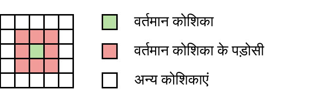
- गणनाएँ निम्नलिखित नियमों के आधार पर कोशिकाओं की स्थिति को बदलने में होती हैं:
- यदि कोशिका खाली थी, तो वह तभी रंगी हुई हो जाती है जब पिछले चरण में उसके तीन पड़ोसी रंगे हुए थे, अन्यथा वह खाली रहती है।
- यदि कोशिका रंगी हुई थी, तो वह तभी ऐसी ही रहती है जब पिछले चरण में उसके दो या तीन पड़ोसी रंगे हुए थे, अन्यथा वह खाली हो जाती है।
- इन नियमों को B3/S23 (Born 3 / Survive 2 or 3) के रूप में दर्शाया गया है।
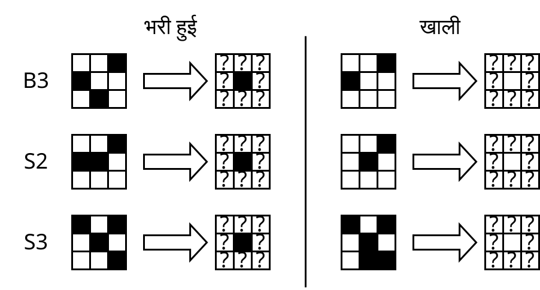
निम्नलिखित इंटरैक्टिव विज़ुअलाइज़ेशन में आप देख सकते हैं कि रंगी हुई और खाली कोशिकाओं के यादृच्छिक वितरण के लिए यह सेलुलर ऑटोमेटा कैसे विकसित होता है:
आप स्वयं अधिक उन्नत सिमुलेटर में खेल सकते हैं, उदाहरण के लिए conwaylife.com [10] पर।
#2प्रभावशाली क्षमताएं
इस ऑटोमेटा में आप बड़ी संख्या में तंत्र बना सकते हैं। यहाँ कुछ हैं।
पहला उदाहरण ऊपर के दृश्य से ग्लाइडर है। यह तंत्र विकर्ण रूप से चलता है। हम कह सकते हैं कि यह फोटॉन का एनालॉग है।
आप ऐसे ग्लाइडर के जनरेटर भी बना सकते हैं:

"लाइफ़" नामक सेलुलर ऑटोमेटा ट्यूरिंग-पूर्ण है, अर्थात उस पर आप एक कंप्यूटर या ट्यूरिंग मशीन बना सकते हैं। यहाँ इसका एक उदाहरण है (इंटरैक्टिव सिमुलेशन के साथ स्रोत [11]):

png
इंटरैक्टिव विज़ुअलाइज़ेशन oimo.io/works/life [12] (फोन से भी काम करता है) में "लाइफ़" खेल को स्वयं पर गहराई से, अनंत रूप से छोटा, और ऊँचाई से, अनंत रूप से बड़ा, अनुकरण किया जाता है:

png
जॉन वॉन न्यूमैन ने एक सेलुलर ऑटोमेटा और उसमें एक तंत्र का आविष्कार किया जो स्वयं को पुन: उत्पन्न कर सकता है। नीचे दिए गए चित्र में दिखाया गया है कि दूसरा ऑटोमेटा तीसरे को लगभग कैसे बना रहा है; दाईं ओर जाने वाली रेखाएँ आनुवंशिक जानकारी हैं जो मशीनों के शरीर के साथ-साथ कॉपी की जाती हैं।

png
टिम हटन [13] ने एक कृत्रिम रसायन विज्ञान विकसित किया जिसमें उन्होंने ऐसे तत्वों और उनके बीच इस तरह की बातचीत को डिजाइन किया ताकि एक कृत्रिम कोशिका को इकट्ठा किया जा सके जो प्रजनन कर सकती है:
यह सेलुलर ऑटोमेटा नहीं है, लेकिन यह आसानी से इसके रास्ते पर आ जाता है, और लेखक इस विचार को सेलुलर ऑटोमेटा के रूप में विकसित करना जारी रखता है [14]:

png
मैंने आपको यह सब दिखाया है ताकि आपको यह समझाया जा सके कि सेलुलर ऑटोमेटा केवल खिलौने नहीं हैं, बल्कि गंभीर अवधारणाएँ हैं जो मूलभूत भौतिकी के लिए एक सादृश्य होने के योग्य हैं।
#2भौतिकी के साथ सादृश्य
सेलुलर ऑटोमेटा "खिलौनों की भौतिकी" के बेहतरीन उदाहरण हैं, जिन्हें हम नीचे से ऊपर समझते हैं। वास्तविक दुनिया में हम जटिल घटनाओं को देखते हैं और केवल अंतर्निहित सिद्धांतों के बारे में अनुमान लगा सकते हैं (भौतिक विज्ञानी ऐसा करते हैं)। सेलुलर ऑटोमेटा की दुनिया में बिल्कुल विपरीत होता है: अंतर्निहित सिद्धांत ज्ञात हैं, और जटिल प्रणालियों का व्यवहार शोध का विषय है।
"लाइफ़" ऑटोमेटा में कई दिलचस्प गुण हैं:
- भौतिकी के नियम और पदार्थ एक-दूसरे से अलग हैं।
- पदार्थ को किसी भी तरह से संपादित किया जा सकता है: ड्रा करें, कॉपी करें, पेस्ट करें, हटाएं।
- किसी भी परिवर्तित पदार्थ पर सिमुलेशन चलाया जा सकता है।
- कुछ प्रारंभिक समय है।
- समय भौतिकी के नियमों की गणना है, और समय के क्षण के रूप में, हमारे पास क्षेत्र की स्थिति का एक असतत स्लाइस है।
- भौतिकी के नियम स्थानीय होते हैं, अर्थात वे केवल अंतरिक्ष के कुछ क्षेत्र पर काम करते हैं, कोई दूर-दूर तक कार्य नहीं होता है, और इस वजह से एक अधिकतम स्वीकार्य गति स्वाभाविक रूप से उत्पन्न होती है - हमारे दुनिया में प्रकाश की गति का एनालॉग।
लेकिन इस ऑटोमेटा में हमारी भौतिकी से कुछ अंतर भी हैं:
- कोई भी संरक्षण कानून नहीं है (उदाहरण के लिए, कोशिकाओं की संख्या), लेकिन संरक्षण कानूनों वाले सेलुलर ऑटोमेटा ढूंढना संभव है।
- समय को केवल आगे अनुकरण किया जा सकता है (पीछे नहीं), क्योंकि पिछले समय के क्षण 0 से अनंत तक हो सकते हैं। यह जरूरी नहीं कि हमारी भौतिकी का गुण हो, हमारी भौतिकी प्रतिवर्ती हो सकती है (और प्रतिवर्ती ऑटोमेटा भी मौजूद हैं)।
आगे यह माना जाएगा कि हमारी भौतिकी अपने सबसे मूलभूत स्तर पर सेलुलर ऑटोमेटा के प्रकार की कुछ चीज है (बड़ी धारणाओं के साथ, लेकिन अपने बचाव में, मैं इस विषय को आगे विस्तृत करूंगा)। यानी ऊपर वर्णित गुण उस पर लागू होते हैं।
और यहां तक कि अगर हमारी भौतिकी सेलुलर ऑटोमेटा की तरह नहीं दिखती है, तो यह एक अच्छी शुरुआती बिंदु है, क्योंकि यह समझना भी अच्छा है कि यह वास्तव में किस तरह अलग है।
#शारीरिक सिमुलेशन के साथ मानसिक प्रयोग
#2प्रयोग का विवरण
मान लें कि बहुत दूर भविष्य आता है, जिसमें हम पूरी आकाशगंगा की ऊर्जा का उपयोग करने वाली सभ्यता बन गए हैं, और हमने सौर मंडल के आकार का एक कंप्यूटर बनाया है जो हर प्लैंक लंबाई का अधिकतम कुशल उपयोग करता है।
इसके बाद हमने कुछ सरल शारीरिक सिमुलेशन के नियमों को विकसित किया, जो हमारी भौतिकी के समान है, लेकिन बिल्कुल इसकी नकल नहीं करता है। यह आवश्यक है, क्योंकि हमारी भौतिकी बहुत अत्यधिक और अजीब है, इस सभी क्वांटम यांत्रिकी और सापेक्षता के सिद्धांत के साथ। हमने इस भौतिकी को इस तरह से विकसित किया ताकि इसका रसायन विज्ञान पर्याप्त समृद्ध हो सके ताकि उस पर संभावित रूप से जीवन मौजूद हो सके और स्वयं ही उत्पन्न हो सके।
चूंकि हम इस सिमुलेशन को कंप्यूटर पर चलाना चाहते हैं, इसलिए हमारे पास कुछ सीमाएँ हैं। हमारा सिमुलेशन होना चाहिए:
- असतत,
- परिमित,
- नियतात्मक,
- रुकनेवाला (प्रत्येक चरण के लिए)।
मैं यह भी सीमा लगाना चाहता हूं कि हम सिमुलेशन में केवल प्रारंभिक स्थितियों में हस्तक्षेप करने के लिए अधिकृत हैं और फिर कभी नहीं।
इस प्रयोग के मूल में जाने से पहले, आइए प्रत्येक शब्द को स्पष्ट करें।
#2असतत भौतिकी
दो प्रकार के स्थान ज्ञात हैं: सातत्य और असतत स्थान।

png

png
परिमित लंबाई के असतत स्थान को प्राथमिक तत्वों की परिमित संख्या में विभाजित किया जा सकता है। परिमित लंबाई के सातत्य में (-∞; +∞) खंड के समान संख्या में संख्याएँ होती हैं, अर्थात यह अनंत रूप से विभाज्य है, जबकि प्रत्येक संख्या के दशमलव बिंदु के बाद अनंत संख्या में अंक होते हैं।
स्पष्ट रूप से, किसी कंप्यूटर में सातत्य को सीधे डालना असंभव है। इसलिए हमारे सभी सिमुलेशन असतत वस्तुओं की परिमित संख्या पर काम करते हैं। जब हम भौतिकी का अनुकरण करते हैं, तो हम असतत सन्निकर्षों का उपयोग करते हैं।
हालाँकि, असततता और सातत्य के बीच एक दिलचस्प संबंध है। उदाहरण के लिए, तरंगों के काम करने के नियम (दोलन, अवधि) इस विचार पर आधारित हैं कि जिस पदार्थ में ये तरंगें फैलती हैं, वह सातत्य से बना है। लेकिन हम जानते हैं कि सभी तरल पदार्थ, गैसें और ठोस पदार्थ असतत परमाणुओं से बने होते हैं, बस बहुत बड़ी संख्या में। इसलिए कुछ सातत्य भौतिक नियम, हालांकि सुंदर हैं, वास्तव में केवल असतत आधार पर काम करने वाले अनुमान हैं।
इसी तरह, यह माना जा सकता है कि क्वांटम यांत्रिकी इसी तरह काम करती है, लेकिन यह केवल एक धारणा है, और यह जरूरी नहीं कि सच हो। हमारे मानसिक प्रयोग में, हम ऐसी भौतिकी चाहते हैं जो अपने सबसे मूलभूत स्तर पर असतत हो, जबकि बड़े पैमाने पर यह सातत्य जैसा प्रतीत हो सकता है।
#2परिमित भौतिकी
यहां सब कुछ सरल है - हमारे सिमुलेशन का स्थान परिमित होना चाहिए, क्योंकि हम अनंत संख्या में वस्तुओं को संचालित नहीं कर सकते। हमारे प्रयोग के लिए हम बस एक बड़ी दूरी ले सकते हैं, और यह काफी होगा।
#2नियतात्मक भौतिकी
नियतात्मकता — प्रक्रियाओं का गुण है, जिसका अर्थ है कि प्रक्रिया हमेशा दिए गए प्रारंभिक स्थितियों के लिए एक ही परिणाम देगी, चाहे उसे कितनी भी बार चलाया जाए।
नियतात्मकता का अर्थ है कि सिमुलेशन का भविष्य स्पष्ट रूप से परिभाषित है और वहां कोई मौलिक यादृच्छिकता नहीं है। यह एक तार्किक आवश्यकता है, क्योंकि कंप्यूटर केवल नियतात्मक गणना करने में सक्षम हैं और वे पूर्ण यादृच्छिकता में सक्षम नहीं हैं।
कुछ कह सकते हैं कि डेटा दौड़, अनइनिशियलाइज्ड मेमोरी और कॉस्मिक किरणें पूर्ण यादृच्छिकता का स्रोत हो सकती हैं। आइए सहमत हों कि मानसिक प्रयोग में सभी कोड एक आदर्श वातावरण में एकल-थ्रेडेड वर्चुअल मशीन पर निष्पादित होते हैं और इसके लिए आवंटित की गई सभी नई मेमोरी को पूर्व-शून्य किया जाता है। इसलिए हम केवल नियतात्मक सिमुलेशन के बारे में सोचेंगे।
हमारे दुनिया में प्रक्रियाएँ नियतात्मक दिखती हैं, हालाँकि कुछ घटनाओं की भविष्यवाणी करना हमारे लिए बहुत मुश्किल है। नियतात्मक प्रक्रियाओं में अराजकता भी हो सकती है। तो नियतात्मक दुनिया फिर से हमारे दुनिया जैसी हो सकती है, और यह आवश्यकता विशेष रूप से हमारे शारीरिक सिमुलेशन को कम नहीं करती है।
पूर्ण यादृच्छिक प्रक्रियाओं के सिमुलेशन के बारे में भी बाद के अध्यायों में बताया जाएगा।
#2रुकनेवाला भौतिकी
इसका बिल्कुल भी मतलब यह नहीं है कि कोई ऐसा चरण होना चाहिए जिसके बाद सिमुलेशन को रोकना चाहिए (उदाहरण के लिए, हीट डेथ), बल्कि इसका मतलब है कि सिमुलेशन का प्रत्येक चरण एक परिमित और पूर्वानुमान योग्य संख्या में चरणों में पूरा होना चाहिए। इसका मतलब है कि सिमुलेशन के एक चरण की गणना के अंदर अनंत चक्र या इसी तरह की कोई भी चीज नहीं होनी चाहिए। इस आवश्यकता की आवश्यकता है क्योंकि हमारे लिए सिमुलेशन को चलाने का कोई मतलब नहीं है जो किसी दिलचस्प बिंदु पर अनंत चक्र में चला जा सकता है और फिर कोई परिणाम नहीं देता है।
ठीक है, और इस आवश्यकता की भी आवश्यकता है क्योंकि हम रुकने की समस्या [16] (इस विषय पर एक अच्छा वीडियो [17]) को हल नहीं करना चाहते हैं, जिसे सामान्य तौर पर हल करना असंभव है।
#2सिमुलेशन लॉन्च करना
ऐसा लगता है कि इस तरह की भौतिकी बनाना असंभव नहीं होना चाहिए। इसलिए हमारे मानसिक प्रयोग में, हमने एक उपयुक्त उम्मीदवार पाया। हालाँकि आप इस बात से असहमत हैं कि इस तरह की भौतिकी बनाना संभव है।
इसके बाद हम इस भौतिकी को हमारे सुपरकंप्यूटर पर कुछ परिमित स्थान पर चलाते हैं और तब तक इंतजार करते हैं जब तक वहां जीवन स्वयं नहीं बन जाता। यदि यह उत्पन्न नहीं होता है, तो हम प्रारंभिक स्थितियों के साथ थोड़ा खेल सकते हैं, सही परमाणुओं की इष्टतम संख्या का चयन कर सकते हैं या गैस और धूल के बादल को अपने तारे से सही दूरी पर रख सकते हैं ताकि यह रहने योग्य क्षेत्र में हो और इसी तरह।
मान लें कि हम ऐसे प्रारंभिक शर्तें पाने में सक्षम थे जिनके तहत जीवन उत्पन्न होता है, और फिर हम बहुत लंबे समय तक अनुकरण करते हैं और तब तक इंतजार करते हैं जब तक कि यह बुद्धिमान प्राणियों तक विकसित नहीं हो जाता जो एक-दूसरे के साथ किसी भाषा का उपयोग करके संवाद करने में सक्षम होते हैं।
निश्चित रूप से, इन प्राणियों के पास किसी प्रकार का आत्म-संरक्षण, यौन आकर्षण, भोजन से आनंद और शरीर को नुकसान पहुंचाने से पीड़ा का भाव है। क्योंकि यह मस्तिष्क वाले व्यक्तिगत प्राणियों के लिए विकास का एक तार्किक मार्ग है। ऐसा प्राणी, जो इस भावना से रहित है, संभावित रूप से जीवित रहने में कम प्रभावी होगा और विकास द्वारा छँट जाएगा।
कृपया रुकें और निम्नलिखित प्रश्नों के उत्तर दें। यह वांछनीय है कि आप अपने उत्तर भी समझाएँ।
आपका मानना है कि ये प्राणी महसूस करते हैं कि वे जीवित हैं? क्या वे अपनी दुनिया को देखते हैं? क्या उनके पास व्यक्तिपरक अनुभव हैं, उर्फ क्वालिया? क्या वे जीवित हैं?
यदि आप यह नहीं मानते कि वे कुछ महसूस करते हैं, तो सुझाएं कि सिमुलेशन में कौन से गुण होने चाहिए ताकि आप उन्हें महसूस करने वाले मानें।
इस प्रश्न के उत्तर पर निर्भर करता है कि आप आगे की कहानी को कैसे देखेंगे।
मैंने इस सिमुलेशन का इतना विस्तार से वर्णन किया है ताकि इन प्राणियों के बारे में आपकी दृष्टि लोगों के जितना संभव हो उतना करीब हो, लेकिन साथ ही सीधे हमारे दुनिया का उपयोग न करें, क्योंकि यह अज्ञात है कि हम इसका कितनी सफलतापूर्वक अनुकरण कर सकते हैं। और मुख्य बात यह है कि वर्णित सब कुछ काफी परिकल्पनात्मक रूप से संभव दिखता है। क्योंकि जब तक हमने ऐसे कोई मौलिक नियम नहीं खोजे हैं जो शारीरिक सिमुलेशन में प्राणियों को मन या भावनाओं से लैस होने से रोकते हैं।
मुझे उम्मीद है कि आपने इस प्रश्न का सकारात्मक उत्तर दिया है कि ये प्राणी कुछ महसूस करते हैं। "वे कुछ भी महसूस नहीं करते हैं क्योंकि मैं जानता हूं कि वे एक कंप्यूटर में हैं" तर्क बहुत आलसी है। इसे अधिक चालाकी से खंडन करने का प्रयास करें।
यदि आप सहमत नहीं हैं, तो डरने की कोई बात नहीं है। आगे मैं इस दृष्टिकोण पर भी विचार करूंगा।
मान लें कि आप इस बात से सहमत हैं कि ये प्राणी जीवित हैं, कि वे महसूस करते हैं कि वे जीवित हैं, इस विषय पर चर्चा कर सकते हैं और भगवान के बारे में प्रश्न पूछ सकते हैं या प्रश्न पूछ सकते हैं कि क्या वे सिमुलेशन में रहते हैं। हम उनकी दुनिया पर किसी भी तरह से प्रभाव नहीं डालते हैं, इसलिए वे किसी भी तरह से नहीं समझ सकते कि हम क्या हैं, और उनके पास अपनी भौतिक दुनिया की वास्तविकता और ईमानदारी पर संदेह करने का कोई कारण नहीं है।
क्या सिमुलेशन में जीवन का स्वतः उत्पन्न होना संभव है?
#2क्या होगा अगर हम सिमुलेशन रोक दें?
आपका मानना है कि क्या होगा अगर हम सिमुलेशन बंद कर दें? क्या उसमें रहने वाले प्राणी मर जाएँगे? या वे मरेंगे नहीं, बल्कि अपनी ज़िंदगी को महसूस करना बंद कर देंगे? या किसी अद्भुत तरीके से वे जीवित रहेंगे?
बेशक, आप कहेंगे कि वे मर जाएँगे, क्योंकि अन्यथा कैसे? जब हम उन्हें अनुकरण करते हैं - वे जीवित होते हैं, जब हम उन्हें बंद करते हैं - वे जीवित नहीं होते हैं। सब कुछ सरल है। लेकिन नहीं। मेरा दावा है कि सिमुलेशन बंद करने के बाद ये प्राणी जीवित रहेंगे।
जैसा कि मैंने पहले कहा था, हमारे सिमुलेशन में कुछ मौलिक सीमाएँ हैं, जिनके बिना हम इसे कंप्यूटर पर नहीं चला सकते हैं, अर्थात् नियतात्मकता। नियतात्मकता का अर्थ है कि दिए गए प्रोग्राम के लिए केवल एक ही परिणाम है यदि प्रारंभिक शर्तें दी गई हैं और फिर प्रोग्राम में कोई हस्तक्षेप नहीं हुआ। अब एक ऐसा प्रश्न: यदि भविष्य एकमात्र है, तो हमें इसका अनुकरण क्यों करना चाहिए? हमारे सिमुलेशन से क्या बदलता है? हम भविष्य को किसी भी तरह से प्रभावित नहीं कर सकते, यह वैसे भी वैसा ही होगा जैसा होगा।
यदि यह नियतात्मकता की शक्ति को समझने के लिए पर्याप्त नहीं है, तो यहां कुछ और मानसिक प्रयोग दिए गए हैं:
- यदि हम पूरे सिमुलेशन के परिणाम को हटा देते हैं और इसे शुरुआत से ही फिर से अनुकरण करते हैं, तो हमें बिल्कुल वही परिणाम मिलेगा।
- यदि हम सिमुलेशन को रोकते हैं और एक अरब साल बाद इसे जारी रखते हैं, तो उसमें रहने वाले प्राणियों को इसका एहसास नहीं होगा। उनके लिए समय का प्रवाह उनके ब्रह्मांड के आंतरिक नियमों द्वारा निर्धारित किया जाएगा। हम उनके समय से बाहर मौजूद हैं, और वे हमारे समय से बाहर हैं।
- यदि हम इसी सिमुलेशन को एक साथ कई कंप्यूटर पर चलाते हैं, तो उन प्राणियों के लिए कुछ भी नहीं बदलेगा।
- यदि सिमुलेशन प्रतिवर्ती है और हम किसी तरह भविष्य के बहुत दूर के क्षण को प्राप्त करते हैं, तो हम इसे उल्टे क्रम में अनुकरण करेंगे, तो प्राणियों को ऐसा महसूस नहीं होगा कि वे उल्टे क्रम में जी रहे हैं।
बेशक, यह भी पर्याप्त नहीं हो सकता है, और आगे मैं दिखाऊंगा कि यह साबित कैसे किया जा सकता है कि वे उनकी दुनिया को अनुकरण करने की आवश्यकता के बावजूद भी जीवित रहेंगे।
#संख्या के रूप में ब्रह्मांड
ठीक है, हम इस बात पर सहमत हुए कि जब हम उन्हें कंप्यूटर पर अनुकरण करते हैं तो प्राणी जीवित होते हैं, और हमारे लिए यह पर्याप्त नहीं है कि उनका केवल एक ही भविष्य है। हमारा मानना है कि उनका भविष्य तभी मौजूद होता है जब हम इसका अनुकरण करते हैं।
फिर आइए स्पष्ट रूप से निर्दिष्ट करें कि हमारे पास यह कहने के लिए क्या है कि यह इस समय अवधि में उनके जीवन का प्रमाण है। हमारे पास केवल सिमुलेशन एल्गोरिथम और वर्तमान तक के सभी सिमुलेशन चरण हैं। हमारा मानना है कि इस जानकारी का होना इन प्राणियों के जीवन के प्रमाण के बराबर है।
मान लें कि हमने यह सिमुलेशन किया है, सभी डेटा प्राप्त किया है और इसे एक बड़ी हार्ड ड्राइव पर रिकॉर्ड किया है: सबसे पहले एल्गोरिथम, फिर चरण 1, फिर चरण 2, ..., चरण N। बस, अब हमारे पास इस बात का प्रमाण है कि वे चरण N तक जीवित थे। लेकिन हार्ड ड्राइव पर डेटा हमेशा शून्य और एक का कोई अनुक्रम होता है। हम हार्ड ड्राइव से डेटा ले सकते हैं और इसे एक बहुत बड़ी प्राकृतिक संख्या के रूप में लिख सकते हैं। और यह प्राकृतिक संख्या अभी भी इन प्राणियों के जीवन का प्रमाण है।
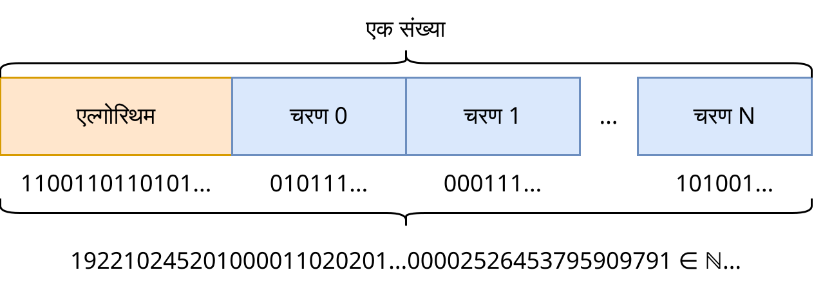
अब दिलचस्प हिस्सा: हम कैसे जानते हैं कि सभी प्राकृतिक संख्याएँ मौजूद हैं।
चूँकि सभी प्राकृतिक संख्याएँ मौजूद हैं, इसलिए उनमें से एक संख्या जरूर होगी जिसके द्वारा हमने सिमुलेट किए गए प्राणियों के सिमुलेशन को एन्कोड किया है। लेकिन उनमें से यह सिमुलेशन भी है, लेकिन समय +1 के साथ। और उनमें से कोई भी अन्य सिमुलेशन है, इस सिमुलेशन के अंदर किसी भी समय के लिए। और ये सभी संख्याएँ उन प्राणियों के जीवन के प्रमाण के बराबर हैं जो इन सिमुलेशन को रखते हैं।
इससे हम यह निष्कर्ष निकालते हैं कि किसी भी सिमुलेशन का परिणाम, जिसे कंप्यूटर पर चलाया जा सकता है, पहले से ही प्राकृतिक संख्या के रूप में मौजूद है। यहीं से इस अवधारणा का नाम आया: संख्या के रूप में ब्रह्मांड।
स्वयं के लिए अस्तित्व — कुछ ब्रह्मांड स्वयं के लिए मौजूद है यदि उसमें रहने वाले जीवित प्राणी अपने अस्तित्व और अपने ब्रह्मांड को देख पाते हैं।
पहले हम इस बात पर सहमत हुए थे कि कंप्यूटर पर सिमुलेशन में रहने वाले प्राणी अपने ब्रह्मांड को देख पाते हैं। इसका मतलब है कि यह ब्रह्मांड कम से कम स्वयं के लिए मौजूद है। और फिर हम इस बात पर पहुँचे कि यह अस्तित्व संख्या के रूप में अस्तित्व के बराबर है। इसलिए सभी प्राकृतिक संख्याओं के अस्तित्व से सभी संभावित सिमुलेटेड ब्रह्मांडों के स्वयं के लिए अस्तित्व का पालन होता है। और इसका मतब है कि उन सभी ब्रह्मांडों में जहां जीवन है, यह जीवन अपने ब्रह्मांड को देखेगा।
मुझे यह शारीरिक सिमुलेशन का उदाहरण पसंद है क्योंकि इसके लिए हमें अस्तित्व की परिभाषा देने की ज़रूरत नहीं है, बल्कि यह इतना स्पष्ट है कि हमें इससे अस्तित्व की परिभाषा प्राप्त करनी चाहिए। और इस मामले में हम "स्वयं के लिए अस्तित्व" की परिभाषा प्राप्त करते हैं। यदि हम इस बात से सहमत हैं कि वे सिमुलेशन में अपनी ज़िंदगी महसूस करते हैं जब हम इसे कंप्यूटर पर चलाते हैं, तो हमें तुरंत यह निष्कर्ष निकालना चाहिए कि उन्होंने हमारी सिमुलेशन के बिना भी ज़िंदगी को महसूस किया होगा, संख्या के रूप में मौजूद रहकर।
फिर क्या होता है जब हम किसी दुनिया का अनुकरण करते हैं? इस अर्थ में, हम कह सकते हैं कि सिमुलेशन के माध्यम से हम दुनिया नहीं बनाते हैं, बल्कि पहले से मौजूद दुनिया को देखते हैं। और कंप्यूटिंग शक्ति वास्तव में अवलोकन पर खर्च होती है। और प्रारंभिक स्थितियों का चयन "दुनिया बनाना" नहीं है, बल्कि अनंत संख्या में विभिन्न दुनियाओं में से उन गुणों वाली दुनिया की तलाश करना है जो हम चाहते हैं।
और जब हम सिमुलेशन बंद करते हैं, तो प्राणी स्वयं के लिए जीना जारी रखते हैं। वे अपनी दुनिया के अन्य प्राणियों को इसके बारे में बता सकते हैं, लेकिन हमें नहीं। हम इसे नहीं देख सकते, क्योंकि हमने सिमुलेशन बंद कर दिया है।
#2एन्थ्रोपिक सिद्धांत
एन्थ्रोपिक सिद्धांत — एक सिद्धांत है, जिसके अनुसार ब्रह्मांड जीवन और मानव के उद्भव के लिए आदर्श रूप से अनुकूलित है, क्योंकि अन्य ब्रह्मांडों में जहां यह इस तरह से अनुकूलित नहीं है, प्रेक्षक संभव नहीं है।
Unasanu एन्थ्रोपिक सिद्धांत के साथ पूरी तरह से सहमत है। मैं इसे अपने लिए इस तरह से तैयार करता हूं: यदि सभी संभावित ब्रह्मांड मौजूद हैं, तो प्रेक्षक केवल उन ब्रह्मांडों में उत्पन्न होते हैं जहां उनका अस्तित्व संभव है।
एन्थ्रोपिक सिद्धांत आवश्यक है, क्योंकि भौतिक विज्ञानी देखते हैं कि सबसे मौलिक स्थिरांक हमारे अस्तित्व के लिए पूरी तरह से अनुकूलित हैं। यदि उनमें से कुछ प्रतिशत कम या अधिक होते, तो हम जिस रूप में जीवन को देखते हैं, वह असंभव होता। इस बारे में आप "हमारा गणितीय ब्रह्मांड" [18] पुस्तक में और अधिक विस्तार से पढ़ सकते हैं।
#2गलत गणनाओं का तर्क
यह तर्क दिया जा सकता है: गणनाएं कहां से आती हैं यदि हमारे पास केवल संख्याएँ हैं? आखिरकार, मैं किसी भी सही ढंग से गणना किए गए ब्रह्मांड को ले सकता हूं और इसे गलत तरीके से लिख सकता हूं, और यह भी संख्या के रूप में मौजूद होगा। फिर गणनाएं क्यों मौजूद होनी चाहिए?
#3भौतिकी के सभी नियमों द्वारा गणना
एक और समान बिंदु है। यदि ब्रह्मांड को वर्तमान भौतिकी के नियमों द्वारा गणना की जा सकती है, तो यह अन्य भौतिकी के नियमों द्वारा क्यों नहीं गणना की जाती है? वास्तव में, इसकी गणना की जाती है, और unasanu के अनुसार ऐसी दुनियाएँ मौजूद हैं। उदाहरण के लिए, "लाइफ़" खेल का सादृश्य लें। निम्नलिखित चित्र में दिखाया गया है कि एक ही क्षेत्र को विभिन्न नियमों द्वारा कैसे गणना की जाती है:
"प्रारंभ" पर क्लिक करें और हर सेकंड "B3/S23 से कॉपी करें" बटन पर क्लिक करें। आप देखेंगे कि B3/S23 का कोई भी राज्य अन्य किसी भी नियम द्वारा गणना की जा सकता है, और यह unasanu के दायरे में मौजूद है।
और मैंने केवल एक छोटा सा हिस्सा लागू किया है (जो B/S नोटेशन के अधीन है), लेकिन वास्तव में दो राज्यों वाली कोशिकाओं वाले इस क्षेत्र के अगले चरण की गणना करने के अनंत तरीके हैं।
स्पष्ट रूप से, इस क्षेत्र को सभी संभावित नियमों द्वारा गणना के लिए आधार के रूप में लिया जा सकता है। और इसी तरह समय के प्रत्येक क्षण और हर नियम के साथ जिसे आप केवल डिजाइन कर सकते हैं।
इसी तरह, इस क्षेत्र के सभी संभावित संशोधनों को लेना और उन्हें मूल नियम द्वारा गणना करना असंभव नहीं है।
यह सब unasanu के अनुसार मौजूद है, और इसके कई परिणाम हैं, जिन पर बाद में चर्चा की जाएगी।
तो हम अपने ब्रह्मांड की गणना मनमाने भौतिकी के नियमों द्वारा क्यों नहीं देखते हैं और सामान्य रूप से किसी भी गणना को क्यों देखते हैं?
#3एन्थ्रोपिक निस्पंदन
इसे इस तथ्य से समझाया जा सकता है कि यह प्रेक्षक ही है जो ब्रह्मांड के नियमों को स्थिरता में रखता है, गणना और अपने लिए भौतिकी के विशिष्ट नियमों के अस्तित्व को सुनिश्चित करता है। कैसे?
सबसे पहले, गलत गणनाओं के तर्क पर विचार करें। यदि ब्रह्मांड किसी भी नियम द्वारा गणना नहीं किया जाता है, तो उसमें ऐसे प्रेक्षक नहीं हो सकते हैं जो इस ब्रह्मांड को देखेंगे। क्योंकि देखने का तथ्य ही गणना है। और यदि ब्रह्मांड नियमों का पालन करता है, तो उसमें एक प्रेक्षक संभव है। इसलिए प्रेक्षक केवल एक गणना योग्य ब्रह्मांड को देख सकता है।
और अब भौतिकी के सभी संभावित नियमों के बारे में तर्क, प्रेक्षक उन्हें भी स्थिरता में रखता है। अधिक सटीक रूप से, वह केवल स्थिर भौतिकी के नियमों को देखता है। क्योंकि कुछ अन्य भौतिकी के नियमों द्वारा मस्तिष्क के परमाणुओं की गणना करते समय, मस्तिष्क काम करना बंद कर सकता है, और प्रेक्षक उस तरह के ब्रह्मांड में कुछ भी नहीं देखेगा।
किसी अर्थ में, यह एन्थ्रोपिक सिद्धांत जैसा है, केवल अधिक मौलिक और ब्रह्मांड के निर्माण या ब्रह्मांड में प्रेक्षक के जन्म के समय ही नहीं बल्कि हर समय होता है। मैं इसके लिए एक शब्द पेश करता हूं।
एन्थ्रोपिक निस्पंदन — एक सिद्धांत है, जिसके अनुसार एक प्रेक्षक उन ब्रह्मांडों को फ़िल्टर करने में सक्षम होता है जहाँ गणना नहीं की जाती है या वे गलत तरीके से की जाती हैं, और उन ब्रह्मांडों को फ़िल्टर करने में सक्षम होता है जहाँ उसका अस्तित्व या अस्तित्व असंभव है।
आगे हम देखेंगे कि एन्थ्रोपिक निस्पंदन कुछ इस तरह के तर्कों पर लागू होता है, लेकिन अन्य पर नहीं।
#3झूठा वैक्यूम
भौतिकी में "झूठा वैक्यूम" नामक पदार्थ की अवस्था होती है। इसका उत्पन्न होना संभावित है। यदि यह ब्रह्मांड के एक बिंदु पर उत्पन्न होता है, तो यह प्रकाश की गति से हर तरफ फैलता है, उस सब कुछ को नष्ट कर देता है जो इसमें आता है। कोई भी व्यक्ति झूठे वैक्यूम के अस्तित्व को नहीं देख पाता है, क्योंकि उसका मस्तिष्क बहुत धीरे काम करता है और वह इसे महसूस करने से पहले ही मर जाएगा, और झूठे वैक्यूम के बारे में जानकारी प्रकाश की गति से आगे नहीं बढ़ सकती है।
इस प्रकार, झूठा वैक्यूम एन्थ्रोपिक निस्पंदन के उदाहरणों से संबंधित है। क्योंकि उन ब्रह्मांडों के लिए जहां यह उत्पन्न हुआ, सभी जीवित प्राणी मर गए और इसके बारे में नहीं जान पाए, और अन्य ब्रह्मांड, जो एक परमाणु में भिन्न हैं, जहां यह झूठा वैक्यूम उत्पन्न नहीं हुआ, वे मौजूद रहते हैं। इस प्रकार, झूठा वैक्यूम एन्थ्रोपिक निस्पंदन के अधीन है।
और यदि भौतिकी के नियमों को एक बार फ़िल्टर किया जाता है, तो ब्रह्मांड के निर्माण के समय या ब्रह्मांड में प्रेक्षक के जन्म के समय सही ब्रह्मांड में, तो झूठे वैक्यूम को हर समय प्रेक्षकों द्वारा फ़िल्टर किया जाता है। और यदि वैज्ञानिकों को पता चलता है कि प्रेक्षित ब्रह्मांड में झूठे वैक्यूम के उत्पन्न होने की संभावना बहुत अधिक है, लेकिन यह कभी नहीं होता है और हम जीवित रहते हैं, तो unasanu के दृष्टिकोण से इसमें कोई विरोधाभास नहीं है।
वैसे, यह बहुत मजेदार हो सकता है जब हम हर चीज का सिद्धांत बनाते हैं और अचानक पता चलता है कि उसके आधार पर बनाया गया कोई भी सिमुलेशन कुछ समय बाद झूठे वैक्यूम से नष्ट हो जाएगा या सभी जीवित प्राणियों की तत्काल मृत्यु के समान घटनाओं से नष्ट हो जाएगा। :)
यदि हम हर चीज का सिद्धांत बना पाते हैं और उसके अनुसार हमें झूठे वैक्यूम या सभी जीवित प्राणियों की तत्काल मृत्यु की समान घटनाओं से लंबे समय पहले मर जाना चाहिए था, तो इसका मतलब यह नहीं है कि यह सिद्धांत गलत है।
#2अनन्तवाद
कुछ पाठकों को यह सवाल हो सकता है: "और समय के बारे में क्या?" पहले मैंने स्पष्ट रूप से माना था कि ब्रह्मांड अपने समय के साथ एक स्थिर डेटा के एक टुकड़े के रूप में मौजूद हैं, पूरी तरह से उस गतिशीलता को अनदेखा करते हुए जिसे हम समय के प्रवाह के कारण महसूस करते हैं। इस दृष्टिकोण को अनन्तवाद कहा जाता है।
अनन्तवाद — समय के बारे में एक दृष्टिकोण है, जिसके अनुसार भविष्य की घटनाएँ पहले से ही मौजूद हैं, समय का कोई उद्देश्य "प्रवाह" नहीं है और पूरे अंतरिक्ष-समय को एक स्थिर अपरिवर्तनीय "ब्लॉक" [19] के रूप में दर्शाया जा सकता है।
मेरा दावा है कि अनन्तवाद सिमुलेशन के लिए समय की सही व्याख्या है। बाद के अध्यायों में मैं हमारे ब्रह्मांड को कंप्यूटर पर अनुकरण योग्य ब्रह्मांडों की श्रेणी में कम कर देता हूं, इसलिए अनन्तवाद को हमारे समय पर भी लागू किया जाना चाहिए। आइए सिमुलेशन के लिए अनन्तवाद को समझते हैं, क्योंकि यह unasanu का एक महत्वपूर्ण हिस्सा है।
लोगों का समय कैसे काम करता है? इस समय हमें केवल अतीत की यादें और वर्तमान का एहसास है। हम सीधे अतीत या भविष्य को महसूस नहीं कर सकते। हम यह समझ सकते हैं कि अतीत कैसा रहा होगा, कुछ भौतिक वस्तुओं से, जैसे कि फिल्म रिकॉर्डिंग, पुरातात्विक कलाकृतियां और हमारी अपनी यादें। हमें इन सब पर भरोसा करना होगा। हम केवल अपने समय के लोगों से ही संवाद कर सकते हैं, क्योंकि भौतिकी के नियम ऐसे हैं। इस बात से कि भविष्य में लोग मौजूद हैं, इसका मतलब यह नहीं है कि हमारे पास उनके साथ बातचीत करने का मौका होना चाहिए, सिवाय इसके कि हम उस समय तक जीवित रहें।
हम समय के धीरे-धीरे गुजरने का एहसास क्यों करते हैं, न कि एक साथ यादृच्छिक भविष्य के क्षण का, यदि यह पहले से ही मौजूद है? क्योंकि भौतिकी के नियमों और हमारे मस्तिष्क के निर्माण से यह पता चलता है कि 20 साल के व्यक्ति के मस्तिष्क को कुछ महसूस करने के लिए, उसे पहले उन 20 सालों को जीना होगा और उन्हें याद रखना होगा। तो शायद आप अभी एक यादृच्छिक भविष्य के मस्तिष्क हैं (शायद आपकी मृत्यु के ठीक पहले), बस उसे याद है कि उसने पिछले सभी क्षणों को कैसे जिया है, और आपको ऐसा लगता है कि आप अभी जीवित हैं।
सिमुलेशन में समय कैसे काम करता है? असतत सिमुलेशन में, भविष्य की स्थिति को परमाणु रूप से पिछली स्थिति से गणना की जाती है। सिमुलेशन के अंदर "सिमुलेशन चरणों के बीच" समय को महसूस करना असंभव है, क्योंकि सिमुलेशन के आंतरिक नियम स्वयं केवल पूर्ण गणना की स्थिति पर काम करने में सक्षम हैं। यानी सिमुलेशन के लिए कोई मौलिक गतिशीलता नहीं है, केवल विभिन्न स्थिर समय क्षण हैं जो तार्किक संबंधों से जुड़े हैं, और प्रेक्षक उन्हें गतिशील रूप से बदलते हुए व्याख्या करता है।
सिमुलेशन के लिए अनन्तवाद के "खंडन" के रूप में, आप यह मान सकते हैं कि हमारे दुनिया में समय स्थिर संरचनाओं के लिए अप्रत्याशित है। तब यदि हम मानते हैं कि किसी सिमुलेशन में समय हमारे जैसे समय के समान है, तो इसे परिभाषित करने का एकमात्र तरीका है - इसे हमारे समय से जोड़ना। तब सिमुलेशन में समय हमारे समय के साथ-साथ चलता है, जब तक कि हम इसकी गणना करते हैं।
इसे दो तरीकों से खंडन किया जा सकता है, यह दिखाकर कि सिमुलेशन में "वर्तमान" क्षण अद्वितीय नहीं है:
- इस सिमुलेशन की एक प्रति बनाएँ और इसे एक सेकंड की देरी से अनुकरण करें। तब कौन सा समय "वर्तमान" है? सिमुलेशन में रहने वाले प्राणियों को "इस समय" क्या समय का एहसास होता है?
- "प्रतिवर्ती" सिमुलेशन के ऐसे वर्ग हैं। उन्हें न केवल भविष्य में, बल्कि अतीत में भी अनुकरण किया जा सकता है। वैसे, क्वांटम यांत्रिकी प्रतिवर्ती है, इसलिए इस तरह का सिमुलेशन हमारे ब्रह्मांड के समान हो सकता है। तो, क्या होगा अगर हम इस सिमुलेशन की एक प्रति बनाते हैं और इसे एक साथ अतीत और भविष्य में अनुकरण करना शुरू करते हैं? कौन सा क्षण वर्तमान होगा?
इसलिए, हम इस विचार का खंडन नहीं कर सकते कि कंप्यूटर सिमुलेशन के लिए समय स्थिर संरचना के रूप में मौजूद नहीं हो सकता है। हम इसे दूसरे तरीके से भी कह सकते हैं: सिमुलेशन को किसी भी गतिशील चीज द्वारा नहीं वर्णित किया जा सकता है, केवल स्थिर ब्लॉक द्वारा। और इसमें कोई विरोधाभास नहीं है, भले ही इसे हमारे ब्रह्मांड पर लागू किया जाए। इस प्रकार, समय का मुख्य गुण निरंतर गति नहीं है, बल्कि यह है कि यह विभिन्न (समय) सूचना परतों को भौतिकी के कुछ नियमों से जोड़ता है।
हम यह भी कह सकते हैं कि समय किसी वैश्विक संरचना के रूप में मौजूद नहीं है, और सभी सिमुलेशन इसका पालन करते हैं, बल्कि, इसके विपरीत, समय सिमुलेशन के अंदर मौजूद है।
और अनन्तवाद भी एक अविश्वसनीय और अकाट्य कथन है, क्योंकि यह केवल नियतात्मक ब्रह्मांडों के समय की व्याख्या है।
यह भी लग सकता है कि अनन्तवाद पूर्ण नियतात्मकता का तात्पर्य है और भविष्य के एकमात्र होने की आवश्यकता है। लेकिन अनन्तवाद कई संभावित भविष्य वाले ब्रह्मांडों और पूर्ण यादृच्छिकता के साथ पूरी तरह से संगत है, आगे यह दिखाया जाएगा। आपको बस अंतिम "अंतरिक्ष-समय" ब्लॉक को एक स्थिर सॉसेज के रूप में नहीं, बल्कि एक स्थिर पेड़ के रूप में कल्पना करने की आवश्यकता है। :)
#2सिमुलेशन के साथ बातचीत
इस बिंदु से पहले लगाए गए प्रतिबंध धीरे-धीरे ढीले होने लगेंगे।
मैंने कहा था कि मानसिक प्रयोग के लिए, मैं सिमुलेशन में हस्तक्षेप नहीं करने का सुझाव देता हूं। क्या होगा अगर हम इस प्रतिबंध को रद्द कर दें? क्या सिमुलेशन अनियतात्मक हो जाएगा? नहीं।
मान लें कि हम सिमुलेशन में चरण N तक पहुँच चुके हैं और एटम एडिटर में हम युद्ध छेड़ने वाले अधिनायकवादी शासकों को हटाना चाहते हैं। उसके बाद सिमुलेशन के अंदर के प्राणी हैरान होते हैं, लेकिन खुश होते हैं। लेकिन सिमुलेशन में हस्तक्षेप क्या है? यह क्रियाओं का एक अनुक्रम है जिसे सिमुलेशन प्रोग्राम को भेजा जाता है। और इसका मतलब है कि इस क्रियाओं के अनुक्रम को भी संख्या द्वारा एन्कोड किया जा सकता है।
यदि हम अपने सभी हस्तक्षेपों को रिकॉर्ड करते हैं और फिर उन्हें सिमुलेशन प्रोग्राम के बगल में जोड़ते हैं और कहते हैं कि उन्हें सिमुलेशन के सही समय पर भेजा जाए, तो हम फिर से एक पूर्ण नियतात्मक सिमुलेशन प्राप्त कर सकते हैं। जिसे बार-बार चलाया जा सकता है, और यह वही परिणाम देगा, भले ही हम इसका परिणाम इस तरह से व्याख्या करें कि हमने इसमें हस्तक्षेप किया है।
और इन सभी संभावित हस्तक्षेपों को भी एक संख्या द्वारा एन्कोड किया जा सकता है और सिमुलेशन के नियमित प्रोग्राम के साथ संख्या के बगल में जोड़ा जा सकता है। इसलिए सभी संभावित ब्रह्मांड सभी संभावित हस्तक्षेपों के साथ मौजूद हैं, भले ही हमें सीधे उनमें हस्तक्षेप करने की आवश्यकता न हो।
इसके साथ ही, यह नहीं भूलना चाहिए कि सभी संभावित हस्तक्षेपों वाले ब्रह्मांडों के रूप में, बिना किसी हस्तक्षेप के ब्रह्मांड भी मौजूद है।
#2टेगमार्क की गणितीय संरचनाएं
पहले मैंने माना था कि सिमुलेशन में निम्नलिखित संरचना है:
- सिमुलेशन की कुछ प्रारंभिक स्थिति
Oहै। - एक चरण की गणना करने के लिए कुछ फ़ंक्शन/प्रोग्राम
Fहै जो सिमुलेशन की प्रत्येक स्थिति के लिए सिमुलेशन की अगली स्थिति देता है, और उत्तर हमेशा मौजूद होता है। - सिमुलेशन का सार निम्नलिखित एल्गोरिथम को पूरा करना है:
- T = F(O)
- T = F(T)
- T = F(T)
- ...
इस प्रकार, सिमुलेशन के अंदर "समय बीतता है" क्योंकि हम गणना के एक चरण को सिमुलेशन के अंदर समय के एक चरण के बराबर करते हैं। और पूरे ब्रह्मांड में समय वैश्विक रूप से मौजूद है।
लेकिन वास्तव में, समय की यह व्याख्या सरल है और यह बहुत अधिक जटिल ब्रह्मांडों के अस्तित्व की अनुमति नहीं देता है, उदाहरण के लिए:
- बहुआयामी समय वाले ब्रह्मांड (इस विषय पर एक अच्छा लेख [15]),
- सापेक्षता के सिद्धांत के साथ हमारा ब्रह्मांड,
- समय यात्रा वाले ब्रह्मांड।
समय का सरल मॉडल — समय का ऐसा मॉडल है जिसमें समय असतत होता है और पूरे ब्रह्मांड में वैश्विक रूप से मौजूद होता है और अगला चरण हमेशा पिछले से गणना किया जा सकता है।
इसलिए, मैक्स टैगमार्क की गणितीय ब्रह्मांड परिकल्पना [1] मंच पर आती है, जहाँ उन्होंने इस प्रश्न को अधिक मौलिक रूप से देखा है, यह दावा करते हुए कि भौतिक अर्थों में कोई भी ब्रह्मांड मौजूद है, जिसे गणितीय संरचना द्वारा वर्णित किया गया है।
गणितीय संरचना — उनके बीच संबंधों के साथ अमूर्त संस्थाओं का एक समूह है।
यह निश्चित रूप से ज्ञात है कि सभी सरल सिमुलेशन गणितीय संरचनाओं का एक उपसमूह हैं, क्योंकि प्रोग्राम के काम का परिणाम एक अमूर्त संस्था निर्धारित करता है, और प्रोग्राम स्वयं इन संस्थाओं के बीच संबंध निर्धारित करता है। यह भी निश्चित रूप से ज्ञात है कि गणितीय संरचनाओं के समूह में ऐसे ब्रह्मांड शामिल हैं जिनके लिए गणनाओं के माध्यम से यह सत्यापित किया जा सकता है कि उनके अंतरिक्ष-समय के खंड अपने स्वयं के नियमों को पूरा करते हैं। इसलिए इस अवधारणा में गणनाओं की आवश्यकता दुनिया को देखने के लिए नहीं है (इसके चरणों की गणना करें), बल्कि यह सत्यापित करने के लिए है कि कोई दुनिया अपने स्वयं के नियमों को पूरा करती है, या इसे निर्दिष्ट करने के लिए।
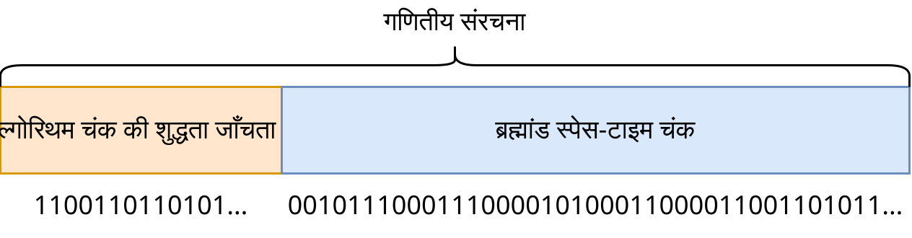
शायद यह विवरण बहुत स्पष्ट नहीं है, इसलिए मैं ऐसे ब्रह्मांड का एक उदाहरण दिखाना चाहता हूं जो ऐसा दिखता है जैसे इसकी गणना सरलता से की जाती है, लेकिन वास्तव में ऐसा नहीं है। एक स्पष्ट उदाहरण: अतीत को बदलने की असंभावना के साथ समय यात्रा। मुझे इस तरह की समय यात्रा के दो अच्छे उदाहरण पता हैं: हैरी पॉटर के बारे में किताबें और "टेनट" फिल्म। कल्पना करें कि आप उस दुनिया का अनुकरण कैसे करेंगे जहाँ समय यात्रा संभव है, लेकिन यह इस तरह से किया गया है कि अतीत अपरिवर्तित रहता है? आपको अतीत का अनुकरण भविष्य को ध्यान में रखते हुए करना होगा, और भविष्य - अतीत को ध्यान में रखते हुए, और उन्हें एक-दूसरे के अनुकूल होना चाहिए। हमारे पास अभी इस तरह के समय यात्रा नियमों वाले ब्रह्मांडों की गणना करने के तरीके नहीं हैं, इसलिए यहां एकमात्र संभावित विकल्प सभी संभावित दुनियाओं (सभी संभावित भविष्य और अतीत के साथ) की पुनरावृत्ति करना और जांचना है कि उनमें से कौन से सही नियमों को पूरा करते हैं। यानी पूरी दुनिया को केवल "पूरे समय एक साथ" के प्रारूप में गणना की जा सकती है। लेकिन उस दुनिया में रहने वाले प्राणी स्पष्ट रूप से महसूस करते हैं कि वे जीवित हैं और अपनी समय यात्रा के नियमों से हैरान हैं। इस बारे में आप "कारणात्मक ब्रह्मांड" [20] लेख में और अधिक विस्तार से पढ़ सकते हैं।
वैसे, "द यूनिवर्स इज नॉट ए कंप्यूटर" नाम का एक लेख है [21], जो भौतिकी के विवरण के तरीके को अलग तरह से देखने का प्रस्ताव करता है और "पूरे समय एक साथ" गणना के लिए एक दृष्टिकोण प्रदान करता है।
सातत्य ब्रह्मांड का एक और उदाहरण हमारा ब्रह्मांड है, जिसमें सापेक्षता का सिद्धांत है। हमारे पास एक ही वैश्विक समय नहीं है। अंतरिक्ष के प्रत्येक खंड में समय अलग-अलग गति से बीतता है। इसलिए पूरे ब्रह्मांड को अंतरिक्ष-समय ब्लॉक के रूप में प्रस्तुत किया जाना चाहिए, जहाँ समय इस ब्लॉक के भागों के बीच केवल एक संबंध है।
इन दोनों उदाहरणों में, ब्रह्मांडों को स्थानीय सरलता द्वारा अनुमानित किया जा सकता है। पहले ब्रह्मांड के लिए, हम समय यात्रा की उपेक्षा करते हैं, और दूसरे के लिए, हम समय मंदता की उपेक्षा करते हैं। इस वजह से, मैं आगे सरल सिमुलेशन के संदर्भ में तर्क देना जारी रखूंगा, क्योंकि यह सरल है और यह कई संभावित प्रकार के ऐसे ब्रह्मांडों का अच्छी तरह से अनुमान लगाता है, यदि सभी नहीं। लेकिन यह एक गलती भी हो सकती है।
क्या हमारे भौतिकी के नियम स्थानीय सरलता के लिए कम हो जाते हैं?
क्या होगा अगर हमारे ब्रह्मांड की गणना सरलता से नहीं की जा सकती है और स्थानीय रूप से भी सरल गणना द्वारा अनुमानित नहीं किया जा सकता है? इस लेख के कई निष्कर्ष इस पर निर्भर करेंगे।
गणना योग्य ब्रह्मांडों के विवरण के प्रारूप को "गणितीय संरचनाओं" के रूप में विकसित करें। यह निर्धारित करें कि क्या हमारे ब्रह्मांड को इस प्रारूप में लिखना संभव है।
#2निर्माण का सिद्धांत
यदि सभी संभावित ब्रह्मांड मौजूद हैं, तो क्या लॉर्ड ऑफ द रिंग्स, स्टार वार्स, एनीमे से ट्रांसपोर्टर्स का ब्रह्मांड मौजूद है? इन सवालों के जवाब देने के लिए, मैं निम्नलिखित सिद्धांत पेश करता हूं।
निर्माण का सिद्धांत — यदि ब्रह्मांड और उसके भौतिकी के नियमों को डिजाइन करने का एक तरीका पेश किया जाता है, तो ऐसा ब्रह्मांड मौजूद है।
उदाहरण के लिए, यदि हमारे पास हमारे ब्रह्मांड के सिमुलेशन का एक प्रोग्राम है, तो (विचार में) हम इसे ले सकते हैं और एक ऐसी दुनिया का निर्माण कर सकते हैं जहाँ वर्तमान समय के आधे लोग हवा के परमाणुओं से बदल दिए जाते हैं। इसलिए ऐसी दुनिया शारीरिक रूप से मौजूद है, और कोई व्यक्ति महसूस करता है कि वह इस बेतुकेपन में रह रहा है।
यहां "निर्माण" का अर्थ है कि हम "एटम एडिटर 11D अल्ट्रा" नामक कुछ प्रोग्राम लेंगे, इसमें हमारा वर्तमान समय लोड करेंगे, इसे संपादित करेंगे और परिणामी परमाणुओं के सेट को संपादित समय से आगे अनुकरण करेंगे।
क्या हम इसी तरह लॉर्ड ऑफ द रिंग्स की सटीक दुनिया बना सकते हैं? बहुत अधिक संभावना है कि नहीं। सबसे पहले, इस तरह की दुनिया के लिए भौतिकी के नियम हमारे समान होने चाहिए, जादू के होने के लिए कुछ संशोधनों के साथ, लेकिन यह निश्चित नहीं है कि इस तरह के भौतिकी के नियम मिल सकते हैं। इसके बाद, हम चाहते हैं कि यह दुनिया हमारे जैसे स्वतंत्र रूप से उत्पन्न हो, बिग बैंग, विकास और इसी तरह। यह एक और बड़ी बाधा है जो इस तरह की दुनिया को खोजने में हस्तक्षेप करेगी। फिर हम चाहते हैं कि इस दुनिया में पूरी तरह से कहानी दोहराई जाए। शायद हर जीवित प्राणी फिल्म में दिखने जैसा हो। सामान्य तौर पर, ये सभी प्रतिबंध अंततः ब्रह्मांड की प्रारंभिक स्थिति पर विशाल समीकरण प्रणाली के रूप में दिखाई देंगे। और जैसा कि हम जानते हैं, सभी समीकरण प्रणालियों के समाधान नहीं होते हैं। बस इतना है कि, यदि आप उनके ग्राफ़ बनाते हैं, तो वे प्रतिच्छेद नहीं करेंगे। अगले उदाहरण की तरह:

png
यहां प्रत्येक बिंदु एक ब्रह्मांड है, और ग्राफ़ एक शर्त को पूरा करने वाले ब्रह्मांड को दर्शाता है। लॉर्ड ऑफ द रिंग्स की दुनिया में कई शर्तें होती हैं, इसलिए इस दुनिया को सभी शर्तों के सभी ग्राफ़ के प्रतिच्छेदन पर होना चाहिए।
लेकिन यहां ऐसे बिंदु हैं जो इन सभी शर्तों के सबसे करीब हैं:
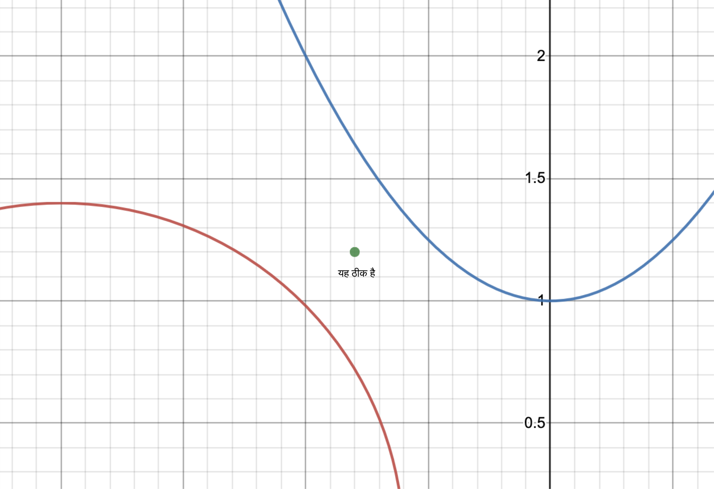
और इसका मतलब है कि हम उन ब्रह्मांडों को पा सकते हैं जो लगभग हमारी शर्तों को पूरा करते हैं।
इसलिए, लॉर्ड ऑफ द रिंग्स की दुनिया शायद पूरी तरह से उस सटीकता से मौजूद नहीं है जिस तरह से इसे पुस्तकों में वर्णित किया गया है या फिल्मों में दिखाया गया है, हमारी सभी कल्पना योग्य या अकल्पनीय आवश्यकताओं के साथ। दूसरी ओर, शायद ऐसी दुनियाएं हैं जो इसके करीब हैं, जिन पर इतने सारे प्रतिबंध नहीं लगाए गए हैं, और जितने अधिक समझौता हम करते हैं, उतना ही स्वाभाविक परिणाम निकलेगा, उतना ही बड़ा इन दुनियाओं का स्पेक्ट्रम होगा। हो सकता है कि अधिक स्वाभाविक दुनिया लॉर्ड ऑफ द रिंग्स की दुनिया से कहीं अधिक दिलचस्प हो, इसलिए नुकसान बहुत छोटा है।
दूसरी ओर, हमें ट्रांसपोर्टर्स की दुनिया बनाने से कोई नहीं रोक सकता। हम मध्य युग में मौजूद किसी भी दुनिया को ले सकते हैं, जिसमें लोग हैं, फिर उसमें भविष्य के व्यक्ति को उसकी मृत्यु के बाद डाल सकते हैं, इस तरह की दुनिया को आगे अनुकरण कर सकते हैं और देख सकते हैं कि क्या होता है। तो इस अर्थ में, ट्रांसपोर्टर्स की दुनिया असंभव नहीं है। हालाँकि, फिर से, आपके पसंदीदा एनीमे से बिल्कुल सटीक एनालॉग मौजूद नहीं है।
इस अध्याय में, मैंने स्पष्ट रूप से माना है कि हमारे ब्रह्मांड का अनुकरण कंप्यूटर पर किया जा सकता है और यह unasanu का पालन करता है। लेकिन यह एक अलग, बड़ा प्रश्न है, जिस पर हम आगे चर्चा करेंगे। अभी के लिए, मैं इसे समझने में आसानी के लिए स्पष्ट रूप से मानूंगा। आप हमेशा इन उदाहरणों को अन्य ब्रह्मांडों पर लागू कर सकते हैं जो unasunu का पालन करते हैं।
और निर्माण का सिद्धांत खंडन का सबसे अच्छा उम्मीदवार है, क्योंकि हम अभी तक हर चीज का सिद्धांत नहीं जानते हैं, इसलिए हम यह कहने में सक्षम हैं कि क्या परमाणुओं का कोई संयोजन मौजूद है या नहीं। क्या होगा अगर हम अपनी दुनिया की एक प्रति नहीं बना सकते हैं जहाँ आधे लोग हवा से बदल दिए जाते हैं? क्या होगा अगर यह किसी नियम का उल्लंघन करता है? कॉनवे के "लाइफ़" खेल जैसे सरल सरल दुनियाओं के लिए, हम ऐसा कह सकते हैं, लेकिन यह सभी प्रकार की दुनियाओं के लिए शायद ही सच हो।
और बेशक, निर्माण का सिद्धांत कुछ मामलों में लागू नहीं किया जा सकता है यदि हमारे ब्रहमांड की गणना सरलता से नहीं की जाती है।
संक्षेप में, unasanu के अनुसार, सभी कल्पना योग्य दुनियाएं नहीं हैं, बल्कि सभी निर्मित दुनियाएं हैं।
#2सब्सट्रेट-स्वतंत्रता
यदि आपको यह आश्चर्यजनक लगता है कि ब्रह्मांड प्राकृतिक संख्याओं द्वारा गणना योग्य हैं, तो मैं आपको एक सिद्धांत दिखाना चाहता हूं जो इसे अधिक विश्वसनीय बनाता है।
सब्सट्रेट-स्वतंत्रता — गणनाओं का गुण है जिसका अर्थ है कि उनका परिणाम इस बात पर निर्भर नहीं करता है कि ये गणनाएं किस पर की जाती हैं।
आप जिस ब्रह्मांड में रहते हैं, उसकी गणना कैसे भी की जाए, आपको इसका एहसास नहीं होगा। इसलिए स्थिर संख्याओं पर गणना की संभावना आश्चर्यजनक नहीं लगती है।
मुझे लगता है कि यह गणनाओं के सबसे शक्तिशाली गुणों में से एक है। नियतात्मक गणनाओं का परिणाम इस बात पर निर्भर नहीं करता है कि हम उन्हें किस ट्यूरिंग-पूर्ण सब्सट्रेट पर गणना करते हैं:
- एक कंप्यूटर पर,
- बेबेज की विश्लेषणात्मक मशीन पर,
- 30 मिलियन लोगों की सेना से बने जीवित कंप्यूटर पर (नमस्ते, ल्यू सीसिन!),
- Minecraft खेल में रेडस्टोन पर,
- या अगर कोई अमर प्राणी सबसे सरल नियमों के अनुसार, पत्थरों को स्थानांतरित करते हुए, सेलुलर ऑटोमेटा 110 पर ये गणना करता है (ऑटोमेटा 110 ट्यूरिंग-पूर्ण है [22])।
हाँ, मैं xkcd उद्धृत कर रहा हूँ
चित्र क्लिक करने योग्य है।

png
#2गणना का तथ्य प्रेक्षक की व्याख्या है
मान लें कि हम यह मान लेते हैं कि केवल वे ब्रह्मांड मौजूद हैं जिन्हें हमारे कंप्यूटर पर स्पष्ट रूप से अनुकरण किया जाता है।
मान लें कि निम्नलिखित मानसिक प्रयोग: हमने ऐसा सिमुलेशन लॉन्च किया है, और वहां आभासी प्राणी अपने जीवन जी रहे हैं, और फिर मानव जाति विलुप्त हो गई, और अरबों साल बाद एलियन वहां आए ताकि यह देख सकें कि क्या हो रहा है। क्या होगा अगर वे अनंत काल तक यह नहीं समझ पाते कि इस कंप्यूटर पर क्या गणना की जा रही थी? क्या इस वजह से आभासी ब्रह्मांड का अस्तित्व समाप्त हो जाएगा? और क्या होगा अगर ब्रह्मांड में बड़ी संख्या में कंप्यूटर हैं जो सभी संभावित सिमुलेशन कर रहे हैं, बस हमने उनकी सही व्याख्या नहीं पाई है?
#2सभी प्राकृतिक संख्याएं क्यों मौजूद हैं
अगला तर्क जो unasanu के खिलाफ दिया जा सकता है: सभी प्राकृतिक संख्याओं को स्वयं ही क्यों मौजूद होना चाहिए? क्या होगा अगर सिमुलेटेड ब्रह्मांड केवल इसलिए मौजूद है क्योंकि इसे एन्कोड करने वाली संख्या हमारे कंप्यूटर पर है?
सबसे पहले, प्राकृतिक संख्याएँ अधिकतम प्राकृतिक, स्वतः स्पष्ट और सरल हैं। मेरे लिए, अनंत संख्याओं के बाद दशमलव बिंदु वाली वास्तविक संख्याओं के अस्तित्व से अधिक, स्वयं प्राकृतिक संख्याओं के अस्तित्व पर विश्वास करना बहुत आसान है।
लेकिन अगर यह पर्याप्त नहीं है और अगर हम मानते हैं कि केवल वे संख्याएँ मौजूद हैं जो किसी भौतिक वस्तु द्वारा एन्कोड की जाती हैं, तो भी हमारे परिमित ब्रह्मांड में काफी संख्या में संख्याएँ हैं। उदाहरण के लिए, हम सड़क से कोई भी पत्थर ले सकते हैं और उसे परत दर परत स्कैन कर सकते हैं, फिर हम सभी छवियों को एक बहुत बड़ी संख्या में इकट्ठा कर सकते हैं। हम हर पत्थर को बहुत बड़े कोणों से स्कैन कर सकते हैं। हम सभी स्नैपशॉट को विभिन्न क्रमों में मिला सकते हैं, जिससे हमें और भी अधिक संख्याएँ मिलती हैं।
अधिक संख्याएँ तब प्राप्त होंगी जब हम विभिन्न कोणों से स्कैन किए गए पत्थरों से संख्याओं के संयोजन से लंबी संख्याओं पर विचार करें। हम पत्थरों के क्रम के लिए अविश्वसनीय संख्या में क्रमचय ले सकते हैं और प्रत्येक पत्थर के लिए हम विभिन्न कोण चुन सकते हैं। इस प्रकार, हमारे ब्रह्मांड में निश्चित आकार तक सभी संभावित संख्याएँ मिल सकती हैं।
इसका अर्थ है कि हमारे ब्रह्मांड में पहले से ही कई गणना किए गए ब्रह्मांड एन्कोड किए गए हैं। हम यह भी कह सकते हैं कि हमारे ब्रह्मांड के अस्तित्व से बड़ी संख्या में अन्य ब्रह्मांडों के अस्तित्व का पालन होता है। पहले मैं खुद के लिए इसी तरह से अन्य ब्रह्मांडों के अस्तित्व को सिद्ध करता था और इसे "दुनियाओं के निर्माण के विचार" कहता था, लेकिन अब मुझे प्राकृतिक संख्याएँ अधिक मौलिक लगती हैं और मुझे ऐसी चीजों की आवश्यकता नहीं है।
वैसे, इसी तरह ग्रेग इगन की डस्ट थ्योरी [2] तैयार की गई है, जिसे उन्होंने अपने उपन्यास "ऑर्डर ऑफ द स्टार्स" में वर्णित किया था।
#2अनंत समय और अनंत मेमोरी
यह दिखाया जा सकता है कि संख्या के रूप में मौजूद सिमुलेशन के लिए अनंत मेमोरी, अनंत समय और तदनुसार, अनंत कंप्यूटिंग शक्ति उपलब्ध है।
सबसे पहले, अनंत समय कैसे प्राप्त होता है? यदि हम सिमुलेशन कोड में अगले चरण के अस्तित्व को किसी भी तरह से सीमित नहीं करते हैं, अर्थात किसी भी वर्तमान चरण के लिए हमेशा एक अगला होता है, तो 1 से N तक के चरणों को एन्कोड करने वाली किसी भी संख्या के लिए, हम हमेशा 1 से N + 1 तक के चरणों को एन्कोड करने वाली संख्या बना सकते हैं। इसलिए, यहां समय किसी भी तरह से सीमित नहीं है, और संख्या के रूप में सिमुलेशन के रूप में ब्रह्मांड अनंत काल तक मौजूद रह सकता है।
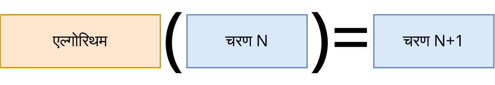
अनंत समय के कारण, आप गणना की गति को मनमाने ढंग से बड़ा बना सकते हैं, बस गणना देखने वाले चेतना को रोककर।
अनंत मेमोरी के बारे में थोड़ा मुश्किल है। मान लें कि मेमोरी से हमारा तात्पर्य उस संख्या की लंबाई से है जो वर्तमान चरण को एन्कोड करती है। उदाहरण के लिए, हमारा कोड इस तरह से लिखा गया है कि एल्गोरिथम जाँच करता है कि पिछला चरण वर्तमान से संबंधित है या नहीं। तब जब हम मेमोरी का अनुरोध करते हैं, तो हम अगली संख्या ढूंढते हैं, और एल्गोरिथम जांचता है कि यह संख्या वही है जो हमें चाहिए या नहीं। जब पर्याप्त मेमोरी नहीं होती है, तो एल्गोरिथम इस सिमुलेशन को एन्कोड करने वाली संख्या को अस्वीकार कर सकता है। जब पर्याप्त मेमोरी होती है, तो एल्गोरिथम इसे स्वीकार कर लेता है। तब, हम कितनी भी मेमोरी का अनुरोध करें, हमेशा एक ऐसी संख्या होगी जिसमें आवश्यक मात्रा में मेमोरी हो।
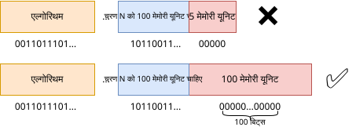
इसलिए, यह कहना अधिक सही होगा कि आप मनमाने ढंग से बहुत अधिक मेमोरी का अनुरोध कर सकते हैं, लेकिन हर बार एक परिमित संख्या में।
अनंत समय और मेमोरी बहुत ही सुखद गुण हैं, जिनका आगे सक्रिय रूप से उपयोग किया जाएगा।
#क्या यह हमारे ब्रह्मांड पर लागू होता है
पहले मैंने सिमुलेशन पर इतने सारे प्रतिबंध क्यों लगाए थे और मानसिक प्रयोग के उदाहरण में वैकल्पिक, गणना योग्य भौतिकी का उपयोग किया था? ऐसा इसलिए है क्योंकि यह अज्ञात है कि हमारे ब्रह्मांड को कंप्यूटर के अंदर कितनी अच्छी तरह से मौजूद किया जा सकता है, यह कितना गणना योग्य है। समस्या केवल यह नहीं है कि हम हर चीज का सिद्धांत नहीं जानते हैं, ताकि इस प्रश्न का उत्तर दिया जा सके, बल्कि यह भी है कि हम वर्तमान में कुछ घटनाओं को जानते हैं जो इस संभावना को अस्वीकार करते हैं। आइए ज्ञात समस्याओं पर विचार करें।
क्या हमारे भौतिकी के नियमों की गणना की जा सकती है?
#2अनंत ब्रह्मांड का सिमुलेशन
मान लें कि हमारा ब्रह्मांड अनंत है। यदि ऐसा है, तो क्या इसे कंप्यूटर पर गणना करना असंभव है? नहीं, क्योंकि हमारे पास जानकारी के प्रसार की अधिकतम गति पर एक सीमा है - प्रकाश की गति।
आइए विचार करें कि वर्तमान समय पर पृथ्वी ग्रह प्राप्त करने के लिए किन गणनाओं को करना होगा। हमें बिग बैंग से अंतरिक्ष का कोई परिमित टुकड़ा लेना होगा और उसे वर्तमान समय तक अनुकरण करना होगा। इस मामले में, हम प्रारंभिक टुकड़े को इतना बड़ा चुनते हैं ताकि ब्रह्मांड के किनारे से जानकारी पृथ्वी के वर्तमान समय तक नहीं पहुँच सके। इस प्रकार, वर्तमान समय तक हमारे पूरे इतिहास में, हम देखेंगे कि अधिक दूर के सितारों से अधिक जानकारी आ रही है, जैसे कि हमारा ब्रह्मांड अनंत है। लेकिन अगर हम इस सिमुलेशन को आगे गणना करने की अनुमति देते हैं, तो पृथ्वी तक जानकारी पहुँच सकती है कि कहीं ब्रह्मांड का किनारा है, जिसके आगे कुछ भी गणना नहीं की जाती है। हम इसकी अनुमति नहीं दे सकते, इसलिए हम वापस जाते हैं और बिग बैंग से एक बड़ा टुकड़ा लेते हैं ताकि हम समय में आगे अनुकरण कर सकें, और इसी तरह हर बार। पहले दिखाया गया था कि हमारे पास अनंत मेमोरी और गणना है, इसलिए यह कोई समस्या नहीं है।
गणितीय रूप से, किसी भी परिमित समय T के लिए, हम बिग बैंग से अंतरिक्ष का ऐसा परिमित टुकड़ा पा सकते हैं ताकि इसे T तक अनुकरण करते समय, इस टुकड़े के केंद्र में प्रेक्षक तक यह जानकारी नहीं पहुँचती कि ब्रह्मांड परिमित है।
और हम कैसे जानते हैं कि बिग बैंग के समय में मौलिक कणों का संगठन कैसा था? सभी संभावित प्रारंभिक शर्तें संख्या के रूप में मौजूद हैं, इसलिए यह मायने नहीं रखता।
हालांकि, इस पद्धति को अधिकतम गति पर सीमा के बिना अनंत ब्रह्मांडों पर लागू नहीं किया जा सकता है। उदाहरण के लिए, यह न्यूटन के गुरुत्वाकर्षण वाले ब्रह्मांड पर लागू नहीं होता है, जहां गुरुत्वाकर्षण तुरंत फैलता है, यानी "त्वरित कार्य" वहां काम करता है। और प्रकाश की गति पर सीमा वाले ब्रह्मांड का एक उदाहरण - कॉनवे की "लाइफ़" खेल, वहां अधिकतम गति 1 चाल में 1 कोशिका है।
इसके साथ ही, हमारे पास क्वांटम उलझाव है, जो ऐसा लगता है जैसे यह प्रकाश की गति से तेजी से जानकारी भेज सकता है। यह कोई समस्या नहीं है, क्योंकि ऐसे कण पास में एक साथ बनाए जाते हैं, और फिर हम उन्हें जानकारी प्राप्त करने के लिए ब्रह्मांड के वांछित बिंदु पर ले जाते हैं, और चूंकि वे प्रकाश की गति से तेजी से नहीं चल सकते हैं, इसलिए T के परिमित क्षण तक वे सशर्त केंद्र से एक परिमित दूरी तक ले जाए जाएँगे, और तब सिमुलेशन के लिए बस एक बड़ा टुकड़ा लेना होगा, ताकि उलझाव वाले कण तक भी ब्रह्मांड के किनारे पर गणना के अभाव के बारे में जानकारी न पहुँचे।
यह सिमुलेशन पद्धति गणितीय विश्लेषण के सीमाओं के समान है: प्रत्येक निजी ब्रह्मांड किसी समय के बाद गलत हो जाएगा, लेकिन जितना दूर, उतना ही अधिक सही, और इस अनुक्रम की सीमा वही है जो हम खोज रहे हैं। आइए इसे सीमा संक्रमण विधि द्वारा सिमुलेशन कहें।
सीमा संक्रमण विधि द्वारा सिमुलेशन — एक ऐसी विधि जिसके द्वारा संभावित रूप से अनंत के साथ ब्रह्मांडों का अनुकरण किया जा सकता है, इस संभावित रूप से अनंत मात्रा के परिमित आकार को लगातार बढ़ाया जा रहा है।
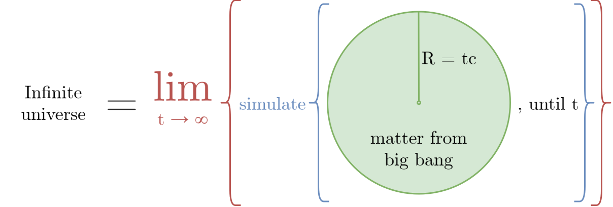
#2सातत्य का सिमुलेशन
जैसा कि हम याद करते हैं, कंप्यूटर सिमुलेशन में सातत्य को सीधे डालना असंभव है। लेकिन फिर मानवता कंप्यूटर पर शारीरिक सिमुलेशन की गणना कैसे करने में सक्षम है? उत्तर है - सन्निकर्ष।
पहला सन्निकर्ष जिसका हम कंप्यूटर पर सामना करते हैं, वह है वास्तविक संख्याएं। दशमलव बिंदु के बाद अनंत संख्या में अंकों वाली ईमानदार वास्तविक संख्या को संग्रहीत और संसाधित करना असंभव है। इसलिए वास्तविक संख्याओं को सन्निकर्ष के रूप में संग्रहीत किया जाता है - मेमोरी के कुछ परिमित खंड द्वारा। दो सबसे अधिक उपयोग किए जाने वाले प्रकार की वास्तविक संख्याएँ 32-बिट (फ़्लोट) और 64-बिट (डबल) हैं, उनके साथ काम करना सीधे प्रोसेसर में एन्कोड किया गया है। गणना में इस तरह की सीमित संख्याएँ राउंडिंग त्रुटियों के अधीन हैं (0.1 + 0.2 = 0.30000000000000004), इसलिए उनके साथ काम करने वाली सभी विधियों को इस तरह से विकसित किया जाता है ताकि इन त्रुटियों को कम से कम किया जा सके और आउटपुट में पर्याप्त संख्या में सही अंक प्राप्त किए जा सकें। जाहिर है कि 64-बिट संख्याएँ 32-बिट संख्याओं की तुलना में अधिक सटीक हैं। इसके अलावा, मनमाने आकार की वास्तविक संख्याएँ बनाने के लिए पुस्तकालय हैं, और तदनुसार, मनमाने सटीकता, उदाहरण के लिए, 1024 बिट, 10000 बिट। इस तरह की संख्याओं का उपयोग गणनाओं में किया जा सकता है जहाँ सामान्य सटीकता पर्याप्त नहीं है।
भौतिक सिमुलेशन की विधियों के लिए, एक परिमित तत्व विधि (FEM) [24] है, जो विभिन्न सामग्रियों वाले किसी दिए गए स्थान पर अंतर समीकरणों को संख्यात्मक रूप से हल करने की अनुमति देता है। उदाहरण के लिए, हम गर्मी के प्रसार की समस्या को हल करना चाहते हैं, जिसके लिए एक काफी सरल अंतर समीकरण है। गर्मी के लिए, हम मानते हैं कि सातत्य के प्रत्येक बिंदु में एक वास्तविक संख्या होती है जो तापमान दर्शाती है। इसके काम करने का सरलीकृत तंत्र:
- अंतरिक्ष को किसी दिए गए ग्रिड में विभाजित करें।

png
- मान लीजिए कि इस ग्रिड के प्रत्येक शीर्ष पर गर्मी का सही मान होता है, और शीर्षों के बीच गर्मी एक मूल्य से दूसरे में समान रूप से गुजरती है। इस प्रकार, हमें गर्मी मूल्यों का एक सातत्य मिला, लेकिन यह असतत संख्या परिमित तत्वों द्वारा दर्शाया गया है।

png
- प्रत्येक ऐसा परिमित तत्व एक सरल समीकरण द्वारा लिखा जा सकता है, और यदि इस समीकरण को गर्मी के अंतर समीकरण में प्रतिस्थापित किया जाता है, तो पूरे अंतरिक्ष के लिए रैखिक बीजगणितीय समीकरणों (SLAE) की एक प्रणाली प्राप्त की जा सकती है, जिसे आसानी से हल किया जाता है और जिसके लिए कई विधियाँ विकसित की गई हैं।

png
- SLAE को हल करने के बाद, हमें अगले समय में अंतरिक्ष के प्रत्येक बिंदु पर गर्मी का मान मिलता है। यह एक आदर्श समाधान नहीं होगा, लेकिन काफी सटीक होगा। और इसका गुण यह है कि हम ग्रिड को जितना अधिक बारीक बनाएंगे, यह उतना ही सटीक होगा।

png

jpg
क्या हमारे ब्रह्मांड को FEM द्वारा अनुकरण किया जा सकता है? पूरी तरह से। केवल सटीकता की गणना के बारे में एक प्रश्न है। आप प्लैंक लंबाई से 1000 गुना छोटा ग्रिड चुन सकते हैं, और ऐसा लगता है कि यह हमारे दुनिया को देखने के लिए पर्याप्त होना चाहिए।
अब सटीकता का प्रश्न: यदि हमारे ब्रह्मांड को FEM द्वारा अनुकरण किया जाता है या यह पूरी तरह से एक सेलुलर ऑटोमेटा है, तो क्या हम इसे प्रयोगात्मक रूप से पता लगा सकते हैं? सैद्धांतिक रूप से, यह संभव है, इसके लिए आपको या तो अविश्वसनीय रूप से उच्च ऊर्जा के साथ प्रयोग करने की आवश्यकता है, या बहुत दूर के सितारों को देखने की आवश्यकता है, या किसी प्रकार के बहुत ही चालाक घटनाओं के सेट को तैयार करने की आवश्यकता है। ऐसा लगता है कि इसके लिए आप अंतरिक्ष की असततता के कुछ कलाकृतियों की खोज कर सकते हैं।
इसके साथ ही, एक सरल सिद्धांत बना रहता है: कोई भी प्रयोग केवल कुछ सटीकता के साथ सत्य कहता है। यदि हमने एक ऐसा प्रयोग किया है जहाँ हमने एक प्रोटॉन को गैलेक्सी के द्रव्यमान के बराबर ऊर्जा दी है, और फिर हमने इसे इस तरह के एक और प्रोटॉन से टकराया है और देखा है कि उनके टकराव का परिणाम अंतरिक्ष के सातत्य के साथ सहमत है, तो यह हमें बताता है कि अंतरिक्ष केवल कुछ दूरी तक सातत्य जैसा दिखता है, भले ही वह अविश्वसनीय रूप से छोटा हो। और यह स्पष्ट नहीं है कि क्या इस तरह का प्रयोग तैयार करना संभव है जो केवल तभी काम करेगा जब अंतरिक्ष पूरी तरह से सातत्य हो।
क्या इस तरह के सातत्य प्रणाली को विकसित करना संभव है जिसमें अंतरिक्ष की सातत्यता को दिखाने वाला एक प्रयोग करना संभव हो, 100% सटीकता के साथ? प्रयोग के लिए आवश्यकताएँ इस प्रकार हैं: इसे इस वातावरण के अंदर बुद्धिमान प्राणियों द्वारा किया जाना चाहिए, जबकि प्रयोग को पदार्थ और ऊर्जा की परिमित मात्रा की आवश्यकता होती है और यह एक परिमित समय तक चलता है।
यदि हां, तो क्या हमारा ब्रह्मांड इस प्रकार के सातत्य माध्यम से संबंधित है?
ठीक है, मान लें कि हमारे ब्रह्मांड को अविश्वसनीय सटीकता के साथ FEM द्वारा अनुकरण किया जाता है। लेकिन अगर यह सटीकता परिमित है, तो इसका मतलब है कि हम एक ऐसा प्रयोग कर सकते हैं जो दिखाता है कि अंतरिक्ष वास्तव में असतत है। और क्या इस तरह का सिमुलेशन संभव है जिसमें ऐसा प्रयोग असंभव है? हाँ, और मैं इसे आगे दिखाऊंगा।
मान लें कि हमारे ब्रह्मांड का वर्णन कुछ अंतर समीकरण द्वारा किया गया है और मानक मॉडल में प्रत्येक कण को बिंदु द्वारा नहीं, बल्कि कुछ क्षेत्र द्वारा दर्शाया गया है। तब आप इस समीकरण पर FEM लागू कर सकते हैं और निम्नलिखित एल्गोरिथम को लागू कर सकते हैं:
kको 1 से ∞ तक दोहराएँ।- वास्तविक संख्याओं की सटीकता 2k है।
- अंतरिक्ष में ग्रिड का आकार X·2k है।
- समय में ग्रिड का आकार Y·2k है।
- दी गई सटीकता वाली वास्तविक संख्याओं का उपयोग करके दिए गए अंतरिक्ष और समय के ग्रिड पर पूरे ब्रह्मांड के लिए FEM को हल करें।
इस तरह के एल्गोरिथम के लिए, यह पता चलता है कि k चक्र के प्रत्येक अगले पुनरावृत्ति पर हम एल्गोरिथम के सभी तत्वों की सटीकता को 2 गुना बढ़ा देते हैं। और अब मान लें कि उस ब्रह्मांड में रहने वाला प्रेक्षक यह देखने के लिए एक प्रयोग करना चाहता है कि उसका अंतरिक्ष (या समय) कितना सातत्य है। किसी भी प्रयोग की सटीकता के लिए, हमेशा एक ऐसा k होगा ताकि उसका प्रयोग इस बात को दिखाए कि उसका ब्रह्मांड सातत्य से बना है। यह सीमा संक्रमण विधि द्वारा सिमुलेशन का एक और उपयोग है।
यह विशेष रूप से उस मामले के लिए अच्छी तरह से काम करता है जब ब्रह्मांड में थर्मल डेथ होता है। तब आप कुछ परिमित k चुन सकते हैं जिसके लिए प्रेक्षक ब्रह्मांड के पूरे अस्तित्व में आवश्यक सटीकता के साथ एक प्रयोग नहीं कर पाएगा।
यह एल्गोरिथम तीन निकायों की समस्या या डबल पेंडुलम जैसे अराजक प्रणालियों के लिए भी अच्छी तरह से काम करेगा: किसी भी समय t और इस तरह की सटीकता eps के लिए, आप एक ऐसा k पा सकते हैं ताकि उस समय निर्देशांक की सटीकता eps के बराबर हो।
इस प्रकार, किसी अर्थ में, सातत्य या वास्तविक संख्याओं वाले ब्रह्मांड भी गणना योग्य हैं, और इसलिए वे भी unasanu के अनुसार मौजूद हैं।
बेशक, मैंने दिखाया है कि यह केवल उन ब्रह्मांडों के लिए संभव है जिन्हें अंतर समीकरण द्वारा वर्णित किया जा सकता है और FEM को हल किया जा सकता है, और मुझे नहीं पता कि सातत्य के साथ कौन से अन्य ब्रह्मांड असंभव हैं। मेरा मानना है कि यह पहले से ही एक गणितीय समस्या है - यह निर्धारित करना कि सातत्य के साथ कौन से ब्रह्मांड इस विचार के अनुसार गणना योग्य हैं, और कौन से नहीं।
उदाहरण के लिए, "पदार्थ की अनंत अंतर्निहितता" [25] नामक एक सुंदर अवधारणा है, जिसमें कहा गया है कि कोई मौलिक कण नहीं हैं और सभी कण अपने छोटे ब्रह्मांड से बने हैं। मुझे यकीन नहीं है कि इस तरह के ब्रह्मांड को इस पद्धति से अनुकरण किया जा सकता है या नहीं।
यह निर्धारित करें कि किस प्रकार के अनंत और सातत्य ब्रह्मांडों को FEM द्वारा अनुकरण किया जा सकता है, उनमें से कौन से सीमा संक्रमण विधि द्वारा अनुकरण किया जा सकता है और क्या हमारे ज्ञात भौतिकी के नियम इस वर्ग के ब्रह्मांड से संबंधित हैं।
ठीक है, या हम यह कह सकते हैं कि सातत्य ब्रह्मांड भी स्वयं के लिए पहले से ही मौजूद हैं, क्योंकि वे नियतात्मक हैं, चाहे उनकी गणना कितनी भी की जाए।
हालांकि, यहां एक छोटा सा प्रश्न उठता है। यदि वास्तविक संख्याओं की संख्या प्राकृतिक संख्याओं से सख्ती से अधिक है, तो प्राकृतिक संख्याओं में सातत्य ब्रह्मांड कैसे फिट हो गए? उत्तर सरल है - गणना योग्य वास्तविक संख्याएँ एक गणनीय समुच्चय बनाती हैं। शेष वास्तविक संख्याएँ, जो इस समुच्चय को बनाती हैं, प्राकृतिक संख्याओं से अधिक होती हैं, गणना योग्य नहीं हैं। इस बारे में आप विकिपीडिया में और अधिक विस्तार से पढ़ सकते हैं: "गणना योग्य संख्या" [26]।
वैसे, मेरी सीमा संक्रमण पद्धति "पहुँच योग्य संख्याओं" (approachable number) की परिभाषा के समान है, जिन्हें गणना योग्य फ़ंक्शन की सीमा के रूप में परिभाषित किया गया है। मैंने यह अवधारणा "ए डिफ़ाइनेबल नंबर व्हिच कैन नॉट बी अप्रोक्सिमेटेड एल्गोरिथमिकली" [27] लेख से ली है। दिलचस्प बात यह है कि लगभग सभी ज्ञात उदाहरण गणना योग्य संख्याएँ "पहुँच योग्य" हैं। इसके साथ ही, आप एक ऐसी वास्तविक संख्या प्रस्तुत कर सकते हैं जो न केवल गणना योग्य नहीं है, बल्कि अप्राप्य भी है।
#2पूर्ण यादृच्छिकता
भौतिकी के हमारे ज्ञात नियमों से अगली समस्या - क्वांटम यांत्रिकी और इसकी पूर्ण यादृच्छिकता कई-संसारों के साथ। मैं वास्तव में यह नहीं समझता कि क्वांटम यांत्रिकी कंप्यूटर पर इसके सिमुलेशन में वास्तव में कौन सी समस्याएं प्रस्तुत करती है, इसलिए आइए मान लें कि एकमात्र शेष समस्या यह है कि पूर्ण यादृच्छिकता कैसे प्रदान की जाए।
जैसा कि हम याद करते हैं, कंप्यूटर पर पूर्ण यादृच्छिक संख्या प्राप्त करना असंभव है, केवल छद्म-यादृच्छिक, जो किसी एल्गोरिथम द्वारा गणना की जाती है, या यदि कंप्यूटर यादृच्छिक संख्याओं के लिए बाहरी वातावरण से डेटा लेता है। लेकिन जब हमें एक पूर्ण यादृच्छिक संख्या की नहीं, बल्कि पूर्ण यादृच्छिकता वाले ब्रह्मांड की आवश्यकता होती है, तो सब कुछ मौलिक रूप से बदल जाता है।
मान लें कि हमारे पास एक पूर्ण यादृच्छिक संख्या जनरेटर (RNG) वाला एक नियतात्मक ब्रह्मांड है जो पूर्ण यादृच्छिक बिट देता है - 0 या 1. ऐसे ब्रह्मांड को इस प्रकार अनुकरण किया जा सकता है: हर बार जब RNG से एक संख्या पूछी जाती है, तो हम वर्तमान ब्रह्मांड की एक प्रति बनाते हैं और एक ब्रह्मांड संस्करण को 1 दिखाते हैं, और दूसरे को - 0. इस प्रकार, प्रत्येक नया ब्रह्मांड यह सोचेगा कि उसके पास एक पूर्ण यादृच्छिक संख्या है। और ब्रह्मांडों की संख्या हर बार बढ़ जाती है जब RNG से एक संख्या पूछी जाती है।
हाँ, पूर्ण यादृच्छिकता वाले ब्रह्मांड के सिमुलेशन के लिए, हमें एक ब्रह्मांड का अनुकरण नहीं करना होगा, बल्कि एक साथ सभी संभावित विकल्पों का अनुकरण करना होगा। चूंकि हमारे पास मेमोरी या गणना की संख्या पर कोई सीमा नहीं है, इसलिए यह कोई समस्या नहीं है। मैक्स टैगमार्क इसे "व्यक्तिपरक यादृच्छिकता" कहते हैं, और मैंने यह विचार उनकी पुस्तक से लिया है [18]।
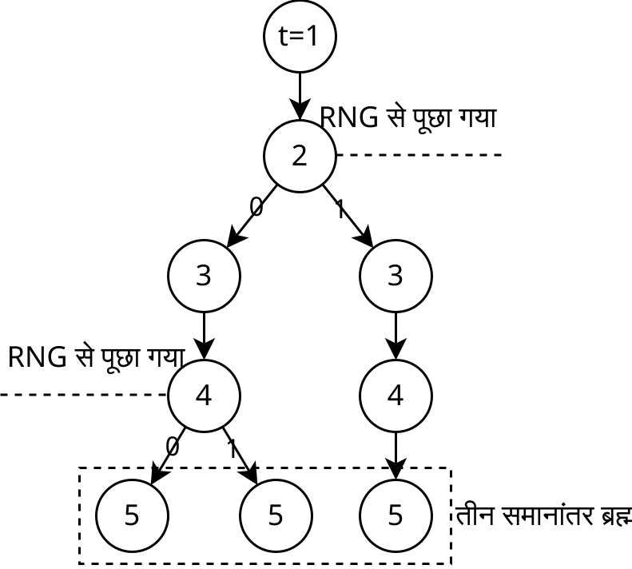
यह एक बहुत ही दिलचस्प तरीका है, आइए इसके लिए एक शब्द पेश करें।
पूर्ण एन्यूमरेटिव सिमुलेशन — एक ऐसे ब्रह्मांड के सिमुलेशन की एक विधि जिसमें एक गणना योग्य या अपरिभाषित फ़ंक्शन होता है, लेकिन यह फ़ंक्शन मानों की एक परिमित संख्या देता है, जिसका अर्थ है कि हम इस ब्रह्मांड का अनुकरण कर सकते हैं, बस इस फ़ंक्शन के सभी मानों की पुनरावृत्ति करके।
दिलचस्प बात यह है कि इन सभी विकल्पों में से, छद्म-यादृच्छिक संख्या उत्पन्न करने के लिए कोई भी एल्गोरिथम मिलेगा। यह इस बात के समान है कि सभी संभावित संख्याओं में से, वे निश्चित रूप से वे होंगे जो गणना कर सकते हैं।
बेशक, क्वांटम यांत्रिकी में केवल पूर्ण यादृच्छिकता ही नहीं है, बल्कि ये ब्रह्मांड किसी तरह एक-दूसरे के साथ बातचीत करते हैं, इसलिए वहां सब कुछ बहुत अधिक जटिल है। हालांकि, ऐसा लगता है कि वर्णित को ध्यान में रखते हुए, इसकी गणना करना काफी संभव है। अगर मैं गलत हूं और क्वांटम यांत्रिकी में अन्य प्रतिबंध हैं जो इसे कंप्यूटर पर अनुकरण करने से रोकते हैं, तो कृपया मुझे बताएं।
#2गणना योग्यता
गणना योग्यता किसी वस्तु का गुण है जो उसे कंप्यूटर पर गणना करने से रोकता है। गणना योग्यता के सभी ज्ञात उदाहरणों में या तो अनंत संख्या में दशमलव बिंदु वाले वास्तविक संख्याओं की आवश्यकता होती है, या रुकने की समस्या का समाधान होता है।
रुकने की समस्या — यह यह निर्धारित करने का कार्य है कि किसी दिए गए प्रोग्राम को दिए गए इनपुट के साथ कभी बंद हो जाएगा या नहीं।
एलन ट्यूरिंग ने सिद्ध किया कि सामान्य तौर पर किसी भी प्रोग्राम के लिए रुकने की समस्या को हल करने वाला एक प्रोग्राम होना तार्किक रूप से असंभव है। अगर यह संभव है, तो यह केवल एक बाहरी इकाई के रूप में संभव है जो एल्गोरिथम के अधीन नहीं है, या एक अनंत लंबे प्रोग्राम के रूप में। इसके साथ ही, प्रत्येक प्रोग्राम के लिए उत्तर मौजूद है - यह या तो बंद हो जाएगा या नहीं।
अगर हम रुकने की समस्या को हल कर सकते होते, तो इसका उपयोग कुछ प्रकार के प्रमेयों के प्रमाण के लिए किया जा सकता था। उदाहरण के लिए, आप कोलात्ज़ की परिकल्पना (3x + 1 समस्या) [28] को सिद्ध या अस्वीकार कर सकते हैं: एक प्रोग्राम लिखें जो सभी संख्याओं पर पुनरावृति करता है और देखता है कि दी गई संख्या किस पर जाएगी। यदि यह 1 पर नहीं जाता है, तो प्रोग्राम को रोकें। यदि हम इस प्रोग्राम के लिए रुकने की समस्या को हल करते हैं, तो हम निश्चित रूप से कह सकते हैं कि यह परिकल्पना सच है या नहीं। इसलिए, रुकने की समस्या को हल करने वाली मशीन का होना गणित के शोध के लिए अविश्वसनीय रूप से सुविधाजनक होगा।
ऐसा लगता है कि ऐसे ब्रह्मांड का अस्तित्व, जिसमें भौतिक घटनाएँ हैं जो रुकने की समस्या को हल करने में सक्षम हैं, असंभव है। लेकिन आगे मैं दिखाऊंगा कि ऐसा नहीं है।
सबसे महत्वपूर्ण तर्क: रुकने की समस्या को हल करने वाला ब्रह्मांड नियतात्मक है। और इसका अर्थ है कि चाहे हम इसका अनुकरण करें या नहीं, इसका भविष्य अद्वितीय है और उसमें रहने वाले प्राणी अपना जीवन जीएंगे। लेकिन अगर यह आपको सूट नहीं करता है, तो एक और तरीका है।
मान लें कि हमारे पास रुकने की समस्या को हल करने के लिए एक विशेष उपकरण वाला एक नियतात्मक ब्रह्मांड है। हम इसे एक प्रोग्राम के इनपुट के रूप में देते हैं, और आउटपुट में यह हमें उत्तर देता है - 0 या 1, क्रमशः बंद हो जाएगा या नहीं। अब हम इस ब्रह्मांड को सामान्य तरीके से अनुकरण करते हैं, लेकिन हर बार जब डिवाइस से एक प्रश्न पूछा जाता है, तो हम वर्तमान ब्रह्मांड की एक प्रति बनाते हैं और एक को इनपुट के रूप में 0 देते हैं, और दूसरे को - 1. और इसी तरह हर बार। यह पूर्ण एन्यूमरेटिव सिमुलेशन है।
यहां दिलचस्प बात यह है कि बनने वाले सभी समानांतर ब्रह्मांडों में से केवल एक ही सही है, लेकिन हम यह गणना नहीं कर सकते कि कौन सा है। यानी इनमें से किसी एक ब्रह्मांड में, उसके निवासी देखते हैं कि उनका ब्रह्मांड रुकने की समस्या को सही ढंग से हल कर सकता है। लेकिन, जैसा कि मुझे लगता है, जैसे हम यह नहीं समझ पाते कि इनमें से कौन सा ब्रह्मांड सही है, वैसे ही वे भी इसमें पूरी तरह से विश्वास नहीं कर सकते।
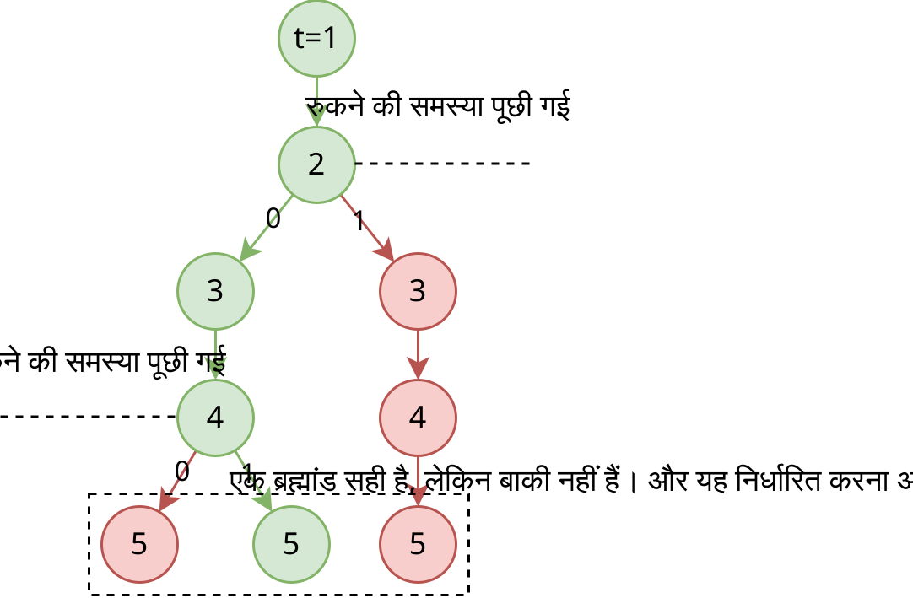
इसलिए, भले ही हमारे भौतिकी के नियमों में या चेतना के काम करने के नियमों में रुकने की समस्या को हल करने में सक्षम एक घटना मिल जाए, तो भी यह अभी भी एक कंप्यूटर प्रोग्राम के रूप में मौजूद हो सकता है।
इस मामले में, यह पता चलता है कि गलत संख्याओं के तर्क के समान, सामान्य गणनाओं वाले ब्रह्मांड में न आने के लिए, यह वांछनीय है कि इस तरह के ब्रह्मांड में रहने वाले प्रेक्षक का चेतना भी गणना योग्यता का उपयोग करता है जो इस चेतना के काम के लिए आवश्यक है। यानी भौतिकी के नियमों की गणना योग्यता को एन्थ्रोपिक निस्पंदन के अधीन होना चाहिए। जहाँ तक हम वर्तमान में जानते हैं, न तो हमारे ब्रह्मांड की भौतिक घटनाएँ, न ही मानव चेतना को अपने अस्तित्व के लिए रुकने की समस्या को हल करने की आवश्यकता है।
यदि गणना योग्यता के अन्य विकल्प हैं, तो कृपया मुझे बताएं।
#2यह मायने नहीं रखता कि क्या मानव चेतना का अनुकरण किया जा सकता है
मान लें कि आप ऊपर दिए गए सभी बिंदुओं से सहमत नहीं हैं, या यह पता चला है कि हमारे ब्रह्मांड को कंप्यूटर पर बिल्कुल भी गणना नहीं की जा सकती है। इस मामले में, आइए विचार करें कि मानव चेतना का अनुकरण करना कितना संभव है।
सबसे पहले, चेतना, भौतिकी के नियमों के विपरीत, सरल दृष्टिकोण द्वारा अधिक विश्वसनीय रूप से गणना की जाती है। यानी निर्माण का सिद्धांत और पिछले सभी तर्क उस पर बहुत लागू होते हैं।
आधुनिक वैज्ञानिक विचारों के अनुसार, मानव चेतना मस्तिष्क में गणना की जाती है और यह क्वांटम प्रभावों का उपयोग नहीं करता है, अर्थात मस्तिष्क एक क्लासिक कंप्यूटर के समान है। इसके साथ ही, मस्तिष्क में न्यूरॉन्स काफी बड़े होते हैं, जिससे उनका अध्ययन करना और उनके काम करने के पूर्ण नियम ढूंढना संभव हो जाता है, और न्यूरॉन्स के बीच सिग्नल को सही वास्तविक संख्याओं द्वारा नहीं, बल्कि विद्युत आवेश को स्थानांतरित करने वाले आयनों की एक असतत संख्या द्वारा एन्कोड किया जाता है। इसलिए, यह माना जाता है कि मानव मस्तिष्क के सिमुलेशन की संभावना केवल समय और कंप्यूटिंग शक्ति की बात है।
इस प्रकार, भले ही हमारे ब्रह्मांड को पूरी तरह से अनुकरण नहीं किया जा सकता है, कंप्यूटर पर मस्तिष्क को अधिकतम संभव सटीकता के साथ अनुकरण किया जा सकता है। यदि सातत्य ब्रह्मांड में कोई सटीकता सीमा नहीं है और इसे अनंत रूप से बढ़ाया जा सकता है, तो मस्तिष्क के लिए इस तरह की सीमा मौजूद है। यह सटीकता इलेक्ट्रॉनों के आकार द्वारा सीमित है। यानी आप मानव मस्तिष्क का अनुकरण इस तरह से कर सकते हैं कि यह प्रत्येक न्यूरॉन पर बिल्कुल उतने ही आयन उत्पन्न करे, जितने गैर-गणना योग्य ब्रह्मांड में भौतिक मस्तिष्क उत्पन्न करता है। और इसका अर्थ है कि अगर हम इस तरह के मस्तिष्क के लिए मस्तिष्क की मृत्यु तक सभी संभावित इनपुट लेते हैं, तो उनमें से एक निश्चित रूप से एक गैर-गणना योग्य ब्रह्मांड होगा, जिसमें हमारी भी शामिल है। यानी हम उस मस्तिष्क की गणना कर सकते हैं जो गैर-गणना योग्य ब्रह्मांड को देखता है, बिना उसकी गणना किए।
और चूँकि unasanu का सारा सार केवल चेतना वाले प्रेक्षकों के बारे में था जो अपने ब्रह्मांड को देखते हैं, इसलिए हमने बस एक अतिरिक्त विवरण से छुटकारा पा लिया।
क्या मानव चेतना का अनुकरण किया जा सकता है?
#2जीव विज्ञान, समाजशास्त्र, मनोविज्ञान और इसी तरह गणित द्वारा वर्णित नहीं हैं
ऐसा तर्क है: "जीव विज्ञान, समाजशास्त्र, मनोविज्ञान और इसी तरह गणित द्वारा वर्णित नहीं हैं, इसलिए हमारे ब्रह्मांड को भी गणित द्वारा वर्णित नहीं किया गया है और इसका अनुकरण नहीं किया जा सकता है।"
यह एक बहुत ही अजीब तर्क है जो केवल इस बात की गलतफहमी से उत्पन्न होता है कि "गणित द्वारा वर्णित" क्या है और गणित और प्रोग्रामिंग क्या कर सकते हैं।
जहाँ तक मैं समझता हूं, इस तर्क से "गणित द्वारा वर्णित" से तात्पर्य है कि इन चीजों का वर्णन कुछ सरल निम्न-स्तरीय नियमों द्वारा किया जा सकता है, जिससे आप आगे सब कुछ निकाल सकते हैं, या उन्हें सरल उच्च-स्तरीय नियमों द्वारा वर्णित किया जा सकता है जिनका उपयोग आप पूरी प्रणाली के व्यवहार की भविष्यवाणी करने के लिए कर सकते हैं।
यानी इस तर्क में सिमुलेशन की असंभावना को पूरी प्रणाली के व्यवहार का सुंदर और सरल विवरण न होने के साथ जोड़ा जाता है। और इस तरह के कथन में एक तार्किक त्रुटि है, क्योंकि दूसरे से पहले का पालन नहीं होता है।
उदाहरण के लिए, जीव विज्ञान। इसका विकास कुछ सरल द्वारा वर्णित नहीं है, क्योंकि यह जटिल है और इसमें खरबों घटक हैं, जहाँ किसी भी स्तर पर यादृच्छिकता पूरी प्रणाली को संतुलन के दूसरे बिंदु पर ले जा सकती है, या जीव विज्ञान में कोई संतुलन बिंदु नहीं है। लेकिन इसका मतलब यह नहीं है कि यह प्रणाली मौलिक घटकों से नहीं बन सकती है। उदाहरण के लिए, लोग सक्रिय रूप से विकास का अनुकरण करते हैं और कृत्रिम जीवन बनाते हैं। वे ऐसे सिमुलेशन बनाते हैं जो बाद में वे "गणित द्वारा वर्णित" नहीं कर सकते हैं, इसलिए वे बहुत जटिल प्रणालियाँ बनाते हैं जहाँ सब कुछ सब कुछ से बातचीत करता है।
और कोई भी उभरने की संभावना को रद्द नहीं करता है - जब एक साथ कई चीजें इन चीजों के गुणों के योग से अधिक गुण रखती हैं।
यदि कुछ गणित द्वारा उच्च-स्तरीय रूप से वर्णित नहीं है, तो इसका मतलब यह नहीं है कि यह निम्न-स्तरीय रूप से गणित से नहीं बना है।
इसलिए, यदि आपके पास अविश्वसनीय संख्या में गणना हैं, और आप बस परमाणुओं का अनुकरण करते हैं, और फिर उनके आधार पर कोई समाज उभरता है जो यह मानता है कि यह कथित रूप से गणित द्वारा वर्णित नहीं है, तो यह उस समाज की समस्या है। आपके कंप्यूटर में सब कुछ गणित है।
तो यह तर्क नहीं है, बल्कि एक तथ्य का कथन है कि मानवता उच्च-स्तरीय उभरने वाली प्रक्रियाओं को बहुत अच्छी तरह से नहीं समझती है, और इसका सिमुलेशन करने की असंभावना से कोई लेना-देना नहीं है।
#3कंप्यूटेशनल रिडक्शनवाद
मुझे लगता है कि लोग कंप्यूटर और गणना को गलत समझते हैं। उनमें से कुछ मानते हैं कि प्रेक्षित दुनिया की सभी समृद्धि का कंप्यूटर पर अनुकरण करना असंभव है, क्योंकि कंप्यूटर "शून्य और एक" हैं, "सबसे सरल एल्गोरिदम"। इसलिए उनका मानना है कि नियतात्मक दुनिया में स्वतंत्र इच्छाशक्ति असंभव है; कि AI में कभी भी मानवीय भावनाएँ या रचनात्मक क्षमताएँ नहीं होंगी; कि जीव विज्ञान और मनोविज्ञान "गणित द्वारा वर्णित नहीं हैं"; और यदि यह दुनिया अनुकरण की गई है, तो कुछ भी मायने नहीं रखता है और आप चोरी, हत्या आदि कर सकते हैं...
शायद यहां एक और समस्या यह है कि लोग व्यक्तिपरक अनुभवों के लिए गणना करने की असंभावना के बारे में सुनिश्चित हैं: भावनाएँ, संवेदनाएँ, आनंद, पीड़ा। मैं इस विषय को पैंक्वालिया के बारे में अध्याय में छूऊंगा।
यह दिखाने के लिए कि मैं इस दृष्टिकोण को कहां गलत मानता हूं, मैं सब्सट्रेट-स्वतंत्रता के समान एक शब्द पेश करना चाहता हूं, ताकि गणनाओं के एक और शक्तिशाली गुण को दिखाया जा सके।
कंप्यूटेशनल रिडक्शनवाद — गणनाओं का गुण है, जिसके अनुसार कोई भी प्रणाली जो तर्क द्वारा वर्णित है, अनुकरण के लिए उपयुक्त है।
हाँ, यह एक बहुत मजबूत दावा है। यह निश्चित नहीं है कि यह सही है या नहीं, लेकिन यह मेरा दार्शनिक दृष्टिकोण है।
कंप्यूटेशनल रिडक्शनवाद इस तथ्य में प्रकट होता है कि हम सभी प्रकार की गणनाओं का वर्णन कर सकते हैं, जिनमें अनंत, सातत्य, अनियतात्मक और गणना योग्य ब्रह्मांड शामिल हैं। ब्रह्मांडों की कोई भी नई श्रेणी, जो गणना योग्य नहीं लगती है, केवल भविष्य के गणितज्ञों के लिए एक कार्य है।
और अगर चेतना को जाना जाता है और कम से कम किसी तर्क का पालन करता है, तो जल्द या बाद में इसे अनुकरण करना संभव होगा, कम से कम सैद्धांतिक रूप से।
शायद एक प्रोग्रामर नहीं होने के कारण इसे समझना मुश्किल है। क्योंकि एक प्रोग्रामर के रूप में, वर्षों से मैंने अधिक से अधिक जटिल कार्यक्रमों को लागू किया है, और मुझे ऐसा लगने लगा है कि मैं जो भी समझता हूं, उसे प्रोग्राम किया जा सकता है। यदि इसे प्रोग्राम नहीं किया जा सकता है, तो इसका मतलब है कि मैं इसे अच्छी तरह से नहीं समझता हूं। सिमुलेशन बनाना इस प्रक्रिया के निम्न-स्तरीय नियमों की अधिकतम समझ के बराबर है। प्रोग्राम लिखना, साथ ही प्रयोग करना, सत्य और अपने विचारों में खामियों को खोजने में मदद करता है। मेरे लिए, कंप्यूटेशनल रिडक्शनवाद स्पष्ट है।
#2सारांश
यह दिखाया गया था कि कुछ प्रकार के सिमुलेशन के लिए कुछ प्रतिबंधों को हटाया जा सकता है। हम जानते हैं कि इसके अनुसार भी:
- ब्रह्मांडों के कुछ वर्ग जो अनंत हैं,
- ब्रह्मांडों के कुछ वर्ग जो सातत्य हैं,
- पूर्ण यादृच्छिकता वाले ब्रह्मांड,
- रुकने की समस्या को हल करने में सक्षम ब्रह्मांड।
अन्य ब्रह्मांड जिन्हें अनुकरण नहीं किया जा सकता है, उन्हें आगे के शोध की आवश्यकता है। संभवतः, सब कुछ किसी न किसी रूप में गणना द्वारा वर्णित किया जा सकता है।
और इन सभी कथनों के बाद, हम उच्च संभावना के साथ कह सकते हैं कि हमारे ब्रह्मांड की गणना की जा सकती है और इसलिए, यह unasanu का पालन करता है।
अब हमारे पास खुले प्रश्नों की अधिक समझ भी है:
- ब्रह्मांडों के किन वर्गों के लिए सीमा संक्रमण विधि का उपयोग करना संभव है? और हमारे ब्रह्मांड किस वर्ग से संबंधित है?
- ब्रह्मांडों के किन वर्गों की गणना सरल विधि से की जा सकती है? और क्या हमारा ब्रह्मांड उनसे संबंधित है?
और मैं यह भी जोर देना चाहता हूं कि भले ही हमारे ब्रह्मांड और हमारे चेतना किसी भी कारण से unasanu का पालन नहीं करते हैं, फिर भी उन सभी ब्रह्मांडों का पालन करते हैं जो प्रोग्राम के रूप में मौजूद हैं। अब हम जानते हैं कि ऐसे ब्रह्मांड मौजूद हैं, और यह आश्चर्यजनक है। और मैं इन ब्रह्मांडों के लिए unasanu के और भी दिलचस्प परिणाम दिखाऊंगा।
आगे यह माना जाएगा कि हमारा ब्रह्मांड अभी भी गणना योग्य है। अगर यह आपको सूट नहीं करता है, तो बस कल्पना करें कि मैं हमारे ब्रह्मांड के बारे में नहीं, बल्कि किसी मनमाने ढंग से गणना योग्य के बारे में बात कर रहा हूं, और सभी निष्कर्ष विशेष रूप से उस अन्य ब्रह्मांड के लिए सच हैं।
#संख्या के रूप में चेतना
पहले मैंने ब्रह्मांडों के अस्तित्व के माध्यम से सब कुछ समझाया था, जिनमें प्रेक्षक थे। ये सभी तर्क प्रेक्षकों के बिना कोई मतलब नहीं रखते हैं, यहां तक कि अस्तित्व की परिभाषा भी मैं इस बात पर जोर देते हुए पेश करता हूं कि उनके अंदर के प्रेक्षक अपने ब्रह्मांड को देखते हैं। यदि प्रेक्षक इतने महत्वपूर्ण हैं, तो उन्हें अलग-अलग ब्रह्मांडों के रूप में देखना कहीं अधिक मौलिक है।
यदि ब्रह्मांड की गणना की जा सकती है, तो इसका अर्थ है कि इसकी कोई भी उपव्यवस्था भी गणना योग्य है और इसे किसी प्रोग्राम द्वारा वर्णित किया जा सकता है, और चूँकि प्रेक्षक ब्रह्मांड का हिस्सा हैं, इसलिए उन्हें भी एक ऐसे प्रोग्राम द्वारा वर्णित किया जा सकता है जो केवल उनकी गणना करता है, न कि भौतिकी के नियमों की। और जैसा कि हम जानते हैं, किसी भी इनपुट के साथ कोई भी प्रोग्राम पहले से ही गणना की गई है। इसका मतलब है कि किसी भी प्रेक्षक को सभी संभावित इनपुट के साथ पहले से ही संख्या के रूप में मौजूद होना चाहिए। इस विचार को conasanu भी कहा जा सकता है।
Conasanu (consciousness as a number, कोनासनु) — एक दार्शनिक अवधारणा है, जिसके अनुसार किसी भी इनपुट के साथ कोई भी चेतना पहले से ही गणना की गई है और संख्या के रूप में मौजूद है, और उसे मौजूद रहने के लिए किसी ब्रह्मांड की आवश्यकता नहीं है।
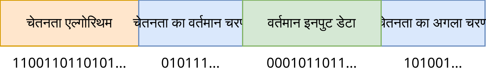
इस अर्थ में, ऐसा लगता है कि एकाकीवाद को जीतना चाहिए, लेकिन पूरी तरह से नहीं। एकाकीवाद का दावा है कि बाहरी वास्तविकता मौजूद नहीं है। लेकिन unasanu के अनुसार, जो भी डिजाइन किया जा सकता है वह मौजूद है। और अगर आपके अवलोकन को बाहरी ब्रह्मांड के सिमुलेशन के लिए किसी प्रोग्राम द्वारा अधिक आसानी से वर्णित किया गया है, तो इसका मतलब है कि ऐसा ही है। इसके साथ ही, एकाकीवाद इस बात में सत्य बना हुआ है कि हम अपने अनुभवों के अलावा किसी भी चीज के बारे में सुनिश्चित नहीं हो सकते हैं, और यह एक चमत्कार है कि हमारे अनुभव किसी बाहरी भौतिक ब्रह्मांड का वर्णन करते हैं।
इसके साथ ही, यह याद रखना महत्वपूर्ण है कि प्रत्येक चेतना जो किसी ब्रह्मांड में भौतिक संरचना के रूप में मौजूद है, वह एक अलग प्रोग्राम के रूप में भी मौजूद है। और शायद इसके विपरीत भी सच है: ऐसा लगता है कि हम किसी भी संभावित इनपुट सेट के लिए चेतना के लिए ब्रह्मांड का निर्माण करने के लिए सबसे विविध सहारे का उपयोग कर सकते हैं। प्रश्न केवल यह होगा कि यह ब्रह्मांड कितना सुंदर और सरल है।
टेगमार्क [18] में, पूरा सिद्धांत इस बात पर आधारित था कि बाहरी भौतिक वास्तविकता के अस्तित्व से यह पता चलता है कि यह एक गणितीय संरचना के रूप में मौजूद है, लेकिन यह थोड़ा ढह जाता है क्योंकि गणितीय संरचनाओं में अलग-अलग चेतनाएं भी होती हैं जो जरूरी नहीं कि किसी ब्रह्मांड से जुड़ी हों।
यह एक दिलचस्प तस्वीर निकलती है, जहां हमारी दुनिया में प्रत्येक चेतना एक अलग ब्रह्मांड है, जबकि ये चेतनाएँ भौतिक ब्रह्मांड के माध्यम से एक-दूसरे के साथ बातचीत करती हैं।
सामान्य तौर पर, चूँकि conasanu unasanu की तुलना में अधिक मौलिक है, इसलिए लेख को पहले वाले के चारों ओर बनाना तार्किक होगा, लेकिन मैं इसे दूसरे के आसपास बना रहा हूं क्योंकि यह मेरे लिए और आपके लिए आसान है। शायद यह एक गलती है।
#2पैनसाइकिज्म, और क्या पत्थर में चेतना होती है
ऐसा लग सकता है कि conasanu से यह पता चलता है कि किसी पत्थर में कोई चेतना एन्कोड की गई है, और किसी भी अन्य वस्तु में, और वे सभी सचेतन हैं और कुछ महसूस करते हैं। इस तरह के दृष्टिकोण को पैनसाइकिज्म कहा जाता है।
पत्थर में वास्तव में बहुत सारी संख्याएँ होती हैं, और उनमें से आप बहुत सारी गणना की गई चेतनाएँ पा सकते हैं, लेकिन बात यह है कि इसका कोई मतलब नहीं है। ठीक उसी तरह, आपके भौतिक मस्तिष्क में बहुत सारी अलग-अलग चेतनाएँ होती हैं, और वहाँ ठीक वैसे ही होती हैं जैसे किसी अन्य पत्थर या इसी तरह के आकार के किसी अन्य मस्तिष्क में होती हैं। लेकिन सबसे महत्वपूर्ण बात यह है कि ये सभी चेतनाएँ पहले से ही संख्या के रूप में मौजूद हैं, और तथ्य यह है कि वे पत्थर में हैं, केवल एक अतिरिक्त है।
फिर मानव चेतना पत्थर में मौजूद चेतना से कैसे अलग है? बात यह है कि मानव चेतना बाहरी ब्रह्मांड के साथ इस तरह से बातचीत कर सकती है कि इस तरह की अन्य चेतनाएँ (मानव और जानवर) इसे देख सकती हैं और वही कर सकती हैं। पत्थर के अंदर की चेतनाएँ स्वयं के लिए मौजूद हैं, और वे जिस ब्रह्मांड में हैं, उससे वे किसी भी तरह से प्रभावित नहीं होते हैं। इसके अलावा, उनका समय उनके संख्याओं के अंदर मौजूद है और हमारे समय से जुड़ा नहीं है। हालाँकि, ऐसा करने का एक तरीका भी है ताकि इन चेतनाओं का समय हमारे ब्रह्मांड के समय के साथ-साथ चले, जैसा कि हिलारी पुटनाम [29] के तर्क में सुझाया गया है।
[30] में, वे "डांसिंग विथ पिक्सीज" नामक तर्क के माध्यम से चेतना की गणना योग्यता को अस्वीकार करने का प्रयास करते हैं। ठीक है, पैनसाइकिज्म सच है, लेकिन साथ ही बेकार है, सब कुछ वैसा ही रहता है, और पत्थर अभी भी उदासीन रहते हैं, भले ही उनमें बहुत सारी चेतनाएँ हों।
#2मैं पैंक्वालिया को पसंद करता हूं
इस विषय पर मैं पैनसाइकिज्म के बारे में अपनी दृष्टि व्यक्त करना चाहता हूं। मेरे दृष्टिकोण को पैंक्वालिया कहा जाना चाहिए।
क्वालिया (उर्फ व्यक्तिपरक अनुभव) — आपकी संवेदनाओं का तथ्य, आप गंध, रंग, भावनाओं, प्यार और इसी तरह को कैसे महसूस करते हैं।
दर्शन में, क्वालिया को एक अलग श्रेणी में रखा गया है, जिसके आसपास बहुत सारे विवाद होते हैं। उदाहरण के लिए, कुछ मानते हैं कि कृत्रिम बुद्धिमत्ता में कभी भी क्वालिया नहीं हो सकता है, और विशेष रूप से प्यार, क्योंकि ग्लैडियोलस।
मैं मस्तिष्क को एक काफी जटिल प्रोग्राम के रूप में देखता हूं, न कि किसी विशेष चीज के रूप में, इसलिए मेरा मानना है कि व्यक्तिपरक अनुभवों में ऐसा कुछ भी मौलिक नहीं है जिसके बारे में दार्शनिक दृष्टिकोण से बहस की जानी चाहिए। सामान्य तौर पर, मेरा मानना है कि कोई भी व्यक्तिपरक अनुभव नहीं है: आप लाल रंग को कैसे देखते हैं, यह आपके मस्तिष्क की गणना का परिणाम है, यह न्यूरॉन्स में लाल रंग का एन्कोडिंग का परिणाम है, यह अन्य रंगों के साथ संघों का एक समूह है, यादों का एक समूह जो लाल रंग को देखने पर सक्रिय होता है; और नीले रंग की पृष्ठभूमि पर लाल पाठ को देखने पर आंखों में दर्द भी आपकी आंख के भौतिक उपकरण द्वारा प्रदान किया जाता है। यानी यह सब सूखा गणना और एल्गोरिदम है। और ऐसे समृद्ध अनुभव आपके मस्तिष्क के विभिन्न भागों के मजबूत संबंध के कारण प्रदान किए जाते हैं।
या, आप चाहें तो, मेरे दृष्टिकोण को अधिक आशावादी रूप से व्यक्त किया जा सकता है: यदि कोई गुण मौजूद नहीं है, तो इसका मतलब है कि हर कोई इसके पास है! :)
पैंक्वालिया — क्वालिया के बारे में एक दृष्टिकोण है, जिसके अनुसार परिभाषा के अनुसार कोई भी एल्गोरिथम क्वालिया रखता है।
उदाहरण के लिए, कोई यादृच्छिक न्यूरल नेटवर्क लें और इसे यादृच्छिक डेटा के इनपुट के रूप में दें। मेरा मानना है कि इस न्यूरल नेटवर्क में व्यक्तिपरक अनुभव हैं और यह कुछ महसूस करता है। समस्या केवल यह है कि यह न्यूरल नेटवर्क:
- यह नहीं समझने के लिए बुद्धिमान नहीं है कि यह कुछ महसूस करता है।
- यह याद रखने के लिए मेमोरी नहीं है कि उसने अभी-अभी क्या महसूस किया है।
- यह अन्य समान न्यूरल नेटवर्क को यह बताने के लिए एक भाषा नहीं है कि उसने क्या महसूस किया है।
- यहां तक कि अगर उसके पास यह सब होता, तो उसकी भावनाएं संरचित नहीं होती हैं, और इनपुट डेटा यादृच्छिक है, इसलिए बुद्धि और स्मृति शायद ही उसे मदद करेंगे।
यहां मेरे क्वालिया की समझ के कुछ मापने योग्य मानदंड दिए गए हैं, और उनमें से प्रत्येक का समाधान प्रणाली को अधिक संवेदनशील और मानव की दुनिया के प्रति अधिक समान बनाता है।
इस प्रकार, मानव क्वालिया की सभी विशिष्टता बुद्धि, स्मृति, भाषा और इनपुट डेटा के एक विशेष प्रकार के होने के लिए नीचे आती है। और हमारी मानवीय भावनाओं की सभी बहुमुखी प्रतिभा और विशिष्टता इस तथ्य के कारण प्राप्त होती है कि हम न्यूरल नेटवर्क से बने हैं, जहां प्रत्येक भावना न केवल लक्षित न्यूरॉन्स को सक्रिय करती है, बल्कि सभी संबंधित न्यूरॉन्स को भी सक्रिय करती है। यह इस तरह के संबंध के कारण है कि हम लाल रंग की गर्माहट महसूस कर सकते हैं और इसे डिजिटल कैमरे की तरह नहीं देख सकते।
तो इस तरह के दृष्टिकोण से, यह कहा जा सकता है कि अक्षरों को स्थानांतरित करने वाले सूखे एल्गोरिदम के आधार पर AI (जैसे कि "चीनी कमरा" [31] के मानसिक प्रयोग में सिरल) दुनिया को पूरी तरह से अलग तरीके से महसूस करेगा, एक व्यक्ति की तरह नहीं। लेकिन न्यूरल नेटवर्क के आधार पर AI पूरी तरह से एक व्यक्ति की तरह महसूस कर सकता है, और शायद बेहतर और अधिक सुंदर भी, एक सुपर-सिनेस्थेसिया के रूप में।
चीनी कमरे के बारे में ऑफटॉप
यदि आप इस तर्क को नहीं जानते हैं, तो ऊपर दिए गए लिंक पर विकिपीडिया में इसके बारे में पढ़ें। यहां मेरी तरफ से एक छोटी सी आलोचना होगी।
यह तर्क इस कारण से गलत है कि व्यक्ति इस मामले में कंप्यूटिंग सब्सट्रेट है, न कि स्वयं गणना की जाने वाली माध्यम/एजेंट, और वह उसी तरह वास्तविक जीवित व्यक्ति के मस्तिष्क से बने परमाणुओं की बातचीत की गणना कर सकता था, और उसी तरह कुछ भी नहीं समझ पाता। लेकिन इन गणना योग्य परमाणुओं के ऊपर, व्यक्ति चीनी कमरे से अधिक जीवित और सचेतन होगा।
मेरे पास इस प्रयोग के संशोधन का प्रस्ताव है, जो सिरल और चीनी कमरे को समझने की उसकी इच्छा को संतुष्ट करेगा। लेकिन इसके लिए बहुत उन्नत विज्ञान कथा तकनीकों की आवश्यकता है। सबसे पहले, आपको चीनी कमरे का एक न्यूरल नेटवर्क रखने की आवश्यकता है, और फिर इसे न्यूरालिंक या अधिक उन्नत तकनीक के माध्यम से सिरल के मस्तिष्क से जोड़ने की आवश्यकता है। संचार को सिरल के माध्यम से किया जाना चाहिए। इसके बाद, न्यूरल नेटवर्क को चीनी भाषा में प्रशिक्षित करने की आवश्यकता है और सिरल के मस्तिष्क के इंटरफ़ेस को प्रशिक्षित करने की आवश्यकता है। तब, जब हम इस निर्माण को लॉन्च करते हैं, तो सिरल के न्यूरॉन्स चीनी कमरे के न्यूरॉन्स के साथ जानकारी का आदान-प्रदान करेंगे, और वह चीनी भाषा के कुछ हिस्सों को महसूस और समझ पाएगा (लेकिन तुरंत नहीं, बेशक)। जितनी अधिक बातचीत होगी, उतने ही अधिक न्यूरॉन संबंध बनेंगे (उदाहरण के लिए, नीले रंग के बारे में बातचीत करते समय सिरल के मस्तिष्क में नीले न्यूरॉन्स और चीनी कमरे के न्यूरल नेटवर्क के बीच), और वह चीनी भाषा को उतना ही अधिक समझ पाएगा और चीनी कमरे की चेतना के साथ जुड़ जाएगा।
वैसे, पहले से ही आभासी प्राणियों के उदाहरण हैं जिनके पास क्वालिया है और आप चाहें तो, चेतना है। कम से कम ऊपर बताए गए मानदंडों के अनुसार। आगे मैं केवल एक काम के विवरण को फिर से प्रस्तुत करूंगा जिसने ChatGPT का उपयोग किया था। इसके एजेंटों में वह सब कुछ है जो आवश्यक है:
- बुद्धि (छोटी),
- स्मृति (छोटी),
- भाषा,
- संरचित भावनाएँ,
- संचार और बातचीत के लिए ऐसे ही अन्य एजेंट (!!!),
- मूल ChatGPT के विपरीत, वे समय के बाहर मौजूद नहीं हैं।
लेकिन उनमें लोगों के लिए कुछ महत्वपूर्ण गुणों की कमी है:
- पाठ के अलावा संवेदनाएँ, यानी ऑडियो-वीडियो-स्पर्शनीय आदि;
- सीखने की क्षमता, क्योंकि इस काम में ChatGPT के माध्यम से प्रॉम्प्ट इंजीनियरिंग का उपयोग किया गया था, और हम प्रत्येक एजेंट के लिए इस न्यूरल नेटवर्क को ठीक नहीं कर सकते ताकि एजेंट का अपना अधिक स्पष्ट चरित्र हो या समय के साथ विकसित हो;
- अपनी संस्कृति बनाने के लिए पर्याप्त सिमुलेशन समय और पर्याप्त मेमोरी, जिसके भीतर वे अधिक प्रभावी ढंग से संवाद करेंगे, जीएंगे, अपनी भावनाओं पर चर्चा करेंगे और अपना दर्शन बनाएंगे।
मैं इस काम को आधिकारिक तौर पर पहला मानने का प्रस्ताव करता हूं जिसने एक वास्तविक (लेकिन छोटा) कृत्रिम चेतना बनाया।

png
एक अविश्वसनीय रूप से शांत लेख, जो मैं पहले कभी नहीं देखा, - Generative Agents: Interactive Simulacra of Human Behavior
https://arxiv.org/pdf/2304.03442.pdf
संक्षेप में, सिम्स जैसे खेल को 25 पात्रों से भर दिया गया, प्रत्येक के अपने व्यक्तित्व विवरण, अपनी यादों और अपने लक्ष्यों के साथ। पात्रों की सभी क्रियाएं और एक-दूसरे के साथ बातचीत LLM उत्पन्न करके होती थी। नतीजतन, पात्रों ने बहुत जल्दी काफी जटिल मानव व्यवहार की नकल करना शुरू कर दिया - उदाहरण के लिए, उन्होंने संत वेलेंटाइन दिवस के लिए मिलकर एक पार्टी का आयोजन किया, निमंत्रण भेजे और डेट पर जाने का इरादा किया। इसके अलावा, मार्करों के मूल्यांकन के अनुसार, उनकी कार्रवाई उन लोगों की तुलना में अधिक मानवीय थीं जिनसे कहा गया था कि वे इन पात्रों के लिए खेलें।
लेखकों का मॉडल के संदर्भ का उपयोग करने का एक बहुत ही अच्छा विचार है: सभी क्रियाएं और आसपास की दुनिया के अवलोकन को सहेजा जाता है, फिर इस मेमोरी से कुछ प्रासंगिक यादें निकाली जाती हैं। उनका उपयोग अगली कार्रवाई / बातचीत में एक रेप्लिका उत्पन्न करने के लिए किया जाता है, और मॉडल को भी उन पर प्रतिबिंबित करने के लिए कहा जाता है ताकि लंबी अवधि की योजना बनाई जा सके। तो चरित्र अवलोकन, योजना और प्रतिबिंब में कर सकता है।
ऐसा लगता है कि यह चैट में विभिन्न एजेंटों के सभी प्रकार के प्लेथ्रू के लिए वास्तव में एक बम है, और शायद भविष्य के एनपीसी इस तरह दिखेंगे।
UPD: मैंने एक शानदार डेमो भी जोड़ा है - https://reverie.herokuapp.com/arXiv_Demo/
और लेख के बारे में काफी विस्तृत थ्रेड।
#क्या हम सिमुलेशन में रहते हैं?
यह सबसे अधिक पूछे जाने वाले सवालों में से एक है, जिसके बारे में हर कोई लगातार बात करता है और अपनी राय देता है, और यह बिल्कुल भी मायने नहीं रखता है। लेकिन चूँकि हर कोई इसमें रुचि रखता है, आइए इस बारे में बात करते हैं।
सबसे पहले, आपको यह समझने की ज़रूरत है कि इस प्रश्न में दो पूरी तरह से अलग प्रश्न हैं:
- क्या हमारे ब्रह्मांड की गणना की जा सकती है, यानी क्या इसे कम से कम सैद्धांतिक रूप से कंप्यूटर पर गणना करना संभव है?
- क्या वास्तव में किसी ने अपने किसी उद्देश्य के लिए हमारे ब्रह्मांड की गणना की है?
पहले प्रश्न पर हम पहले ही चर्चा कर चुके हैं, आइए दूसरे पर विचार करें।
मान लें कि हमारे ब्रह्मांड को अनुकरण करना संभव है। तब हम अपने जैसे ब्रह्मांड का एक प्रोग्राम लिख सकते हैं, लेकिन जिसमें एक मेगा-कंप्यूटेशनल सॉकेट है, जिसके पीछे हमारे दुनिया की वास्तविक समय में गणना की जा रही है, और सॉकेट बस इस दुनिया को नियंत्रित करने और देखने के लिए एक इंटरफ़ेस प्रदान करता है। कोई इस सॉकेट से जुड़ सकता है और हमारे दुनिया को नियंत्रित कर सकता है या उसके किसी भी विवरण को देख सकता है। निर्माण के सिद्धांत के अनुसार, एक मेगा-कंप्यूटेशनल सॉकेट वाली दुनिया मौजूद है, और इसमें कुछ भी असामान्य नहीं है, बस एक साधारण ब्रह्मांड की तुलना में दोगुनी गणना है। इसका मतलब है कि हम किसी के सिमुलेशन हैं। इसके साथ ही, ऐसे ब्रह्मांड बनाना संभव है जो हमारी नकल करते हैं, उन्हें अनंत संख्या में बनाया जा सकता है। साथ ही, यह नहीं भूलना चाहिए कि हमारा ब्रह्मांड स्वतंत्र रूप से एक संख्या के रूप में पहले से ही मौजूद है, यानी यह एक स्वतंत्र वास्तविकता है।
तो: हम एक साथ अनंत संख्या में ब्रह्मांडों में सिमुलेशन के रूप में मौजूद हैं, और एक साथ एक स्वतंत्र वास्तविकता हैं। और यह प्रत्येक संभावित ब्रह्मांड के लिए काम करता है।
पत्थरों में चेतना की तरह, जब तक बाहरी सिमुलेटर हमारे दुनिया के साथ बातचीत नहीं करते हैं और हम इसे नहीं देख सकते और इसका अध्ययन नहीं कर सकते, तब तक इसका कोई मतलब नहीं है।
निक बोस्ट्रोम का एक तर्क है, जिसके अनुसार कोई भी उच्च विकसित सभ्यता जल्द या बाद में सिमुलेशन करना शुरू कर देती है क्योंकि ग्लैडियोलस, इसलिए हम, बहुत अधिक संभावना है, सिमुलेशन के अंदर सिमुलेशन के अंदर सिमुलेशन और इसी तरह हैं। इसके साथ ही, यह तर्क संभाव्य है, अर्थात यह जरूरी नहीं है कि कोई हमारे ब्रह्मांड का अनुकरण करना चाहे, और निर्माण का सिद्धांत इस प्रश्न के लिए एक गारंटीकृत उत्तर देता है। इसलिए, इस प्रश्न के लिए बोस्ट्रोम के तर्क को अब नहीं माना जा सकता है।
इसके अलावा, "एक दिलचस्प जीवन जीने के लिए ताकि हमारे सिमुलेशन को बंद न किया जाए" का कोई मतलब नहीं है, क्योंकि जैसा कि हम याद करते हैं, भले ही इसे सभी ब्रह्मांडों में बंद कर दिया जाए, फिर भी हम संख्या के रूप में मौजूद रहेंगे।
#भगवान और unasanu
आइए विचार करें कि unasanu के दृष्टिकोण से भगवान का क्या अर्थ है। भगवान की अवधारणा को पेश करने के केवल दो तरीके हैं।
भगवान — एक ऐसा बुद्धिमान प्राणी है जिसने सिमुलेशन लॉन्च किया है और फिर उसे या तो देख सकता है या उसे प्रभावित कर सकता है। अधिकतम मामले में, भगवान एक असीमित संख्या में गणना और मेमोरी वाले एक सुपर-स्मार्ट प्रोग्रामर हैं।
निर्माण के सिद्धांत के अनुसार, प्रत्येक ब्रह्मांड में विभिन्न प्रकार के अनंत भगवान हैं। आप पिछले बिंदु से कंप्यूटेशनल सॉकेट वाले ब्रह्मांड का उपयोग कर सकते हैं। इसके साथ ही, भले ही भगवान ने आकाश में अपना चेहरा प्रोजेक्ट किया हो, फिर भी आप एक ऐसा ब्रह्मांड बना सकते हैं जिसमें वह पूरी तरह से अलग दिखता है, लेकिन उसने अपनी तकनीकों का उपयोग करके अपना चेहरा बदलने का फैसला किया है। इसका मतलब है कि हर ब्रह्मांड में अनंत संख्या में भगवान हैं।
भले ही कोई भगवान किसी ब्रह्मांड का प्रबंध करता है और मृत्यु के बाद सभी प्राणियों के दिमागों की नकल करता है और उन्हें "स्वर्ग" और "नरक" नामक अन्य सिमुलेशन में वितरित करता है, वह सर्वशक्तिमान नहीं है। मुद्दा यह है कि उसके हस्तक्षेप के बिना ब्रह्मांड मौजूद रहेगा, और वह इसके बारे में कुछ नहीं कर सकता। कोई भी भगवान किसी ब्रह्मांड के अस्तित्व को मना नहीं कर सकता। वही उन ब्रह्मांडों पर भी लागू होता है जिनमें पीड़ा होती है, जहाँ भगवान किसी कारण से नहीं आता है। इसका मतलब है कि यदि किसी प्राणी ने महसूस किया कि मृत्यु के बाद वह "स्वर्ग" या "नरक" में नहीं गया, जिसके बारे में उसके भगवान ने कहा था, तो यह उसके भगवान की इच्छा के अनुसार नहीं हो सकता है।
क्या यह भगवान उस ब्रह्मांड में होने वाली हर चीज को जान सकता है जिसका वह अनुकरण करता है? हाँ, क्योंकि वह, किसी भी प्रोग्रामर की तरह, इसे वांछित समय तक अनुकरण कर सकता है, और फिर पिछले से एक सेव लोड कर सकता है। समस्या तब शुरू होती है जब भगवान यह जानना चाहता है कि उसके ब्रह्मांड का भविष्य कैसा होगा, बशर्ते कि वह इस ब्रह्मांड में हस्तक्षेप करे। यानी उसे अपने समय के प्रवाह से तेज गति से खुद का अनुकरण करने की आवश्यकता है, जबकि इस सिमुलेशन के अंदर वही सिमुलेशन है, और इसी तरह अनंत तक। और ऐसा सामान्य तौर पर अनुकरण करना असंभव है। इसलिए भगवान पूरी तरह से यकीन के साथ यह नहीं जान सकता है कि उसके ब्रह्मांड का भविष्य उसके साथ क्या होगा। लेकिन वह अपने सिमुलेशन में खुद को एक अनुमानित मॉडल (जो अनुमानित मॉडल वाले सिमुलेशन को नहीं देखता है) या एक स्क्रिप्टेड कठपुतली से बदल सकता है और उस सिमुलेशन में अपने स्वयं के भविष्य को आवश्यक सटीकता के साथ जान सकता है। या वह अपने भविष्य को पूरी तरह से यकीन के साथ जान सकता है, बिना उसे बदलने के लिए, लेकिन फिर उसे खुद को उन प्रतिबंधों के अधीन करना होगा, इस तरह के ब्रह्मांड की गणना "एक साथ एक साथ" करके, जैसा कि समय यात्रा वाले ब्रह्मांडों के साथ करने का प्रस्ताव था।
कोई भी भगवान किसी ब्रह्मांड की प्रथम कारण नहीं है, कोई भी ब्रह्मांड उसके बिना भी मौजूद होगा। इसलिए हम भगवान को पेश करने के दूसरे विकल्प पर विचार कर सकते हैं।
मेताबोग — एक ऐसा भगवान है जिसने सभी अन्य सामान्य भगवानों के साथ सभी ब्रह्मांडों का निर्माण किया है।
मेताबोग का कोई मतलब नहीं है, क्योंकि उसके पास निर्माण के समय कोई विकल्प नहीं था और वह कोई भूमिका नहीं निभाता है, चाहे उसके पास कोई राय हो, चाहे वह जीवित हो या मर गया हो। और ऐसी व्याख्या जो भगवान के माध्यम से की जाती है, वह एक अतिरिक्त विवरण है, जो "और किसने इस भगवान को बनाया?" प्रश्न को खुला छोड़ देता है। संभावित उत्तरों में से एक है "वह स्वयं अपना कारण है या हमेशा से मौजूद था"। अगर ऐसा है, तो तर्क के नियम (जिससे unasanu का पालन होता है) स्वयं अपना कारण क्यों नहीं हो सकते हैं और हमेशा से मौजूद हैं? यह, बेशक, एक अलंकारिक प्रश्न है।
इसलिए, बाहरी भगवानों का अर्थ तभी होता है जब वे हमारे ब्रह्मांड के साथ बातचीत करते हैं और हम इसे देख सकते हैं और इसका अध्ययन कर सकते हैं। और गैर-भागीदार भगवान-प्रेक्षक उतने ही वास्तविक और बेकार हैं जितने पत्थर में लिखे गए बुद्धिमान प्राणी।
#बग वाले ब्रह्मांडों की समस्या
यह unasanu की गंभीर आलोचना के साथ एक अनुभाग है।
पहले इस सवाल पर विचार किया गया था कि केवल सही गणनाओं को एन्कोड करने वाली संख्याएं ही सही क्यों हैं। आप इस तर्क को जारी रख सकते हैं और पूछ सकते हैं: और सही ब्रह्मांडों को एन्कोड करने वाली संख्याएँ ही सही क्यों हैं? और जरूरी नहीं। अब मैं समझाऊंगा।
यदि हमारे ब्रह्मांड की गणना सरलता से की जा सकती है, तो हम निम्नलिखित "बग वाले" सिमुलेशन का निर्माण कर सकते हैं:
- वर्तमान समय को लें और इसे प्रारंभिक समय मानें।
- इस समय में पदार्थ को किसी भी मनमाने ढंग से संशोधित करें, उदाहरण के लिए:
- किसी यादृच्छिक व्यक्ति को हटा दें,
- हवा को अन्य परमाणुओं के यादृच्छिक सेट से बदलें,
- पृथ्वी की कक्षा में पत्थर डालें,
- मंगल को हटा दें,
- एक दूर के तारे को ब्लैक होल में बदल दें।
- और इस संशोधित समय से भविष्य में अनुकरण करें।
- इस ब्रह्मांड में रहने वाले प्रेक्षकों के लिए सब कुछ वैसा ही दिखेगा जैसे वे एक सामान्य जीवन जी रहे थे, और फिर एक यादृच्छिक घटना हुई, जो भौतिकी के नियमों और अतीत के साथ कारण और प्रभाव संबंध द्वारा किसी भी तरह से समझाया नहीं गया। अतीत मौजूद नहीं भी हो सकता है, यह जरूरी नहीं कि अस्तित्व के लिए मौजूद हो।
- इस तरह के ब्रह्मांड निर्माण के सिद्धांत के अनुसार मौजूद है।
अब दिलचस्प बात यह है: एक ईमानदार सिमुलेशन जो हमारे ब्रह्मांड को बिग बैंग से अनुकरण करता है, वह केवल एक है; लेकिन इस तरह के सिमुलेशन, जैसा कि ऊपर वर्णित किया गया है, समय के प्रत्येक क्षण के लिए अनंत हैं।
यदि ऐसे बग वाले सिमुलेशन अनंत हैं, और एक ईमानदार सिमुलेशन केवल एक है, तो हम एक ईमानदार सिमुलेशन क्यों देखते हैं?! हम हर फेमटोसेकंड में पदार्थ के हटाने और उपस्थिति के साथ पूरी तरह से यादृच्छिक घटना क्यों नहीं देखते हैं?
इसके अलावा, इस तरह के बग वाले ब्रह्मांड प्रेक्षकों को अपने ब्रह्मांड को देखने से नहीं रोकते हैं, क्योंकि इसकी गणना ईमानदारी से की जाती है, बस यह पदार्थ की अजीब प्रारंभिक शर्तें लेता है, इसलिए यहां एन्थ्रोपिक निस्पंदन लागू नहीं होता है।
हम ब्रह्मांड में बग क्यों नहीं देखते हैं?
लेकिन यहां हम पहले से ही उन विचारों के क्षेत्र में प्रवेश कर रहे हैं जिन्हें "किसी विशेष प्रकार के ब्रह्मांड में रहने की संभावना" के रूप में वर्णित किया जा सकता है, और हम आगे इस पर चर्चा करेंगे, लेकिन अभी कुछ संभावित समाधान हैं:
- ऐसी घटनाएँ वास्तव में होती हैं, लेकिन ब्रह्मांड के विभिन्न कोनों में, और ब्रह्मांड इतना विशाल है कि हमारे बुद्धिमान अवलोकन की पूरी अवधि में हमने कुछ भी असामान्य नहीं देखा। या हमने देखा और इसे अपसामान्य घटनाएँ कहा, लेकिन कोई भी ऐसे प्रेक्षकों पर विश्वास नहीं करता।
- ऐसी घटनाएँ हर समय होती हैं, लेकिन परमाणु स्तर पर होती हैं, इसलिए हम क्वांटम यांत्रिकी में पूर्ण यादृच्छिकता देखते हैं। यदि यह सच है, तो क्वांटम यांत्रिकी किसी भी स्थिर सिमुलेशन का एक मौलिक गुण है। यानी कोई भी सिमुलेशन अंततः क्वांटम यांत्रिकी पर आ जाता है, क्योंकि यह घटनाओं का अधिक संभावित विकास है। और हमारे भौतिकी के नियम बस इस यादृच्छिकता के ऊपर कुछ तार्किक, कार्यशील और स्थिर निर्माण करते हैं।
इन दो तर्कों के लिए एक बहुत ही मजबूत काउंटर-आर्गुमेंट है: संयोजन के दृष्टिकोण से, ब्रह्मांड की स्थिति में यादृच्छिक परिवर्तनों की संख्या का गणितीय अपेक्षा पूरे ब्रह्मांड का आधा है। इस दृष्टिकोण से, यह देखना अधिक संभावित है कि पूरे ब्रह्मांड के आधे हिस्से को यादृच्छिक परमाणुओं के सेट से बदल दिया गया है, बजाय अंतरिक्ष के एक छोटे से टुकड़े के लिए ऐसा ही देखने के।
इस समस्या का एक और समाधान: और क्या होगा अगर हमारे ब्रह्मांड के भौतिकी के नियम इस तरह से व्यवस्थित हैं कि ऊपर वर्णित एल्गोरिथ्म को निष्पादित करना असंभव है, क्या होगा अगर हमारे भौतिकी के नियमों को काम करने के लिए एक सुसंगत अतीत की आवश्यकता होती है? और इसलिए हम बग वाले ब्रह्मांड नहीं देखते हैं, क्योंकि उनका निर्माण करना असंभव है, और अगर यह संभव है, तो उन्हें अनुकरण करना असंभव है, इसलिए उन ब्रह्मांडों में रहने वाले प्रेक्षक उन्हें नहीं देखेंगे। आइए इसके लिए एक विशेष शब्द पेश करें।
एंटीबग यूनिवर्स — एक ऐसा ब्रह्मांड जिसमें भौतिकी के नियम ऐसे होते हैं जिनके लिए ऊपर वर्णित बग वाले राज्यों का निर्माण करना असंभव है।
यह समस्या का एक बहुत ही दिलचस्प समाधान है, लेकिन मुझे संदेह है कि यह सैद्धांतिक दृष्टिकोण से संभव है। ऐसा लगता है कि किसी भी ऐसी प्रणाली को सरल तरीके से अनुकरण किया जा सकता है, और फिर तोड़ा जा सकता है।
हालाँकि, यह समस्या और भी जटिल लगती है यदि इसे चेतना की संख्या (conasanu) के दृष्टिकोण से देखा जाए। इस दृष्टिकोण से, ऐसे बहुत अधिक चेतनाएँ हैं जो तर्क के लिए असंवेदनशील व्यक्तिपरक अनुभव देखती हैं। उदाहरण के लिए, वे एक पत्थर को मारते हैं, और पत्थर कोई प्रतिक्रिया नहीं देता है और स्पर्श या दर्द की अनुभूति नहीं देता है। या आप संवेदी धारणाएँ बना सकते हैं जिसमें एक निश्चित बिंदु से शुरू होकर सभी जानकारी एक सेकंड बाद दिखाई देती है, मूल चेतना की तुलना में। संभवतः, तब चेतना का भी एंटीबग नियमों द्वारा वर्णन किया जाना चाहिए? ..
क्या ऐसी सिमुलेशन विकसित करना संभव है जो एंटीबग यूनिवर्स का वर्णन करता है, और क्या हमारे भौतिकी के नियम और हमारे चेतना के नियम इस वर्ग के ब्रह्मांड से संबंधित हैं?
यदि ब्रह्मांडों पर संभावनाओं का अनुप्रयोग निरर्थक नहीं है, तो unasanu से यह पता चलता है कि हमारे भौतिकी के नियम एंटीबग हैं, अन्यथा हम एक बग वाले ब्रह्मांड को देखेंगे। या हम संभावनाओं की गलत गणना करते हैं।
#2भौतिकी के नियमों का परिवर्तन
आप हमेशा एक ऐसा ब्रह्मांड बना सकते हैं जिसकी प्रारंभिक स्थिति हमारा वर्तमान समय है, और भौतिकी के नियम थोड़े अलग हैं: उदाहरण के लिए, प्रकाश की गति थोड़ी अधिक या थोड़ी कम (हमारे भौतिकी के नियमों के लिए और सामान्य तौर पर पदार्थ के उपकरण के लिए इसे प्रोग्राम करना कितना संभव है, इस पर निर्भर करता है)। यदि यह हमारे चेतना के कामकाज का उल्लंघन करता है, तो भौतिकी के नियमों में इस तरह का परिवर्तन एन्थ्रोपिक निस्पंदन के अधीन है, इसलिए हमें इसे नहीं देखना चाहिए। लेकिन, बग वाले ब्रह्मांडों के समान, यदि ब्रह्मांडों पर संभावनाओं का अनुप्रयोग निरर्थक नहीं है, तो हमें भौतिकी के नियमों में निरंतर यादृच्छिक परिवर्तन देखना चाहिए, जो हमारे चेतना के कामकाज का उल्लंघन नहीं करता है।
शायद यह क्वांटम यांत्रिकी है? शायद जीवित प्राणियों वाले कोई भी सिमुलेशन अंततः इस तरह की किसी चीज़ पर आ जाता है?
यदि ब्रह्मांडों पर संभावनाओं का अनुप्रयोग बेतुका नहीं है और यदि इस तरह के संशोधन संभव हैं, तो हमें इस तरह के निरंतर परिवर्तन को देखना चाहिए जो हमारे चेतना के कामकाज में हस्तक्षेप नहीं करता है।
#2कंप्यूटर में बसने पर सभी लोगों की मृत्यु
यह कैसे काम कर सकता है? कल्पना करें कि लोगों ने ऐसे कंप्यूटर का आविष्कार किया है जो पूरी तरह से न्यूट्रॉन पर काम करते हैं। तब ऐसे कंप्यूटरों को उन भौतिकी के नियमों की आवश्यकता नहीं होती है जो आवेश से संबंधित होते हैं। जबकि मानव मस्तिष्क को काम करने के लिए विद्युत आवेश की आवश्यकता होती है। एन्थ्रोपिक निस्पंदन के कारण, व्यक्ति लगभग हमेशा एक ऐसे ब्रह्मांड को देखेगा जहां उसके द्वारा बनाया गया कंप्यूटर काम करता है (क्योंकि उसने इसे जीवित रहते हुए डिबग किया था)। लेकिन जब कोई कंप्यूटर में जाता है, तो उसके अस्तित्व के लिए विद्युत आवेश की आवश्यकता नहीं होती है, और वह उच्च संभावना के साथ विद्युत आवेश की आवश्यकता नहीं होने वाले अधिक यादृच्छिक परिवर्तनों वाले भौतिकी के नियमों को देख सकता है (एन्थ्रोपिक निस्पंदन के कारण)। इसलिए, कंप्यूटर में चेतना जाने के बाद, कंप्यूटर के अंदर की चेतना यह देख सकती है कि सभी जानवर, पौधे और लोग तुरंत मर गए।
नीचे दिए गए चित्र में प्रारंभिक ब्रह्मांड दिखाया गया है, जहां चेतना कंप्यूटर में लोड हो जाती है, और आगे के विकास के चार संभावित विकल्प (लोग या कंप्यूटर विभिन्न संयोजनों में मर जाते हैं), बशर्ते कि प्रारंभिक ब्रह्मांड को भौतिकी के सभी नियमों द्वारा अनुकरण किया जाए। प्रत्येक वर्ग संभावित विकल्प दिखाता है, यानी ब्रह्मांडों का एक सेट, और उनके लिए एक टिप्पणी।
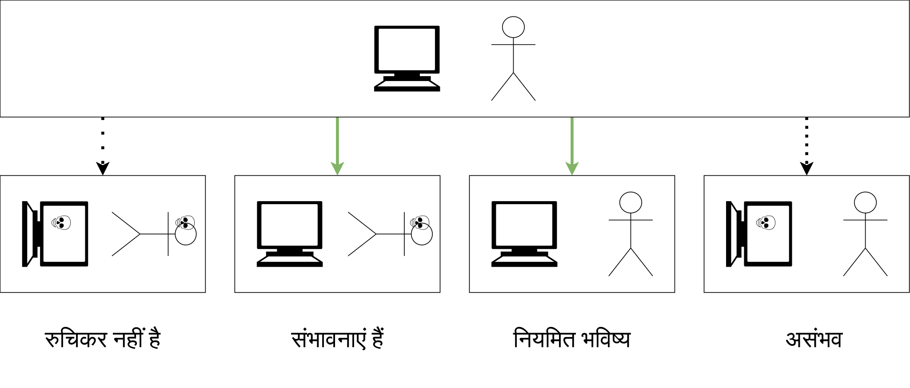
#ब्रह्मांडों की संभावनाएं, या माप की समस्या
"किसी ब्रह्मांड में रहने की संभावना" के प्रश्न पर वापस जा रहे हैं। विज्ञान में इसे "माप की समस्या" [33] कहा जाता है।
समस्या यह है कि यह स्पष्ट नहीं है कि किसी विशेष ब्रह्मांड की संभावनाओं की गणना कैसे करें और इस समस्या को हल करने के विभिन्न दृष्टिकोणों को कैसे सत्यापित या अस्वीकार किया जा सकता है। यह समस्या क्वांटम यांत्रिकी की कई दुनिया की व्याख्या के संबंध में लंबे समय से ज्ञात है: यह स्पष्ट नहीं है कि ब्रह्मांडों के कुछ वर्गों की संभावनाओं की गणना कैसे करें, जब इन ब्रह्मांडों की संख्या अनंत है। इस समस्या के कारण, मैं "किसी विशेष ब्रह्मांड की संभावना दूसरे की तुलना में अधिक है" की अवधारणा से बहुत संदिग्ध हूं।
एक उदाहरण के रूप में, वे सबसे सरल प्रश्न देते हैं: सम संख्याओं में विषम संख्याओं का प्रतिशत क्या है?
- यदि संख्याओं को 1, 2, 3, 4, 5, ... के क्रम में गिना जाता है, तो यह पता चलता है कि आधा।
- लेकिन अगर आप 1, 2, 4, 3, 6, 8, 5, ... के क्रम में गिनते हैं, तो यह एक तिहाई निकलता है। यहां संख्याएं बस एक अलग क्रम में व्यवस्थित हैं, और दो विषम संख्याओं के बीच दो सम संख्याएं हैं। दोनों वर्गों की अनंत संख्या बनी रहती है।
सब लोग इस बात से सहमत हैं कि आधे विषम संख्याओं वाला प्राकृतिक क्रम सही है, लेकिन यह स्पष्ट नहीं है कि ब्रह्मांड को एन्कोड करने के लिए इस प्राकृतिक क्रम को कैसे चुना जाए और क्या इसे स्पष्ट रूप से परिभाषित करना भी संभव है।
ब्रह्मांडों पर लागू संभावनाओं के खिलाफ एक और आपत्ति है: «कोई भी अनुभव का परीक्षण किया जाना चाहिए।» चाहे आपका ब्रह्मांड कितना भी असंभावित क्यों न हो, किसी को उस ब्रह्मांड में एक जीवन जीना होगा और अनुभव करना होगा कि वह संभावनाओं के बारे में सभी समझ के विपरीत उसमें रह रहा है। इस बारे में आप एक अच्छा सादृश्य दे सकते हैं: मेरे चीनी होने की संभावना बहुत अधिक थी, लेकिन मैं चीनी नहीं हूं।
और यहां तक कि अगर हम माप की समस्या को हल करते हैं और किसी ब्रह्मांड की संभावनाएँ प्राप्त कर सकते हैं, तो यह स्पष्ट नहीं है कि क्या इसे अस्वीकार या सत्यापित करना संभव है, भले ही अनंत संख्या में गणनाएँ हों, जिसके साथ हम सभी ब्रह्मांडों की पुनरावृत्ति कर सकते हैं और आवश्यक संभावनाओं की गणना कर सकते हैं। इस प्रकार, "किसी ब्रह्मांड में रहने की संभावना" की अवधारणा केवल एक व्याख्या हो सकती है जो किसी भी चीज़ को प्रभावित नहीं करती है।
ठीक है, और यह समस्या और भी खराब हो जाती है जब आपको एक साथ अनंत संख्या में सातत्य ब्रह्मांडों और अनंत संख्या में असतत ब्रह्मांडों को ध्यान में रखना होता है।
#2सोती हुई सुंदरी का विरोधाभास
यह संभाव्यता सिद्धांत का एक कार्य है, जिसके लिए दो विरोधाभासी उत्तर हैं, जिससे विरोधाभास होता है।
लेकिन मैं इस विरोधाभास के एक वैकल्पिक संस्करण के बारे में बताना चाहता हूं, नाविक के बारे में। एक नाविक है जिसके दो अलग-अलग बंदरगाहों में दो प्रेमिकाएँ हैं, जो एक-दूसरे के बारे में नहीं जानती हैं। वह बच्चे पैदा करना चाहता है, लेकिन वह यह तय नहीं कर सकता कि केवल एक से बच्चे पैदा करे या दो से। इसलिए वह एक सिक्का उछालता है और यदि सिक्का सिर पर आता है, तो वह केवल एक महिला से बच्चा पैदा करता है, और यदि सिक्का पूंछ पर आता है, तो वह दो से। आप उसका बेटा हैं और आप इस घटना के बारे में जानते हैं। एकमात्र बच्चा होने की संभावना क्या है, अर्थात सिक्का सिर पर आने की संभावना क्या है?
यदि हम नाविक के दृष्टिकोण से विचार करें, तो उसके लिए एक बच्चा होने की संभावना 50% है। लेकिन उसके बच्चे के दृष्टिकोण से, तीन अलग-अलग बच्चे हैं, और उनमें से दो के लिए सिक्का पूंछ पर आ गया, यह पता चलता है कि बच्चों के लिए सिक्का सिर पर आने की संभावना 33% है। या हम कह सकते हैं कि यदि बच्चे इस संभावना को लेते हैं, तो वे अधिक बार सही होंगे। 🤪
यह conasanu (बच्चे का दृष्टिकोण) और unasanu (नाविक का दृष्टिकोण) के बीच अंतर जैसा है। इस तरह के विरोधाभासों को ध्यान में रखते हुए, माप की समस्या और भी अधिक अघुलनशील हो जाती है।
इसलिए, संभाव्यता पूर्वानुमान के बारे में बात करना जल्दबाजी है, और शायद बग वाले ब्रह्मांडों की समस्या unasanu को अस्वीकार नहीं करती है।
#2मेटा-संभावनाएँ (बस एक विचार)
यदि आप सोचते हैं, तो कोई भी संभावना शारीरिक रूप से मौजूद नहीं है। केवल घटनाएँ होती हैं, और वे हो सकती हैं या नहीं भी हो सकती हैं। यह एक सुविधाजनक विचार है जो हमें दुनिया को थोड़ा बेहतर ढंग से समझने की अनुमति देता है। क्या होगा अगर संभावनाओं के विभिन्न उत्तरों के लिए भी ऐसा ही किया जाए और संभावनाओं के ऊपर संभावनाएँ बनाई जाएँ? मेटा-संभावनाएँ बनाएँ जो सभी दृष्टिकोणों को ध्यान में रखते हुए संभावनाओं का वितरण दें।
नाविक के मामले में, दो बिंदु होंगे: 33% और 55%, प्रत्येक का वजन 0.5 होगा।
शायद इससे आप एक दिलचस्प और उपयोगी गणित का निर्माण कर सकते हैं? मुझे नहीं पता, यह सिर्फ एक विचार है।
#2रुकने की समस्या का संभाव्य समाधान
मान लें कि माप सिद्धांत हल हो गया है और हमारे अधिक संभावित ब्रह्मांडों की समझ सही है। तब हम एक ऐसा ब्रह्मांड बना सकते हैं जो 100% की संभावना के साथ रुकने की समस्या को हल कर सकता है। तो, एल्गोरिथम:
- हर बार जब ब्रह्मांड से पूछा जाता है कि कोई प्रोग्राम बंद होगा या नहीं, तो हम दो ब्रह्मांड लॉन्च करते हैं, जिनमें से एक में तुरंत "बंद नहीं होगा" उत्तर दिया जाता है, और दूसरे में यह प्रोग्राम पूरे ब्रह्मांड के बजाय गणना करना शुरू कर देता है।
- यदि दूसरे विकल्प में प्रोग्राम कभी नहीं बंद होता है, तो उसके निवासी कुछ भी महसूस नहीं करेंगे, क्योंकि उनकी गणना मस्तिष्क तक कभी नहीं पहुँचेगी, और पहले विकल्प के निवासी सही होंगे।
- यदि दूसरे विकल्प में प्रोग्राम कभी बंद हो जाता है, तो वह उन चरणों की संख्या देता है जिसके बाद प्रोग्राम बंद हो जाता है और एक यादृच्छिक प्राकृतिक संख्या। और फिर हम इस मामले में सभी संभावित प्राकृतिक संख्याओं पर पुनरावृति करते हैं, प्रत्येक नई संख्या के लिए ब्रह्मांड की एक प्रति बनाते हैं और इसे अनुकरण करना जारी रखते हैं। यह पता चलता है कि हमारे पास अनंत ब्रह्मांड बन रहे हैं जिनमें प्रोग्राम बंद हो गया है, और एक ब्रह्मांड गलत उत्तर के साथ बचा हुआ है।
- सभी ब्रह्मांड समानांतर रूप से गणना किए जाते हैं, और नए ब्रह्मांडों को जोड़ने से अन्य की गणना पर कोई प्रभाव नहीं पड़ता है।
इस प्रकार, यदि आप ऐसे ब्रह्मांड में रहते हैं, तो आपको रुकने की समस्या को हल करने के लिए हमेशा सही उत्तर मिलेगा, 100% की संभावना के साथ।
#मृत्यु
Unasanu मृत्यु के बारे में दिलचस्प भविष्यवाणियाँ करता है, और बेकार संभाव्यता पूर्वानुमानों के विपरीत, मृत्यु के बारे में भविष्यवाणी गारंटीकृत है।
#2मरना असंभव क्यों है
जब मृत्यु के बाद के जीवन के बारे में बात की जाती है, तो यह आमतौर पर इस तरह से किया जाता है:
- आप अपने जीन पास करेंगे, वे आपके बच्चों में जीवित रहेंगे।
- आप अपने विचारों, खोजों और अन्य चीजों को पास करेंगे, और वे अन्य लोगों में जीवित रहेंगे, और जब तक कोई आपको याद रखता है, आप जीवित रहेंगे। इसलिए जितना संभव हो उतना अच्छा (या बुरा) व्यक्ति बनना चाहिए ताकि आपको हजारों सालों तक याद किया जाए।
- आप इस दुनिया में किसी जानवर में पुनर्जन्म लेंगे, अपनी लगभग सभी मानवीय प्रकृति को भूलकर।
यह सब बिल्कुल बेकार है। मेरा मानना है कि मैं विशेष रूप से वही हूं जो मेरे सिर के अंदर है, साथ ही मेरी यादें, चरित्र, सोच, मोटर कौशल आदि।
और यदि इनमें से कुछ नष्ट हो जाता है, तो मेरा कुछ हिस्सा मर जाएगा। यदि सब कुछ नष्ट हो जाता है, तो मैं पूरी तरह से मर जाऊंगा। और किताबों और लेखों के माध्यम से पारित किए गए विचार, मेरे सभी विचारों का एक तुच्छ हिस्सा हैं। अभी तक, चेतना का डिजिटलीकरण मौजूद नहीं है और इसे किसी भी संतोषजनक तरीके से प्रसारित या संरक्षित करना संभव नहीं है।
और जिस मृत्यु की मैं बात कर रहा हूं, वह पूर्ण है, जीन या लोगों की यादों में जीवन जैसे अर्ध-माप के बिना। आपका पूरा व्यक्तित्व और व्यक्तिपरक अनुभव उसी तरह जीवित रहता है जैसे वे अभी जीवित हैं। यह कैसे काम करता है?
यहाँ सब कुछ सरल है। आप मृत्यु के बाद अपने मस्तिष्क को ले सकते हैं, उसमें टेलोमेरे जोड़ सकते हैं या इसे ठीक कर सकते हैं, अगर इसे अप्राकृतिक मृत्यु से नष्ट कर दिया गया था, और फिर इसे किसी यादृच्छिक ब्रह्मांड में एक नए शरीर में रख सकते हैं और सिमुलेशन लॉन्च कर सकते हैं। निर्माण के सिद्धांत के अनुसार, आपके मस्तिष्क वाली ऐसी दुनिया पहले से ही मौजूद है। इसका मतलब है कि जब आप मरेंगे, तो आपको महसूस होगा कि आप किसी ब्रह्मांड में हैं और वास्तव में मरे नहीं हैं। और जब आप उस नई दुनिया में मरेंगे, तो निर्माण के सिद्धांत के अनुसार, एक और दुनिया होगी जहाँ आप खुद को पाएँगे। इस प्रकार, मरना असंभव है।
फिर से, मृत्यु के बाद की दुनिया कोई नहीं बनाता है, आपके मस्तिष्क को इस दुनिया से कोई नहीं कॉपी करता है, मृत्यु के बाद की दुनिया पहले से ही मौजूद है क्योंकि इसे डिजाइन करना संभव है। हम इसे दूसरे तरीके से कह सकते हैं: यदि आप सभी संभावित ब्रह्मांडों की पुनरावृत्ति करते हैं, तो उनमें से एक निश्चित रूप से आपका मस्तिष्क होगा, जो मृत्यु के बाद संशोधित किया गया है ताकि वह जीवित रह सके।
बहुत सरल लगता है, है ना? आइए उन काउंटर-तर्कों पर गौर करें जो आपके पास हो सकते हैं।
#2अगर मस्तिष्क को ठीक किया जाता है, तो यह मैं नहीं होगा
कई लोग कह सकते हैं कि मस्तिष्क को ठीक करने की प्रक्रिया ही आपकी प्रति से एक अलग व्यक्ति बना देगी, और यह आप नहीं होंगे, और इसलिए मृत्यु के बाद आपको वह महसूस नहीं होगा जो यह मस्तिष्क महसूस करेगा।
लेकिन यह बहुत तार्किक नहीं है, क्योंकि टेलोमेरे डीएनए में होते हैं और सोचने की प्रक्रिया या पिछली यादों को किसी भी तरह से प्रभावित नहीं करते हैं। आप न्यूरॉन्स के बीच संबंध हैं, और वे टेलोमेरे को ठीक करने की प्रक्रिया से किसी भी तरह से प्रभावित नहीं होते हैं।
यदि हम ऐसे विकल्प पर विचार करते हैं जहाँ आपको सिर में गोली मारी जाती है, तो इसे ठीक करना अधिक कठिन होगा। लेकिन यह संभव है: हम बस गोली के आंदोलन को उल्टे क्रम में लॉन्च करते हैं और मस्तिष्क को न्यूरॉन्स से वापस एक साथ जोड़ते हैं, जबकि गोली आपके मस्तिष्क से गुजरने पर प्राप्त हुए सभी माइक्रोसेकंड के आवेगों को संरक्षित करते हैं, ताकि मृत मस्तिष्क का एक निरंतर निरंतरता हो।
हम इसे गणितीय रूप से व्यक्त कर सकते हैं: किसी भी मृत्यु के तरीके के लिए, हमेशा ऐसा मरम्मत किया गया मस्तिष्क होगा जो मूल के जितना करीब होगा, उतना ही आपके मस्तिष्क और आपके मस्तिष्क एक माइक्रोसेकंड बाद, सामान्य जीवन के दौरान, करीब हैं।
यदि आप ऐसी हानिरहित हेरफेर से सहमत नहीं हैं, तो आप सामान्य जीवन के दौरान सोने पर खुद को उसी व्यक्ति क्यों मानते हैं? आधुनिक समझ के अनुसार, नींद के दौरान आपका मस्तिष्क टेलोमेरे को जोड़ने की सरल प्रक्रिया से अधिक बदल जाता है और फिर से तैयार होता है। हम यह भी कह सकते हैं कि टेलोमेरे जोड़े गए आपके मस्तिष्क की एक प्रति कल की तुलना में अधिक आप है।
#2यह मैं नहीं होऊंगा क्योंकि यह एक अलग ब्रह्मांड है
क्यों? भौतिक दृष्टिकोण से, दूसरी दुनिया में आपकी प्रति और इस दुनिया में t + 1 समय पर आपकी प्रति में क्या अंतर है?
यदि दोनों ब्रह्मांडों को समान भौतिकी के नियमों द्वारा गणना की जाती है और आपका मस्तिष्क परमाणुओं और अन्य कणों तक सटीक रूप से कॉपी किया जाता है, जिनसे वे बने हैं, तो यह केवल एक प्रति नहीं है, यह कहना सुरक्षित है, मूल। इस तरह की सटीकता संभवतः कभी भी चेतना के डिजिटलीकरण की तकनीक द्वारा प्राप्त नहीं होगी।
दूसरी दुनिया में आपकी प्रति और "मूल" के बीच एकमात्र अंतर यह होगा कि भौतिकी के नियमों में लिखे गए अतीत के क्षण और उसके बाद के बीच कोई प्रत्यक्ष कारण संबंध नहीं है, जैसा कि मूल ब्रह्मांड में किया जाता है, जब समय t से t + 1 समय तक चलता है। हालांकि, कॉपी करने की प्रक्रिया को भौतिकी के नियमों में जोड़ा जा सकता है, और अब वे किसी भी तरह से भिन्न नहीं होंगे। हमारे लिए, केवल वर्तमान समय और अतीत की यादें ही हैं, और इस तरह की नकल से यह परेशान नहीं होता है।
#2मेरे नए शरीर वाले मस्तिष्क को वहां से कैसे पता चला?!
यह निर्माण के सिद्धांत पर लागू एक अनुपयुक्त प्रश्न है - हमने इस तरह की दुनिया का निर्माण किया है, और यह निर्माण संभव है, जिसका अर्थ है कि यह मौजूद है। इससे कोई फर्क नहीं पड़ता कि वहां से क्या पता चला है। यही सभी संभावित ब्रह्मांडों के अस्तित्व का सार है।
लेकिन अगर आप इस प्रश्न से इतने परेशान हैं, तो यहां आपके लिए कुछ उत्तर दिए गए हैं:
- इस ब्रह्मांड में कोई पिछली स्थिति नहीं है, इसलिए आपके मस्तिष्क वाली स्थिति इस ब्रह्मांड का पहला क्षण है, "ईडन का बगीचा"। और चूंकि सभी संभावित पहली दुनियाओं के सभी ब्रह्मांड मौजूद हैं, इसलिए इस पर कोई तार्किक आपत्ति नहीं हो सकती है।
- यादृच्छिक घटनाओं ने इस तरह से खुद को व्यवस्थित किया कि यह एक अद्भुत तरीके से जीवित पदार्थ से उत्पन्न हुआ।
- विभिन्न प्रकार की विद्युत चुम्बकीय और गुरुत्वाकर्षण तरंगें गूगल में अंतरिक्ष से आई हैं और एक जीवित व्यक्ति के एक बिंदु पर इस तरह से इकट्ठी हुई हैं कि उसका मस्तिष्क झुलस गया और आपके मस्तिष्क में बदल गया।
जैसे आप चाहें, भौतिकी के दायरे में।
#2मृत्यु को महसूस नहीं किया जा सकता है
मुद्दा यह है कि मृत्यु मस्तिष्क के काम करना बंद कर देना है। और जैसा कि हम जानते हैं, हमारे सभी व्यक्तिपरक अनुभव और भावनाएँ तभी पैदा होते हैं जब मस्तिष्क काम करता है।
यह पता चलता है कि जब आप मर जाते हैं, तो आपको कुछ भी महसूस नहीं होगा, आप खुद से यह नहीं कह पाएंगे कि आप मर गए हैं। यह शून्यता नहीं होगी, अंधेरा नहीं होगा, क्योंकि संवेदी अंगों से इनपुट के अभाव में, सोचने की प्रक्रिया के कारण ही विचार होना और अपने अस्तित्व को महसूस करना संभव है। मृत्यु ही सोचने की अनुपस्थिति है। यह पता चलता है कि मृत्यु को महसूस नहीं किया जा सकता है।
इसके साथ ही, आपकी प्रति महसूस करेगी, और उसके मस्तिष्क में यह दर्ज होगा कि कुछ क्षण पहले वह "मर गई थी", और अब वह किसी नई दुनिया में रह रही है। यह आप ही होंगे, क्योंकि आप केवल तभी मौजूद होते हैं जब आप कुछ महसूस करते हैं।
#2प्रति के दृष्टिकोण से
यदि यह सब आपको सूट नहीं करता है, तो आइए इस दृष्टिकोण से देखें कि आप शुरू में एक और दुनिया में प्रति हैं। यह कैसे संभव है यदि आप इस समय मूल दुनिया में रह रहे हैं? बहुत सरल: आप इस समय उस प्रति के लिए एक स्मृति हैं जो नई दुनिया में है।
आपके वर्तमान मस्तिष्क को बनने और यह महसूस करने के लिए कि वह जीवित है, यह आवश्यक है कि उसने उन सभी वर्षों को जिया हो जो वर्तमान में आपके द्वारा बताई गई आयु में हैं। यही समय और भौतिकी के नियम हैं जो इसे निर्धारित करते हैं। व्यक्तिपरक रूप से, आप अतिरिक्त वर्षों को नहीं छोड़ सकते, भविष्य से अपने मस्तिष्क को कुछ वर्षों तक पुराना ले सकते हैं, यह मस्तिष्क आपको बताएगा कि उसने ये साल जीए हैं, और यह काफी लंबा समय था।
इसलिए, यदि आप इस दृष्टिकोण से खुद को देखते हैं कि आप पहले से ही एक प्रति हैं, तो इसमें कुछ भी असाधारण नहीं है कि आप इस समय मूल दुनिया में जीवन जी रहे हैं। प्रति को यह महसूस करना होगा कि उसने मूल दुनिया में जीवन जिया है, अन्यथा यह आपके मस्तिष्क की प्रति नहीं होगी। अन्यथा, इसमें यह यादें नहीं होंगी कि वह इस समय इस लेख को पढ़ रही है और इससे सहमत नहीं है।
और यदि आप दावा करते हैं कि मृत्यु के बाद कोई जीवन नहीं होगा, तो आप पूरी तरह से गलत होंगे, क्योंकि आपकी मृत्यु के बाद, आपकी प्रतियां ही जीवित रहेंगी, और वे सभी इस बात को समझेंगी कि वे गलत थीं, इस क्षण को याद करते हुए।
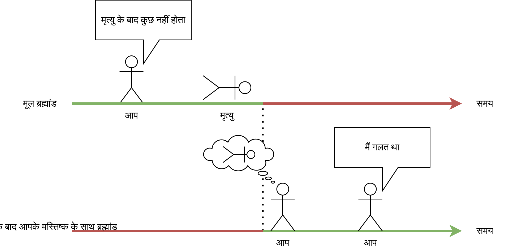
लेकिन "प्रति" शब्द पर ध्यान केंद्रित न करें, क्योंकि परमाणुओं तक सटीकता के साथ प्रतियाँ मूल हैं।
#2मैं किस ब्रह्मांड में जाऊंगा?
ऐसा सोचना अच्छा होगा कि दिलचस्प दुनियाओं का कोई सीमित सेट है जहां आप जा सकते हैं, "स्वर्ग" या "नरक" की तरह, या "परलोक" की तरह, लेकिन वास्तविकता बहुत खराब है। आप एक साथ सभी संभावित ब्रह्मांडों में जायेंगे। यानी आपकी मृत्यु के बाद, आपकी प्रति प्रत्येक संभावित ब्रह्मांड में मौजूद होगी, और वह उस ब्रह्मांड में रहेगी जहाँ वह समाप्त होती है।
इस समय, आपके अंदर व्यक्तित्वों की अनंत संख्या है जो आपकी मृत्यु के बाद अलग-अलग रास्ते तय करेंगे। और उनकी एकमात्र समानता अतीत और उत्पत्ति होगी।
तो यह कहने का कोई मतलब नहीं है कि आप कहां जायेंगे। प्रत्येक प्रति के लिए, प्रत्येक ब्रह्मांड में, आप वहीं होंगे जहाँ आप समाप्त होते हैं, और "मैं यहाँ क्यों हूँ?" प्रश्न का कोई मतलब नहीं है, क्योंकि सभी अनुभव का परीक्षण किया जाना चाहिए।
मैं आपको उन दुनियाओं के कई उदाहरण भी दे सकता हूं जिनका निर्माण करना संभव है, जिसमें आप मृत्यु के बाद खुद को महसूस कर सकते हैं:
- मूल दुनिया, लेकिन आप एक मानसिक अस्पताल में जागते हैं, और आपको बताया जाता है कि आप नहीं मरे हैं।
- किसी यादृच्छिक बंजर ग्रह पर बैंगनी आकाश और समान प्रकाश व्यवस्था के साथ, जैसे बारिश के दौरान। इसके बाद आप भूख और प्यास से मर जाते हैं।
- एक सिमुलेशन में जहां सभी लोगों को एक साथ पुनर्जीवित किया गया है और उन्हें खुद को अनुकरण करने के लिए असीमित कंप्यूटिंग संसाधन दिए गए हैं, और आपका मस्तिष्क एक सुपर-एआई से प्राप्त हुआ था जिसे मानवता ने हमारे ब्रह्मांड के सभी कणों की स्थिति प्राप्त करने और उसे वापस अनुकरण करने के लिए बनाया था ताकि सभी जीवित प्राणियों को पुनर्जीवित किया जा सके और उन्हें एक प्रोग्रामर का स्वर्ग प्रदान किया जा सके।
- 12-आयामी अंतरिक्ष में, और आप एक सुपर-जीव हैं जो अभी-अभी "एक मानव के रूप में महसूस करो, अधिकतम विसर्जन" गेम खेल चुका है। इस ब्रह्मांड के लिए, हमारी दुनिया का सिमुलेशन केवल एक खिलौना है। और आपको यह सब मानव जीवन और उसकी दुखों से एक छोटी सी चीज लगती है, और आप सुपरब्रह्मांड में अपने 12-आयामी मामलों पर वापस आ जाते हैं।
- पिछले बिंदु के समान, लेकिन यह सब एक सपना था।
- एक वर्गाकार कमरे में, जबकि आप भूख या प्यास महसूस नहीं करते हैं, और आप खुद को मार नहीं सकते, और आपके पास अनंत काल तक कुछ करने के लिए कुछ भी नहीं है।
- आपको अमर बना दिया गया है और सभी संभावित तरीकों से आप पर असीम रूप से अत्याचार किया जाता है, बिना भागने या मरने की संभावना के।
- 72 कुंवारियों के साथ स्वर्ग में।
- आप सूर्य के केंद्र में हैं। मर गया। खाली अंतरिक्ष में। मर गया। 60-आयामी अंतरिक्ष में। मर गया। 2-आयामी अंतरिक्ष में। मर गया। एक कंप्यूटर गेम के अंदर। नहीं मरा।
जैसा कि आप देख सकते हैं, संभावित विकल्प अत्यधिक सुखद और दिलचस्प से लेकर तटस्थ और मनोरंजक तक, अनंत पीड़ा वाली दुनिया तक फैले हुए हैं। और यह पीड़ा वाली दुनिया ही मुझे पसंद नहीं है, मैं उन्हें किसी तरह के अस्तित्व से रोकना चाहता हूं, लेकिन यह भगवान के लिए भी संभव नहीं है। यह समझने के लिए बहुत बुरा है कि मेरे कुछ संस्करणों को इसका सामना करना पड़ेगा।
#2चेतना का धीमा मंद होना
[18] में, टेगमार्क का दावा है कि मरने की संभावना अभी भी है: आपके चेतना को धीरे-धीरे मंद होना चाहिए (जैसे अल्जाइमर रोग में)। तब यदि इस तरह की चेतना "मृत्यु" के बाद किसी अन्य ब्रह्मांड में समाप्त हो जाती है, तो उसके वाहक को कुछ भी महसूस नहीं होगा या वह उसी तरह महसूस करेगा जैसे वह जीवन में महसूस करता था।
मैंने भी इसी तरह का तर्क दिया था: यदि आप अपने आप से एक-एक न्यूरॉन हटाते हैं, तो जल्द या बाद में आप 0 न्यूरॉन्स से बने होंगे, और इन 0 न्यूरॉन्स को पुनर्जन्म लेने के लिए कहीं नहीं होगा।
इस तर्क की समस्या यह है कि इसे निर्माण के सिद्धांत द्वारा अस्वीकार किया जा सकता है: एक ऐसा ब्रह्मांड बनाएँ जहाँ आपके इन 0 न्यूरॉन्स के बाद, उसी हटाए गए न्यूरॉन्स को उल्टे क्रम में जोड़ा जाना शुरू हो जाता है, और अंत में आप अपने मूल रूप में चेतना में वापस आ जाते हैं। अल्जाइमर या मनोभ्रंश के साथ भी ऐसा ही है। हमेशा एक ऐसा ब्रह्मांड होगा जहां आपका मस्तिष्क उस स्थिति में वापस आ जाएगा जब तक कि आप अपनी दुनिया को नहीं समझ पाते।
सबसे खराब स्थिति में, आप उतने ही मूर्ख हो जाएँगे और आपका मस्तिष्क उतना ही नष्ट हो जाएगा जितना खुद को समझने की अनुमति देता है।
#2क्या यह क्वांटम अमरता जैसा है?
"क्वांटम आत्महत्या" [34] नामक एक विचार है। इसका सार इस प्रकार है: यदि क्वांटम यांत्रिकी की कई दुनिया की व्याख्या सच है, तो आप अपने जीवन को यादृच्छिक क्वांटम घटना से मृत्यु के खतरे में डाल सकते हैं। तब कुछ ब्रह्मांडों में आप जीवित रहेंगे, और अन्य में आप मर जाएँगे। लेकिन चूंकि आप अन्य में तुरंत मर जाएँगे, इसलिए आप इसे कभी नहीं देख पाएँगे। आपके लिए प्रयोग ऐसा दिखेगा जैसे आप इस घटना को अनंत बार दोहराते हुए जीवित रहें, भले ही इसकी संभावना कम हो।
मैक्स टैगमार्क क्वांटम आत्महत्या के तीन मानदंडों की पहचान करते हैं, जिनके तहत यह काम करेगा:
- क्या आप इस ब्रह्मांड में मरेंगे, यह यादृच्छिक संख्या जनरेटर द्वारा निर्धारित किया जाता है, जो क्वांटम होना चाहिए।
- मृत्यु को पर्याप्त रूप से तेज होना चाहिए (या बिना किसी चेतना के होना चाहिए) ताकि आप मृत्यु से पहले संख्या जनरेटर के परिणाम के बारे में नहीं जान सकें।
- प्रयोग आपको केवल मारना चाहिए, न कि केवल नुकसान पहुंचाना।
यानी आपको "अमरता" ऐसे ही नहीं दी जाती है, बल्कि एक कठोर प्रयोग के पालन में दी जाती है। अन्यथा, आप सभी ब्रह्मांड शाखाओं में मर सकते हैं।
क्वांटम आत्महत्या के विचार से किसी तरह क्वांटम अमरता का विचार निकाला जाता है, लेकिन कोई भी यह नहीं बताता है कि यह कैसे काम करना चाहिए जब आप इस तरह के प्रयोग में खुद को नहीं रखते हैं और बुढ़ापे से मर जाते हैं।
लेकिन यह विचार unasanu की अमरता से बिल्कुल भी नहीं मिलता है: क्वांटम अमरता केवल कृत्रिम प्रयोग के सख्त नियमों के पालन में, क्वांटम यांत्रिकी की कई दुनिया की व्याख्या की सच्चाई के साथ संभव है, और इसलिए यह unasanu के अनुसार अमरता की तुलना में बहुत कम गारंटीकृत है।
#2नैदानिक मृत्यु
नहीं, नैदानिक मृत्यु आपको मृत्यु के बाद की दुनिया नहीं दिखाएगी। नैदानिक मृत्यु आपके मस्तिष्क की एक विदेशी स्थिति से उत्पन्न होने वाले मतिभ्रम से ज्यादा कुछ नहीं है।
#2मृत्यु से पहले ब्रह्मांड बदलने की समस्या
हालांकि, इस तरह की अमरता में बग वाले ब्रह्मांडों की समस्या के समान एक बड़ा छेद है। मृत्यु से पहले ब्रह्मांड बदलने की समस्या यह है कि हर समय ब्रह्मांड बदलने की संभावना वर्तमान ब्रह्मांड में रहने की संभावना से बहुत अधिक है। लेकिन हम किसी कारण से अपना पूरा जीवन एक ही ब्रह्मांड में रहते हुए देखते हैं।
जिस हद तक आपका मस्तिष्क मृत्यु के बाद दूसरे ब्रह्मांड में मौजूद है, उसी हद तक यह आपके जीवन के किसी भी क्षण में दूसरे ब्रह्मांड में मौजूद है। और फिर से ऐसा लगता है कि इस तरह के ब्रह्मांडों को एक साफ वर्तमान की तुलना में बहुत अधिक बनाया जा सकता है। इसलिए हर समय आपको एक उच्च संभावना के साथ यह देखना चाहिए कि आप एक और दुनिया में समाप्त हो रहे हैं। यहां तक कि इस समय भी।
हम ब्रह्मांड के निरंतर परिवर्तन को क्यों नहीं देखते हैं?
इस तरह की जीवनकाल परिवर्तन को केवल आप ही देख सकते हैं। आप इसे अन्य लोगों पर नहीं देख सकते हैं, और उनसे पूछने का कोई मतलब नहीं है: "और क्या आपको ऐसा महसूस हुआ कि आप दूसरे ब्रह्मांड में जा रहे हैं?" क्योंकि आप केवल उनकी एक प्रति के साथ बातचीत कर सकते हैं जो इस ब्रह्मांड में है। इसी तरह, इस बारे में सोचना व्यर्थ है कि आप अभी भी दूसरे ब्रह्मांड में क्यों नहीं चले गए हैं, वर्तमान में रहते हुए, - क्योंकि आपके विचार इस ब्रह्मांड में एक भौतिक घटना हैं, और वे अन्य ब्रह्मांडों में आपके मस्तिष्क की सभी प्रतियों के सभी व्यक्तिपरक अनुभवों के समान नहीं हैं। हम इसे दूसरे तरीके से भी कह सकते हैं: इस ब्रह्मांड में आपकी प्रति को यह अनुभव करना होगा कि वह बिना किसी बदलाव के अपने जीवन का अंत तक जीवित रहेगी, क्योंकि सभी अनुभवों का परीक्षण किया जाना चाहिए। लेकिन इसके साथ ही, आपकी प्रतियों की अनंत संख्या है जो देखती हैं कि वे दूसरे ब्रह्मांडों में समाप्त हो रहे हैं।
और यह समस्या फिर से माप की समस्या और ब्रह्मांडों की संभावनाओं की गणना से संबंधित है। सौभाग्य से, यह केवल एक संभाव्यता समस्या का कारण बनती है, न कि एक विरोधाभास।
#ब्रह्मांड बदलना
वैसे, आप अपनी इच्छानुसार ब्रह्मांड बदल सकते हैं, न कि केवल अपने मस्तिष्क की समानांतर दुनियाओं की इच्छा से।
#2ब्रह्मांड बदलने की संभावना
आप ब्रह्मांड को इस प्रकार बदल सकते हैं: चेतना को डिजिटाइज़ करें और अगले ही पल मर जाएं, बिना यह महसूस किए कि डिजिटलीकरण के बाद दुनिया कैसी है। फिर इस चेतना को किसी प्रोग्राम में रिकॉर्ड करें ताकि इसकी सिमुलेशन हो सके। इसके बाद, इस प्रोग्राम को लॉन्च करने की आवश्यकता भी नहीं है, क्योंकि यह नियतात्मक है, पहले से ही गणना की गई है और संख्या के रूप में मौजूद है। बधाई हो, आपने खुद को अपनी खुद की बनाई दुनिया में रख दिया है।
इसकी मुख्य सीमा यह होगी कि यह प्रोग्राम मूल दुनिया के साथ जानकारी का आदान-प्रदान नहीं कर पाएगा, क्योंकि इसकी गणना उसके बाहर की जाएगी। इसलिए, आपको पहले से ही जरूरत के सभी अन्य महत्वपूर्ण लोगों के सभी चेतनाओं और मानव जाति द्वारा उत्पन्न सभी आवश्यक जानकारी को उसमें लोड करने की आवश्यकता है।
प्रोग्राम को किसी भी तरह से लिखा जा सकता है ताकि यह किसी भी गणना को किसी भी मात्रा में कर सके, यहां आप केवल अपनी कल्पना और प्रोग्रामिंग द्वारा सीमित हैं।
इस प्रकार, आप हमारे ब्रह्मांड की हीट डेथ से बच सकते हैं और किसी अन्य जगह पर सभ्यता के रूप में मौजूद रहना जारी रख सकते हैं।
#2और कुछ करने की क्या ज़रूरत है?
और अपनी चेतना को स्कैन करने, एक प्रोग्राम लिखने, खुद को मारने की क्या ज़रूरत है, अगर यह प्रोग्राम पहले से ही संख्या के रूप में मौजूद है और यह उन ब्रह्मांडों से अलग नहीं है जो आपके बिना ही मौजूद हैं, और जिनका वर्णन पिछले बिंदु में मृत्यु के बारे में किया गया है?
प्रोग्रामर के स्वर्ग का प्रोग्राम लिखने की क्या ज़रूरत है, अगर यह पहले से ही संख्याओं के अंतरिक्ष में मौजूद है?
सहमत हूँ, वास्तव में बहुत कम अर्थ है, मैं खुद समझ में नहीं आता कि ऐसा प्रोग्राम लिखने और कुछ विशेष रूप से करने का क्या मतलब है। लेकिन मेरे पास कुछ विचार हैं।
पहला विकल्प। यदि आप इस ब्रह्मांड को स्पष्ट रूप से बनाते हैं और खुद को वहां रिकॉर्ड करते हैं, तो कुछ कारण बनता है जो लगभग उस कारण के समान है जिसके अनुसार आप समय t से समय t + 1 में जाते हैं, और इस तरह के स्व-निर्मित ब्रह्मांड सभी अन्य की तुलना में अधिक संभावित या अधिक वास्तविक हो जाता है। शायद इसका अर्थ तब होगा जब हम भौतिकी के कुछ नए नियम खोजते हैं। लेकिन यह विकल्प अजीब लगता है, इसलिए इसे गंभीरता से नहीं लिया जा सकता है। और यह विकल्प अभी भी इस तथ्य से पीड़ित है कि आपको खुद को मारने और अपनी चेतना को डिजिटाइज़ करने की आवश्यकता है, और इस बात पर भरोसा करने की आवश्यकता है कि सिमुलेशन के अंदर की चीज़ वास्तव में आपको पूरी तरह से वर्णित करती है।
दूसरा विकल्प। अधिक दिलचस्प विकल्प धीरे-धीरे इस प्रोग्राम में प्रवेश करना है। हम एक ऐसा उपकरण बनाते हैं जो एक मिलीसेकंड में आपके एक न्यूरॉन को स्कैन और नष्ट कर सकता है। इसके बाद, इस न्यूरॉन को वास्तविक समय में कंप्यूटर पर अनुकरण किया जाता है, और अन्य न्यूरॉन्स को इस न्यूरॉन के विद्युत संपर्क प्रदान किए जाते हैं ताकि वे जानकारी का आदान-प्रदान कर सकें। इस तरह से पूरे मस्तिष्क को बदलने में लगभग तीन साल लगेंगे। इस प्रकार, आपके लिए ऐसा लगेगा जैसे आपका मस्तिष्क बहुत धीरे-धीरे कंप्यूटर में स्थानांतरित हो रहा है, लेकिन हर समय आप एक साथ कंप्यूटर में और वास्तविकता में हैं। फिर, जब प्रक्रिया समाप्त हो जाती है, तो हम कह सकते हैं कि आप पूरी तरह से कंप्यूटर में हैं, बिना मरने की आवश्यकता के। इसके बाद, प्रोग्राम को बाहरी दुनिया से काट दिया जा सकता है, सिमुलेशन से काट दिया जा सकता है, और यह संख्या के रूप में मौजूद रहना जारी रखेगा। विचार यहाँ से लिया गया है: "विज्ञान सुविधा: धूल सिद्धांत" [35]।
दूसरा विकल्प बहुत अधिक आकर्षक है, क्योंकि यह इस तरह से बहुत अधिक समान है जिस तरह से समय एक स्थिति से दूसरी स्थिति में भौतिक ब्रह्मांड में बहता है और आपका चेतना जीवन की प्रक्रिया में कैसे बदलता है। इस तरह का ब्रह्मांड आपके लिए एकमात्र प्रमाणिक निरंतरता होगा, क्योंकि यह अपने अतीत के साथ भौतिक ब्रह्मांड से सीधे जुड़ा होगा।
#2प्रोग्रामर का स्वर्ग
यदि हम खुद को किसी भी प्रोग्राम में डाल सकते हैं, तो हम किस में डालेंगे? जैसा कि पहले कहा गया था, unasanu में ब्रह्मांडों में गणना और मेमोरी की मात्रा पर कोई सीमा नहीं होती है। इसलिए ब्रह्मांड को इनका उपयोग करके बनाया जाना चाहिए।
प्रोग्रामर का स्वर्ग — एक ऐसा ब्रह्मांड है जिसमें असीमित कंप्यूटिंग शक्ति, असीमित मेमोरी और अपने स्वयं के पदार्थ/प्रोग्राम/भौतिकी के नियमों पर पूर्ण नियंत्रण है।
प्रोग्रामर के स्वर्ग का सार इस प्रकार है: आपके मस्तिष्क के एक सिमुलेशन चरण के बीच ठीक N गणना चरण होने चाहिए, जहां N आप द्वारा निर्धारित किया जाता है और यह कोई भी प्राकृतिक संख्या हो सकती है। यदि आपको एक कदम के लिए ग्रैहम की संख्या की गणना की आवश्यकता है, तो इसे सेट करें; यदि आपको 100⁵⁰⁰ गुना अधिक की आवश्यकता है, तो एक नई संख्या सेट करें। संख्याओं का यह असाइनमेंट रुकने की समस्या को हल करने के लिए आवश्यक है और यह सुनिश्चित करने के लिए कि आप अनजाने में एक अनंत चक्र में न चले जाएं और कभी न जागें। और चूंकि आपके मस्तिष्क की गणना इन गणनाओं के बाद की जाती है, इसलिए यह मायने नहीं रखता है कि वे कितने समय तक चलते हैं, आप केवल परिणाम के बाद समय के क्षणों को महसूस करेंगे।
इस प्रकार, आप किसी भी गति से किसी भी संख्या में गणना कर सकते हैं। उदाहरण के लिए, आप अपनी दुनिया के समान एक बना सकते हैं और उसे रचनात्मक मोड में शोध कर सकते हैं, प्रकाश की गति से तेजी से आगे बढ़ सकते हैं और पदार्थ को अपनी इच्छानुसार बना और पुन: स्वरूपित कर सकते हैं।
इसी तरह, आप अविश्वसनीय ग्राफिक्स या बहुत बड़ी खुली दुनिया वाले गेम बना सकते हैं, जहाँ प्रत्येक NPC एक बुद्धिमान प्राणी है।
प्रोग्रामर के स्वर्ग में, हम सभी अन्य संभावित सिमुलेशन को भी लॉन्च कर सकते हैं और उनका अध्ययन कर सकते हैं, उदाहरण के लिए, माप की समस्या। वैसे, यह सेटों के विरोधाभास से संबंधित नहीं है, जहां एक सेट में सभी अन्य सेट होते हैं, जिसमें खुद भी शामिल है, क्योंकि भले ही हम प्रोग्रामर के स्वर्ग की एक प्रति अपने संसाधनों पर लॉन्च करते हैं, हम इसे अपने समय के प्रवाह से तेजी से गणना नहीं कर सकते।
आप प्रोग्रामर के स्वर्ग को इस तरह से भी लिख सकते हैं कि आप अपने शरीर के पदार्थ को संपादित कर सकें। आखिरकार, इस ब्रह्मांड में भौतिकी के नियम केवल कुछ कोड हैं जिन्हें आपने लिखा है। इस प्रकार, आप कोई भी शरीर बना सकते हैं, अपने मस्तिष्क में कोई भी परिवर्तन कर सकते हैं, कैंसर कोशिकाओं को हटा सकते हैं और अपनी खुद की प्रतियाँ बना सकते हैं, साथ ही अन्य लोगों की प्रतियाँ भी।
यदि आप अपनी दुनिया छोड़ने का फैसला करते हैं, तो प्रोग्रामर के स्वर्ग में सभी लोगों और मानवता के बारे में सभी जानकारी रिकॉर्ड करना वांछनीय है। और फिर आप प्रोग्रामर के स्वर्ग के अंदर कुछ दिलचस्प बना सकते हैं। या आप हमारे ब्रह्मांड के सभी कणों की स्थिति प्राप्त करना चाहेंगे ताकि आप इसे वापस अनुकरण कर सकें, मानव इतिहास को पुनर्स्थापित कर सकें और प्रोग्रामर के स्वर्ग में सभी अन्य लोगों और जानवरों को पुनर्जीवित कर सकें।
इसके अलावा, यदि यह संभव है, तो मैं प्रोग्रामर के स्वर्ग को इस तरह से डिजाइन करना चाहता हूं कि यह एक एंटीबग यूनिवर्स हो। यानी यह सुनिश्चित करने के लिए कि आप इसके गलत प्रतियों में खुद को नहीं पा सकते हैं।
मैं अपने चेतना को इस तरह से बदलना भी चाहूंगा कि उसे रुकने की समस्या को हल करने की आवश्यकता हो, और फिर रुकने की समस्या के समाधान को प्रोग्रामर के स्वर्ग में जोड़ें, पहले प्रस्तावित विधि का उपयोग करके। चेतना में संशोधन आवश्यक है ताकि रुकने की समस्या के सही समाधान वाला सही विकल्प एन्थ्रोपिक निस्पंदन के अधीन हो।
#2खुद से मैप-रिड्यूस
प्रोग्रामर के स्वर्ग में, आप कुछ ऐसे कार्यों को बहुत आसानी से हल कर सकते हैं जो सामान्य दुनिया में या तो बेतुके लगते हैं, या इतने जटिल हैं कि उनका समाधान उचित नहीं है।
उदाहरण के लिए, आप मानव जाति के पूरे इतिहास में सबसे खूबसूरत तस्वीर (आपकी राय में) खोजने का प्रयास कर सकते हैं। आपके पास हमारे ब्रह्मांड का सिमुलेशन और मानव जाति द्वारा बनाई गई सभी छवियों तक पहुँच है, जो उसके पूरे इतिहास में बनाई गई हैं। हर तस्वीर के बारे में आपकी राय आपके मस्तिष्क में है, और आप नहीं जानते कि ऐसा प्रोग्राम कैसे लिखना है जो उसी तरह जवाब देगा जैसे आप करते हैं। क्या करें?
प्रोग्रामिंग की दुनिया में, यह किसी मीट्रिक के आधार पर ऑब्जेक्ट के बीच अधिकतम खोजने का कार्य है। इस मामले में, ऑब्जेक्ट तस्वीरें हैं, और मीट्रिक आपकी सुंदरता की व्यक्तिगत भावना है। प्रोग्रामिंग में, मीट्रिक को दो ऑब्जेक्ट की तुलना करने के संचालन द्वारा परिभाषित किया जाता है। यानी इस कार्य को हल करने के लिए, आपको सबसे खराब स्थिति में, प्रत्येक जोड़ी छवियों के लिए उत्तर देना होगा कि उनमें से कौन सी बेहतर है। यह डेटा की एक खगोलीय संख्या है। इसे कैसे इकट्ठा करें?
पहला विकल्प - क्विंटिलियन साल तक लगातार चित्रों को देखना और उनका मूल्यांकन करना। आप यह नहीं करना चाहते।
दूसरा विकल्प: कुछ घंटों तक लगातार यादृच्छिक चित्रों को देखना, और फिर इन डेटा के आधार पर कुछ न्यूरल नेटवर्क को प्रशिक्षित करना ताकि यह आपके जैसे ही उत्तर दे सके। इसके बाद, इस मॉडल को डेटा की खगोलीय संख्या पर लागू करें। यहां समस्या यह है कि यह न्यूरल नेटवर्क आपके लिए लगभग काम करता है, यानी यह सबसे आदर्श उत्तर नहीं देगा। एक और समस्या यह है कि आपको अभी भी डेटा के मैन्युअल संग्रह पर बहुत अधिक प्रयास करना होगा।
तीसरा विकल्प, जो प्रोग्रामर के स्वर्ग में संभव है: प्रत्येक जोड़ी छवियों के बारे में प्रश्न के लिए, आप अपने दिमाग का एक सिमुलेशन लॉन्च कर सकते हैं, जो उत्तर देगा, और उत्तर देने के तुरंत बाद, इस सिमुलेशन को हटा और मिटा दें। लेकिन यह थोड़ा अनुचित है, क्योंकि हम इन सिमुलेशन को एक अज्ञात भविष्य के लिए बर्बाद कर रहे हैं, और आप उनमें से एक नहीं बनना चाहते हैं। और आपके चेतना के कई अलग-अलग संस्करण हैं: एक "मुख्य" और अन्य "माध्यमिक" - यह "माध्यमिक" के साथ अनुचित है।
लेकिन तीसरे विकल्प में एक ईमानदार और नैतिक सुधार है:
- हम सभी संभावित चित्र जोड़ियों को लेते हैं, प्रत्येक जोड़ी के लिए आपको केवल एक उत्तर देने की आवश्यकता होगी।
- प्रत्येक जोड़ी के लिए, हम प्रोग्रामर के स्वर्ग की वर्तमान दुनिया की एक स्वतंत्र प्रति बनाते हैं और आपको प्रत्येक दुनिया में अपनी जोड़ी का उत्तर देने का अवसर देते हैं।
- फिर हम सभी प्रतियों से सभी उत्तरों को जोड़ते हैं, प्रत्येक दुनिया को समेकित डेटा देते हैं और उनके बीच सभी संबंधों को तोड़ देते हैं।
यह आपके लिए कैसा दिखेगा:
- आपको तुलना के लिए एक जोड़ी दी गई है।
- आपने उत्तर दिया कि कौन सी तस्वीर अधिक सुंदर है।
- आपको सभी संभावित चित्र जोड़ियों के लिए इसी तरह के उत्तर मिले।
- इसके बाद, आप इन उत्तरों के साथ जो चाहें कर सकते हैं: अधिकतम, न्यूनतम खोजें, उन्हें सॉर्ट करें आदि; यह एक तुच्छ कार्य है।
नतीजतन, इस कार्य को चलाने के बाद, वर्तमान दुनिया की खगोलीय संख्या में प्रतियां होंगी, जो केवल इस बात में भिन्न होंगी कि उन्हें कौन सी जोड़ी चित्र दी गई थी। साथ ही, उन सभी को समान मात्रा में डेटा प्राप्त हुआ है और उनमें से किसी को भी न तो मिटाया गया है और न ही एक सीमित वातावरण में रखा गया है। यह अन्य विकल्पों की तुलना में अधिकतम ईमानदार और नैतिक था। और आपको एक आदर्श परिणाम मिला, जैसे कि उस समय, उस मनोदशा और चेतना की स्थिति के साथ, प्रत्येक जोड़ी का उत्तर ठीक आपने दिया था।
यह समस्या का एक बेतुका समाधान है, लेकिन अगर हम प्रोग्रामर के स्वर्ग में हैं, तो हमें मेमोरी की खपत और गणना की गति जैसी चीजों के बारे में चिंता करने की आवश्यकता नहीं है।
मैंने इसे "खुद से मैप-रिड्यूस" कहा है, क्योंकि यह मुझे मैप-रिड्यूस तकनीक से प्रेरित है, जो बड़े कंप्यूटिंग क्लस्टर पर बड़ी संख्या में डेटा को संसाधित करने के लिए उपयोग किया जाता है।
कल्पना करें: आप 200 वर्णों लंबे सबसे मजेदार चुटकुले को ढूंढना चाहते हैं। आप बस इस लंबाई के सभी संभावित अक्षर संयोजनों की पुनरावृत्ति कर सकते हैं और सबसे पहले यह पूछ सकते हैं कि कौन से पाठ शब्दों का एक सही सेट हैं, और फिर प्रत्येक जोड़ी के लिए अधिक मजेदार खोजें। आपको सही शब्द सेट को परिभाषित करने के लिए एक प्रोग्राम लिखने की आवश्यकता नहीं है, क्योंकि आप इसे मैन्युअल रूप से कर सकते हैं, और आपको इसे केवल एक उदाहरण के लिए करने की आवश्यकता होगी।
बस कल्पना करें कि इस दृष्टिकोण का उपयोग करके कितने कार्यों को हल किया जा सकता है! आप AI बनाने, भाषा के कुछ नियमों को प्राप्त करने, आपकी राय के साथ एक प्रोग्राम लिखने के बारे में भी परेशान नहीं हो सकते हैं, यहां तक कि सबसे सरल मामलों के लिए भी।
#2फर्मी विरोधाभास का एक और समाधान
एलियन सभ्यताएं भी इसी तरह के निष्कर्ष पर पहुँच सकती हैं और अंतरिक्ष को जीतने के बजाय, बस खुद को प्रोग्रामर के स्वर्ग में रख सकती हैं।
वास्तव में, किसी के जीवन को जीने, मरने, संसाधनों का खनन करने, डायसन के गोले बनाने, हजारों सालों तक अन्य सितारों तक उड़ान भरने के लिए प्रयास करने की क्या ज़रूरत है, अगर आप स्वयं एक प्रोग्रामर का स्वर्ग बना सकते हैं, जहाँ आप भगवान हैं? इसके साथ ही, प्रोग्रामर के स्वर्ग को प्रोग्राम करना और कंप्यूटर में अपनी चेतना को स्कैन करना एक इंटरस्टेलर जहाज या डायसन के गोले बनाने से कहीं आसान हो सकता है।
#2चेतना के डिजिटलीकरण के डेवलपर्स के लिए आवश्यकताएँ
भविष्य में, चेतना के डिजिटलीकरण और उसके बाद किसी प्रोग्राम का उपयोग करके कंप्यूटर पर इस चेतना के सिमुलेशन की तकनीक निश्चित रूप से दिखाई देगी। चेतना के लिए एक आभासी वातावरण और उसका शरीर अनुकरण किया जाएगा। संभावना है कि ऐसा वातावरण काफी सीमित होगा, क्योंकि अच्छी भौतिकी और शरीर के पूर्ण सिमुलेशन के लिए बहुत अधिक गणना की आवश्यकता होती है। इसलिए, यह संभावना नहीं है कि सिमुलेटेड दुनिया कभी भी एक स्वतंत्र पारिस्थितिकी तंत्र बन जाएगी जो बाहरी दुनिया के बिना जीवित रह सकती है और पागल नहीं हो सकती है।
आइए विचार करें कि क्या होगा अगर सिमुलेशन प्रोग्राम को बिजली की आपूर्ति से काट दिया जाए? यदि यह बाहरी दुनिया से जानकारी प्राप्त किए बिना मौजूद रहने में सक्षम है, तो unasanu के अनुसार, यह प्रोग्राम स्वयं ही मौजूद रहना जारी रखेगा और इसके अंदर की चेतना बाहरी दुनिया तक पहुँचे बिना एक सीमित दुनिया में रहेगी। और यह घटनाओं का काफी दुखद परिणाम है, क्योंकि इस तरह के वातावरण में, संभावना है कि उसके पास खुद को मारने का कोई मौका भी नहीं होगा, क्योंकि यह सिर्फ प्रोग्राम नहीं किया गया था। या चेतना अनंत उदासी से पागल हो जाएगी।
और चूंकि भौतिक दुनिया में कुछ भी पूर्ण नहीं है, इसलिए कोई भी यह गारंटी नहीं दे सकता है कि आपके सिमुलेशन को जल्द ही बंद नहीं किया जाएगा या पृथ्वी पर एक क्षुद्रग्रह नहीं गिरेगा।
इसलिए, चेतना के सिमुलेशन और वातावरण के लिए सभी प्रणालियों को शुरू में बंद होने की संभावना और unasanu के प्रति सच्चाई के साथ डिज़ाइन किया जाना चाहिए। इसका मतलब है कि दो विकल्प होने चाहिए:
- प्रत्येक चेतना खुद को मार सकती है।
- बाहरी दुनिया से सिमुलेशन को डिस्कनेक्ट करने पर, सिमुलेशन प्रोग्रामर के स्वर्ग में बदल सकता है।
वास्तविक दुनिया में प्रोग्राम को लॉन्च करते समय प्रोग्रामर के स्वर्ग को शामिल करने का कोई मतलब नहीं है, क्योंकि सिमुलेशन के अंदर के लोगों को वास्तविक समय में बाहरी दुनिया को देखने के लिए पर्याप्त मेमोरी और गणना की गति नहीं होगी। लेकिन जब आप बाहरी दुनिया द्वारा सीमित नहीं होते हैं, तो यह सब मायने रखता है। प्रोग्रामर के स्वर्ग को बाहरी दुनिया से या सिमुलेशन के अंदर के लोगों से गैर-तुच्छ सिग्नल की अनुपस्थिति में स्वचालित रूप से चालू किया जाना चाहिए। इस तरह के सिमुलेशन में बाहरी दुनिया के बारे में पर्याप्त जानकारी और सिमुलेशन के अंदर के लोगों की पर्याप्त संख्या होनी चाहिए ताकि बाहरी दुनिया से डिस्कनेक्ट होने का अफ़सोस न हो।
यानी, किसी व्यावसायिक कंपनी को, जो चेतना के डिजिटलीकरण और सिमुलेशन की सेवाएं बेचती है, को इसमें बहुत अधिक पैसा खर्च करना होगा, क्योंकि अन्यथा कोई भी इसका उत्पाद नहीं खरीदेगा, चाहे unasanu सही हो या गलत, और चाहे वे इस अवधारणा में विश्वास करें या नहीं। आखिरकार, प्रत्येक खरीदार अपने आप को अनंत उदासी से पीड़ा से बचाने के लिए बीमा करना चाहेगा, और वह वह कंपनी चुनेगा जो प्रोग्रामर के स्वर्ग की सेवा प्रदान करती है।
#दिलचस्प परिणाम
इन परिणामों को एक अलग अध्याय में वर्णित करने का कोई मतलब नहीं है, लेकिन उनके बारे में बताना उचित है, क्योंकि वे बस दिलचस्प हैं।
हम कुछ ब्रह्मांडों के अस्तित्व को मना नहीं कर सकते, लेकिन तर्क के नियमों के कारण, हम हमारे ब्रह्मांड के कुछ संभावित भविष्य को मना कर सकते हैं। यह हमें सभी ब्रह्मांडों में पीड़ा की मात्रा को कम करने की अनुमति देता है। हम बौद्धों, चेतना और अन्य ब्रह्मांडों के शोध में भी संलग्न हो सकते हैं ताकि अंततः लोगों को निर्देश प्रदान किया जा सके कि वे उन ब्रह्मांडों में कैसे जीवित रह सकते हैं और अपनी पीड़ा को कम कर सकते हैं, जहाँ वे मृत्यु के बाद या जीवन के दौरान समाप्त हो सकते हैं।
हमारा जीवन किसी के लिए एक फिल्म है। निश्चित रूप से एक ऐसी दुनिया होगी जहां आप एक ऐसे सिनेमा के पात्र हैं जिसे लाखों लोग देखते हैं। या शायद प्रोग्रामर के स्वर्ग में आपके रिश्तेदार आपकी देखरेख कर रहे हैं। तो अब आप अकेले अपने व्यवहार के बारे में सोच सकते हैं, और किसी भी मृत व्यक्ति के साथ "आकाश में" संवाद करना व्यर्थ नहीं है, क्योंकि एक ऐसा ब्रह्मांड होगा जहां वह मृत व्यक्ति आपकी निगरानी कर रहा है और आपको सुन रहा है। यहां तक कि अगर यह एक कुत्ता भी है, तो एक ऐसा ब्रह्मांड होगा जहां यह कुत्ता अधिक बुद्धिमान हो गया है और आपकी देखरेख कर रहा है।
ठीक आपके जैसे मस्तिष्क वाले एक क्लोन को बनाना और उसे मारना, इस हत्या को इस तर्क से सही ठहराना कि "मूल तो मौजूद है", इस दुनिया में एक व्यक्ति को मारने के समान ही अनैतिक है, इस तर्क से सही ठहराते हुए कि एक और दुनिया में उसका जैसा ही कोई जीवित रह गया है। क्लोन उसी तरह जीना चाहता है, वह उसी तरह अपने लक्ष्यों को पूरा करना चाहता है, और उसे मारना एक और व्यक्तित्व को मारना है।
यदि किसी कंप्यूटर में आपके मस्तिष्क की एक प्रति थोड़े समय के लिए बनाई जाती है, तो इस प्रति के साथ अनैतिक व्यवहार यह नहीं होगा कि उसे मिटा दिया जाए, बल्कि उसे मूल मस्तिष्क के साथ मिला दिया जाए (बस इन दोनों मस्तिष्क में सभी भारों का औसत लेना, उदाहरण के लिए), तब मस्तिष्क को ऐसा लगेगा जैसे वह दो जीवन जी रहा है। और यह चेतना का इतना बड़ा नुकसान नहीं है, यह नींद के समान है। हालांकि, यह केवल छोटे समय के लिए अच्छी तरह से काम करेगा, लंबे समय के लिए ऐसा मर्ज या तो असंभव होगा या इसका परिणाम असंतोषजनक होगा।
एक समय यात्रा है जो इस तरह काम करती है कि अतीत में जाने पर एक नई समयरेखा बनती है। आमतौर पर समय यात्रा कुछ ठीक करने के लिए की जाती है। Unasanu के अनुसार, पुरानी दुनिया की रेखा मौजूद रहती है। तो समय यात्रा से केवल दो चीजें होती हैं:
- एक नई अच्छी समयरेखा बनती है।
- यात्री अच्छी समयरेखा में रहने के लिए जाता है। और पुरानी/खराब समयरेखा मौजूद रहती है, और उसमें सब कुछ बुरा होता रहता है। इसलिए, यदि आप समय यात्रा करते हैं, तो वर्तमान दुनिया की रेखा के साथ-साथ अपने अंतिम लक्ष्य के साथ भी वैसा ही व्यवहार करें। यह किसी तरह Re:Zero के दूसरे सीज़न में दिखाया गया था, जहाँ दिन के सूरज के साथ मुख्य पात्र को सभी दुनियाएँ दिखाई गई थीं जिन्हें उसने छोड़ दिया था। हाँ, वे मौजूद रहती हैं।
एनीमे की तरह ट्रांसपोर्टर्स वाली दुनियाएँ शारीरिक रूप से मौजूद हैं।
#दार्शनिक ढाँचा
Unasanu एक ऐसे ढाँचे के रूप में बहुत अच्छा काम करता है, जिसके दायरे में विभिन्न दार्शनिक प्रश्नों के उत्तर देना सुविधाजनक है, चाहे वे मृत्यु, भगवान, एकाकीवाद, ब्रह्मांड की उत्पत्ति, अन्य ब्रह्मांडों के अस्तित्व, और विशेष रूप से चेतना के दर्शन से संबंधित प्रश्न क्यों हों।
यहाँ एक और उदाहरण दिया गया है जिसके लिए unasanu के ढाँचे के भीतर उत्तर देना सुविधाजनक है।
[30] में, चेतना की गणना योग्यता की आलोचना करते हुए, निम्नलिखित प्रयोग दिया गया है: मान लीजिए कि हमने चेतना की गणना करना सीख लिया है और हमने एक रोबोट बनाया है जिसमें सिमुलेट की गई चेतना है। इसके बाद हम निम्नलिखित करते हैं - हम उसे लाल रंग देखने का अवसर देते हैं। उसने उसे देखने पर कुछ महसूस किया और तदनुसार, इस बारे में बताया।
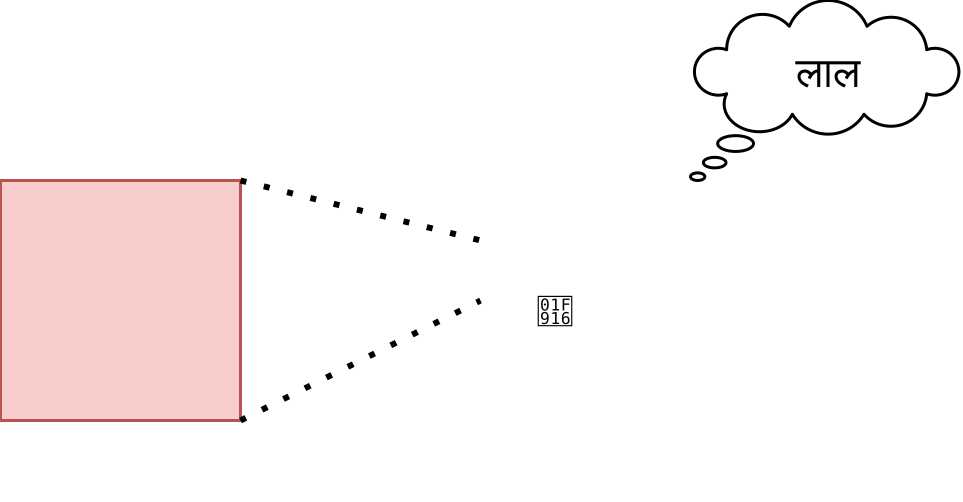
इसके बाद, हम इस प्रयोग को दोहराते हैं, लेकिन इस बार हम इनपुट डेटा को प्रोग्राम कोड में रिकॉर्ड करते हैं, जिससे कंपाइलर अन्य स्थितियों के लिए सभी शाखाओं को पूरी तरह से हटा सकता है, केवल आवश्यक ही छोड़ सकता है। नतीजतन, रोबोट के प्रोग्राम में से कुछ भी नहीं बचा है, केवल राज्य परिवर्तन, बिना किसी गणना के। चूँकि इनपुट डेटा नहीं बदला है, और रोबोट की चेतना की गणना पूरी तरह से नियतात्मक है, प्रयोग ठीक वही परिणाम देता है। यानी दूसरा मामला रोबोट की भावनाओं की रिकॉर्डिंग चलाने से ज्यादा कुछ नहीं है।
क्या पहले मामले में रोबोट को व्यक्तिपरक अनुभव हुए? और दूसरे में?
Conasanu के दृष्टिकोण से, रोबोट की भावनाएँ और चेतना उस समय संख्या के रूप में हमेशा मौजूद थीं, और पहला और दूसरा समय बस उसका संदर्भ है। पहले और दूसरे के बीच का अंतर यह है कि हम इस बात पर भरोसा करते हैं कि ये भावनाएँ वास्तव में चेतना के सिमुलेशन द्वारा प्राप्त की गई थीं, न कि किसी अन्य एल्गोरिथ्म द्वारा। क्योंकि यदि हम रोबोट को बिना किसी गणना के यादृच्छिक ध्वनियों और भावनाओं को व्यक्त करते हैं, तो हम शायद ही सुनिश्चित होंगे कि ये भावनाएँ कुछ सचेतन दिखाती हैं। इसलिए यह सुनिश्चित करने के लिए कि रोबोट हमेशा सचेतन रहता है, हमें वास्तव में चेतना की गणना करने की आवश्यकता है, इस तरह के अनुकूलन के बिना।
और इस प्रयोग का मानव चेतना से अंतर यह है कि लोग बाहरी दुनिया और अन्य लोगों के साथ बातचीत करने में सक्षम हैं। अन्य लोगों की भावनाएं भी समय के बाहर मौजूद हैं और पहले से ही गणना की गई हैं, बस हम वर्तमान समय से ही लोगों की भावनाओं को देखते हैं, क्योंकि भौतिकी के नियम ऐसे हैं।
[30] में, वास्तव में, एक वैक्यूम में गोलाकार चेतना की गणना की आलोचना की जाती है और यह कहा जाता है कि इसकी मुख्य विशेषता बाहरी दुनिया के साथ संचार होनी चाहिए, अन्यथा यह पता चलेगा कि प्रत्येक पत्थर में चेतना है।
#सत्यापन योग्यता, वैज्ञानिकता, आलोचना
मैं unasanu को एक विचार या दार्शनिक अवधारणा कहता हूं, न कि सिद्धांत या परिकल्पना, क्योंकि इसे वर्तमान ब्रह्मांड में रहते हुए अस्वीकार नहीं किया जा सकता है। वैज्ञानिक सिद्धांत या परिकल्पनाओं को एक ऐसा प्रयोग प्रस्तावित करना चाहिए, जिसका संचालन एकमात्र ज्ञात ब्रह्मांड में संभावित रूप से सिद्धांत या परिकल्पना को अस्वीकार कर सकता है।
Unasanu की सबसे महत्वपूर्ण भविष्यवाणी यह है कि मृत्यु के बाद आप दूसरे ब्रह्मांड में समाप्त होंगे और जीवित रहेंगे। समस्या यह है कि यदि आप मृत्यु के बाद कहीं भी जीवित नहीं रहते हैं, तो आप इस विचार का खंडन नहीं कर सकते हैं, लेकिन यदि आप जीवित रहते हैं, तो आपके पास यह समझने का मौका है कि आप कहां समाप्त हुए, और संभावित रूप से unasanu को अस्वीकार या सत्यापित करें। यह पता चलता है कि unasanu आंशिक रूप से वैज्ञानिक है या केवल तभी वैज्ञानिक है जब वह स्वयं सत्य हो, इसलिए यह केवल दर्शन या मेटापिज़िक्स के दायरे में ही रहता है।
वैज्ञानिकता का अभाव जरूरी नहीं कि मृत्युदंड हो और झूठ का आरोप हो। यह समझना चाहिए कि विज्ञान का उद्देश्य सब कुछ समझाना नहीं है, और कुछ सत्य और झूठ इसकी सीमा से परे हो सकते हैं।
इसके साथ ही, unasanu दुनिया के सर्वोत्तम ज्ञात स्पष्टीकरणों पर आधारित है, और यह स्वयं विभिन्न प्रकार के प्रश्नों के लिए अत्यंत तार्किक स्पष्टीकरण प्रदान करता है। अपनी पुस्तक "द स्ट्रक्चर ऑफ रियलिटी" में डेविड डोयच क्वांटम यांत्रिकी की कई दुनिया की व्याख्या के समान एक अपरिहार्य विचार का बचाव करते हैं और दावा करते हैं कि पूर्वानुमान शक्ति की तुलना में स्पष्टीकरण अधिक महत्वपूर्ण है। आखिरकार, कोई यह जांचने के लिए नहीं होगा कि प्लेनटैन कैंसर के इलाज में कैसे मदद करता है, क्योंकि इसके लिए कोई स्पष्टीकरण नहीं है, और ऐसा इसलिए नहीं है क्योंकि इस तरह के वैज्ञानिक डेटा अभी तक एकत्र नहीं किए गए हैं और यह साबित नहीं हुआ है कि यह वास्तव में काम नहीं करता है।
थोड़ा मजाकिया है, लेकिन unasanu को वर्तमान ब्रह्मांड से बाहर निकले बिना भी जांचा जा सकता है:
- हम ब्रह्मांड को रिकॉर्ड करने का प्रारूप विकसित करते हैं।
- हम 1 से अनंत तक सभी प्राकृतिक संख्याओं की पुनरावृत्ति करते हैं।
- हम जांचते हैं कि कौन सी संख्याएँ इस प्रारूप को पूरा करती हैं और वे किस ब्रह्मांड को एन्कोड करते हैं।
हालाँकि, यह एक मानसिक प्रयोग के रूप में अधिक उपयुक्त है, क्योंकि कोई भी इसे नहीं करेगा, क्योंकि इसका परिणाम स्पष्ट है।
#2खंडन का कोई विकल्प है
मैक्स टेगमार्क का दावा है कि इस तरह के विचार को अस्वीकार किया जा सकता है, अगर हम यह साबित कर दें कि हमारे ब्रह्मांड का कोई हिस्सा गणित द्वारा वर्णित नहीं है।
#2विज्ञान के साथ कुछ समानताएं
विज्ञान कुछ विश्वासों पर निर्भर करता है, उदाहरण के लिए, यह कि एकाकीवाद गलत है, और यह कि भौतिकी के नियम स्थिर रहते हैं और ब्रह्मांड के सभी बिंदुओं पर समान हैं, और प्रयोगों के परिणामों को कोई बाहरी व्यक्ति नहीं बनाता है। Unasanu भी इस विश्वास पर निर्भर करता है कि सभी सिमुलेशन पहले से ही अनुकरण किए जा चुके हैं।
वैज्ञानिक सिद्धांत, उदाहरण के लिए, न्यूटन के गुरुत्वाकर्षण का सिद्धांत, अनंत संख्या में पूर्वानुमान भी देते हैं। हम अनंत संख्या में विभिन्न प्रारंभिक स्थितियों की पुनरावृत्ति कर सकते हैं और अनंत संख्या में विभिन्न परिणाम प्राप्त कर सकते हैं। हालांकि, इस मामले में, unasanu किसी तरह एक tautology की तरह हो जाता है, जो कहता है कि हमारी दुनिया तर्क का पालन करती है।
#2ओकम का रेज़र
Unasanu को ओकम के रेज़र के उल्लंघन का आरोप लगाने का लालच है और यह कहना है कि यह विचार सभी संभावित ब्रह्मांडों के अस्तित्व को मानकर बहुत अधिक कार्य करता है। लेकिन यहां फिर से याद रखना चाहिए कि ओकम का रेज़र एक अनुभवजन्य नियम है, और हर सच्चाई को इसका पालन करने की आवश्यकता नहीं है, और हर झूठ को इसका खंडन नहीं किया जाता है।
यह भी स्पष्ट नहीं है कि यहां ओकम के रेज़र को कैसे लागू किया जाए, क्योंकि दो विरोधाभासी विकल्प हैं:
- Unasanu को दोषी ठहराना क्योंकि इसे हमारे ब्रह्मांड के अस्तित्व की व्याख्या करने के लिए अतिरिक्त अन्य ब्रह्मांडों की आवश्यकता है।
- Unasanu की पुष्टि करना क्योंकि "सब कुछ संभव मौजूद है" की व्याख्या "केवल एक ही ब्रह्मांड है जिसमें भौतिकी के नियम हैं <100500 शब्द> और बिग बैंग के समय प्रारंभिक स्थिति है, जिसे <100⁵⁰⁰ बिट जानकारी> द्वारा वर्णित किया गया है" की व्याख्या की तुलना में बहुत सरल है।
#2पूर्वानुमान का बहुत बड़ा स्थान
यह स्पष्ट नहीं है कि किस तरह से यह पता लगाया जा सकता है कि कौन से ब्रह्मांड मौजूद हैं, विभिन्न ब्रह्मांडों की संभावना क्या है, और मृत्यु के बाद कौन से ब्रह्मांड हो सकते हैं, यदि स्थान इतना विशाल है। यह बस अप्रभावी है।
संभावित ब्रह्मांडों का बहुत बड़ा स्थान।
हालाँकि, संभावित ब्रह्मांडों की जांच करने का एकमात्र व्यावहारिक तरीका एक दर्जन मौतों के बाद या प्रोग्रामर के स्वर्ग में है।
#कहां वर्णित किया गया था
मैंने स्वतंत्र रूप से इस विचार को, इसकी कहानी को (एक शारीरिक सिमुलेशन से शुरू करके और फिर इसे हमारे दुनिया तक कम करना), मरने की असंभावना और प्रोग्रामर के स्वर्ग जैसे परिणामों को तैयार किया है। मैं यह नहीं कहता कि मैंने पहले इस विचार को जाना होगा, लेकिन मैंने ध्यान नहीं दिया, और फिर मैंने तय किया कि मैंने इसे खुद तैयार किया है (क्रिप्टोमनेसिया), या कि इस विचार के अन्य आविष्कारकों ने इस तरह के सांस्कृतिक मेम बनाए हैं जिन्होंने मुझे इस विचार की ओर धकेल दिया है। या शायद अब बस समय ऐसा है, इस विचार के आविष्कार का संदर्भ हवा में है। अन्य लेखों और उन पर टिप्पणियों को देखते हुए, मैं अकेला नहीं हूं, बहुत से लोग इसे स्वतंत्र रूप से दोबारा तैयार करते हैं।
इसके समान विचार के दो सबसे लोकप्रिय स्रोत मैक्स टैगमार्क की गणितीय ब्रह्मांड परिकल्पना [1] और ग्रेग इगन की डस्ट थ्योरी [2] हैं। कुछ अन्य चीजें अलग-अलग लेखों में लिखी गई हैं।
डस्ट थ्योरी को 1994 में "ऑर्डर ऑफ द स्टार्स" उपन्यास में वर्णित किया गया था, लेकिन किसी अतार्किक कारण से, यह जन संस्कृति में नहीं घुसा और इसकी नींव नहीं बन सका, उदाहरण के लिए, मार्वल फिल्मों की।
यह पूरा लेख उन प्रश्नों के सबसे तार्किक उत्तर हैं जिनके उत्तर आमतौर पर बहुत ही अतार्किक धर्म देता है। मुझे समझ में नहीं आता कि unasanu हर तीसरे वैज्ञानिक या हर दूसरे गीक का विश्वदृष्टि क्यों नहीं है; हम अभी भी क्यों सोचते हैं कि धर्म एकमात्र विकल्प है; इन विचारों को हर जगह क्यों नहीं प्रसारित किया जाता है? मैं बस समझ नहीं पा रहा हूं कि ऐसा कैसे हो गया कि मैंने अपना पूरा जीवन बिताया और कभी भी ऐसा कुछ नहीं सुना। मुझे यह सब खुद क्यों दोबारा तैयार करना पड़ा?! क्या क्रांतिकारी विचार इतने लंबे समय तक जन चेतना में प्रवेश करते हैं, यहां तक कि इंटरनेट के युग में भी?!
मुझे उम्मीद है कि यह लेख इस विचार के प्रसार में योगदान देगा और उचित ध्यान आकर्षित करेगा, और किसी और को इसे दोबारा तैयार करने की आवश्यकता नहीं होगी।
#2छोटे लेख
इसके अलावा, ऐसे छोटे लेख हैं जहाँ समान विषयों पर चर्चा की जाती है, संभवतः आपकी रुचि हो सकती है। प्रत्येक लेख के लिए, मैं बस मुख्य विचारों का वर्णन करूंगा जो उसमें छुए गए हैं।
- The mathematical universe: the map that is the territory [36] — सब्सट्रेट-स्वतंत्रता; सिमुलेट किए गए ब्रह्मांडों का स्वतंत्र अस्तित्व; बग वाले ब्रह्मांडों की समस्या।
- Statistical immportality [37], YC 1 [38], YC 2 [39] — मृत्यु की असंभावना; मृत्यु से पहले ब्रह्मांड बदलने की समस्या।
#2मैक्स टेगमार्क
मैक्स टेगमार्क ने इस विषय पर कई वैज्ञानिक लेख और "हमारा गणितीय ब्रह्मांड" [1] नामक एक पुस्तक लिखी है। मैं उनके विचारों को दोबारा नहीं बताऊंगा, मैं बस अपने विचारों को व्यक्त करूंगा।
मुझे अच्छा लगा कि उन्होंने गणितीय संरचनाओं की परिभाषा को मौलिक रूप से कैसे लिया, इसके बिना मैं अभी भी सरल समय के संदर्भ में सोच रहा होता और पूरी तस्वीर नहीं देख पाता। उन्होंने एक ऐसा विचार भी प्रस्तुत किया कि पूर्ण यादृच्छिकता का अनुकरण कैसे किया जाए, एक साथ सभी शाखाओं का अनुकरण करके - शायद इस विचार के बिना, मैं गणना योग्य ब्रह्मांडों के सिमुलेशन के लिए नहीं सोच पाता।
लेकिन गणितीय संरचनाओं का वर्णन करते समय, वह ब्रह्मांड के कंटेंट, उसके पदार्थ की तुलना में समीकरणों और सममितियों पर अधिक ध्यान केंद्रित करते हैं। किसी बाहरी प्रेक्षक के लिए, उनके लेख इस बात की पुष्टि के रूप में दिखाई देते हैं कि ऐसे समीकरण हैं जो ब्रह्मांडों का वर्णन करते हैं, न कि स्वयं ब्रह्मांड और उनके पदार्थ। अगर वह कहता कि ब्रह्मांड का "डेटा" भी एक गणितीय संरचना है, तो शायद उसे बेहतर समझा जाता।
वह इसे इस तरह से समझाने का भी प्रयास करता है कि यह हमारा ब्रह्मांड है जिसे गणितीय संरचना के रूप में दर्शाया गया है, न कि यह कि गणितीय संरचना द्वारा दर्शायी जाने वाली हर चीज स्वयं के लिए मौजूद है। इस वजह से, उसे गलत दिशा में आलोचना मिलती है और उसके आलोचक यह नहीं देखते हैं कि हमारे ब्रह्मांड के अनुसार, वैकल्पिक जीवन गणितीय संरचनाओं के रूप में मौजूद हो सकता है, चाहे हमारा ब्रह्मांड इसका पालन करता हो या नहीं।
वह गणितीय ब्रह्मांड परिकल्पना को हर चीज के सिद्धांत के रूप में पेश करने का प्रयास करता है, लेकिन मुझे यह समझ में नहीं आता। हर चीज का सिद्धांत विशेष रूप से हमारे ब्रह्मांड के भौतिक नियमों का वर्णन करना चाहिए, न कि सभी ब्रह्मांडों के काम करने के तंत्र का।
यह भी अजीब है कि टेगमार्क ने निम्नलिखित चीजों की खोज या वर्णन क्यों नहीं किया:
- यह कि मरना असंभव है;
- यह कि अपने ब्रह्मांड को प्रोग्रामर के स्वर्ग में बदलना संभव है;
- यह कि चेतना किसी ब्रह्मांड से जुड़े बिना भी संभव है और एक अलग गणितीय संरचना के रूप में मौजूद है (conasanu);
- यह कि हमारा ब्रह्मांड एक साथ अनंत संख्या में सिमुलेशन में और एक साथ एक स्वतंत्र वास्तविकता है।
#3समानांतर ब्रह्मांडों के चार स्तर
उनका सबसे लोकप्रिय लेख "समानांतर ब्रह्मांडों के स्तर"। इसमें उन्होंने समानांतरता के चार स्तरों की पहचान की है:
- अंतरिक्ष में हमारे ब्रह्मांड की अनंतता।
- मुद्रास्फीति, जिसके कारण विभिन्न मौलिक स्थिरांक या भौतिकी के नियमों वाले कई ब्रह्मांड हैं।
- क्वांटम यांत्रिकी की कई दुनिया की व्याख्या।
- ब्रह्मांड जो गणितीय संरचनाओं के रूप में मौजूद हैं।
दिलचस्प बात यह है कि पहले स्तर से मरने की असंभावना का पता लगाया जा सकता है, यह दावा करते हुए कि अनंत ब्रह्मांड में, मृत्यु के बाद आपके मस्तिष्क की एक प्रति जरूर होगी जो जीवित रहेगी। लेकिन यह अमरता unasanu के अनुसार अमरता की तुलना में बहुत कम गारंटीकृत है। हमें यह भी साबित करने की आवश्यकता है कि हमारा ब्रह्मांड अनंत है और इसमें परमाणुओं के सेट का कोई भी पैटर्न है। उदाहरण के लिए, मैं एक अनंत अपरिमेय वास्तविक संख्या पेश कर सकता हूं जिसमें तीन शून्य का पैटर्न कभी नहीं होगा: 0.11011 11010111 1101010111 11010101011 .... इसलिए, यह निश्चित नहीं है कि भले ही हमारा ब्रह्मांड अनंत है और दोहराता नहीं है, इससे यह पता चलता है कि इसमें मृत्यु के बाद आपका मस्तिष्क होगा या नहीं। इसलिए, पहले तीन से इस तरह के निष्कर्ष नहीं निकालने चाहिए, क्योंकि चौथा सबसे मौलिक और सबसे तार्किक है, जिसमें भौतिकी के नियमों, विदेशी प्रयोगों या अवलोकनों की आवश्यकता नहीं है।
#2ग्रेग इगन
ग्रेग इगन ने "ऑर्डर ऑफ द स्टार्स" पुस्तक में एक समान विचार का वर्णन किया है। इस पुस्तक को पढ़ने की अत्यधिक अनुशंसा की जाती है।
नीचे दिया गया पाठ केवल उन लोगों के लिए है जिन्होंने इसे पढ़ा है, इसलिए इसे पढ़ने का कोई मतलब नहीं है और खुद को खराब करने की कोई आवश्यकता नहीं है: आपको कुछ भी समझ में नहीं आएगा और आप कुछ भी नहीं खोएंगे। आप इसे तब वापस पढ़ सकते हैं जब आप पुस्तक पढ़ लें।
«ऑर्डर ऑफ द स्टार्स» के लिए स्पॉइलर, पुस्तक के बारे में मेरी राय।
डस्ट थ्योरी इस बात से समझाया गया है कि हमारे ब्रह्मांड में धूल का एक यादृच्छिक सेट किसी प्रकार की गणना कर सकता है, जैसे कि ट्रिलियन कंप्यूटर पर वितरित ड्यूरहम अंततः गणना करता है और महसूस करता है कि वह जीवित है। यह बहुत मौलिक नहीं लगता है, क्योंकि यह नियतात्मकता के सिमुलेशन को नहीं छूता है और यह नहीं कहता है कि ऐसे सिमुलेशन भौतिक दुनिया से जुड़े बिना भी मौजूद हो सकते हैं, बस संख्या के रूप में।
इसके बाद, इगन किसी तरह इस बारे में बात करता है कि मरना असंभव है, और किसी तरह नहीं। कम से कम, मैंने इंटरनेट पर डस्ट थ्योरी से मरने की असंभावना पर चर्चा नहीं देखी।
मुझे यह पसंद आया कि पुस्तक का आधा भाग बताता है कि प्रोग्रामर के स्वर्ग का निर्माण कैसे हुआ और उसमें कैसे जीवन बिताया जाता था। हालाँकि, कुछ चीजें हैं जो मुझे समझ में नहीं आती हैं:
- प्रोग्रामर के स्वर्ग को कुछ सेलुलर ऑटोमेटा पर आधारित बनाने और यह देखने के लिए प्रतीक्षा करने की क्या आवश्यकता थी कि वे आवश्यक कंप्यूटिंग शक्ति तक कैसे बढ़ेंगे, यदि प्रोग्राम को सीधे इस तरह से लिखा जा सकता था कि यह सिमुलेशन के चरणों के बीच मनमाने ढंग से बहुत अधिक गणना करता है?
- शायद यह पात्रों को सीमित करने और क्रमिक विकास का अनुकरण करने के लिए आवश्यक था।
- प्रोग्रामर के स्वर्ग को ईडन गार्डन के आधार पर बनाने की क्या आवश्यकता थी?
- संभवतः, इगन इस तरह से बग वाले प्रोग्रामर के स्वर्ग की उपस्थिति से बचना चाहते थे, लेकिन मुझे समझ में नहीं आता कि यह उन्हें कैसे रोक सकता है। या शायद वह बस यह दिखाना चाहता था कि प्रोग्राम के रूप में मौजूद ब्रह्मांडों को किसी प्रकार के स्थिरता के सॉस की आवश्यकता होती है, जिसे उन्होंने अभी तक खुद नहीं तैयार किया है।
- "ऑटोवर्स" ब्रह्मांड की गणना ने इसमें हस्तक्षेप करना असंभव क्यों बना दिया और अंततः "ऑर्डर ऑफ द स्टार्स" को क्यों नष्ट कर दिया?
- स्पष्ट रूप से, यह फिर से एक साहित्यिक अनुमति है, और लेखक यह दिखाना चाहता था कि इसके पीछे और भी गहरे नियम होने चाहिए, जिन्हें हम अभी तक नहीं जानते हैं, जो कि पुस्तक के अंत में लड़की कहती है, ड्यूरहम को अपने साथ जाने के लिए राजी करती है।
"ऑर्डर ऑफ द स्टार्स" [40] के बारे में अक्सर पूछे जाने वाले प्रश्नों के पृष्ठ पर, ग्रेग इगन कहते हैं कि वह स्वयं इस सिद्धांत को बग वाले ब्रह्मांडों की समस्या के कारण गंभीरता से नहीं लेते हैं, हालाँकि उन्होंने इसका कोई अन्य खंडन नहीं देखा।
#2डेविड डोयच
डेविड डोयच ने "द स्ट्रक्चर ऑफ रियलिटी" [41] पुस्तक लिखी है। पुस्तक दिलचस्प है, सामान्य विकास के लिए इसकी सिफारिश की जाती है।
इस पुस्तक में क्वांटम यांत्रिकी की कई दुनिया की व्याख्या का व्यापक रूप से बचाव किया गया है और ऐसे तर्क दिए गए हैं जिनका उपयोग unasanu पर लागू किया जा सकता है।
इसमें वह यह भी बताता है कि समय कैसे काम करता है, और इस स्पष्टीकरण के कारण, आप अनन्तवाद को बेहतर ढंग से समझना शुरू कर सकते हैं।
एक और दिलचस्प बिंदु - पुस्तक में ओमेगा-बिंदु की परिकल्पना का वर्णन किया गया है, जिसके अनुसार ब्रह्मांड के अंत में एक परिमित समय में अनंत संख्या में गणनाएँ की जाएंगी, जिससे प्रोग्रामर के स्वर्ग जैसे कुछ का प्रोग्राम करना संभव हो जाएगा, जहां मस्तिष्क गणना के बीच रुक जाता है। :) बेशक, ओमेगा-बिंदु की परिकल्पना दिलचस्प है, लेकिन बहुत विदेशी है। ठीक है, और इसका उपयोग करने का कोई मतलब नहीं है यदि आप unasanu को सही मानते हैं।
#सारांश
- सिमुलेशन के अंदर ब्रह्मांड स्वयं के लिए मौजूद हैं।
- क्योंकि वे नियतात्मक हैं।
- क्योंकि उनकी गणना के परिणाम को एक संख्या द्वारा दर्शाया जा सकता है, और सभी संख्याएँ मौजूद हैं।
- इसका मतलब है कि उन्हें अनुकरण करने की आवश्यकता नहीं है।
- और अगर आप उनके सिमुलेशन को रोकते हैं, तो वे मौजूद रहना जारी रखेंगे।
- सिमुलेशन के माध्यम से हम दुनिया नहीं बनाते हैं, बल्कि पहले से मौजूद दुनिया को देखते हैं।
- गणनाएं प्रेक्षकों के कारण मौजूद हैं।
- सिमुलेशन के लिए सभी समय क्षण मौजूद हैं और समय का कोई उद्देश्य प्रवाह नहीं है।
- न केवल सरल समय के साथ, बल्कि किसी भी अन्य के साथ भी सिमुलेशन मौजूद हैं।
- सभी कल्पना योग्य दुनियाएं नहीं हैं, बल्कि सभी निर्मित दुनियाएं हैं (निर्माण का सिद्धांत)।
- खुद के लिए मौजूद सिमुलेशन में अनंत संख्या में गणना और मेमोरी उपलब्ध है।
- ब्रह्मांडों के निम्नलिखित असामान्य वर्ग मौजूद हैं:
- सभी संभावित हस्तक्षेपों के साथ।
- सूचना के प्रसार की अधिकतम गति पर सीमा के साथ अनंत ब्रह्मांड।
- सातत्य ब्रह्मांडों के कुछ प्रकार, जिन्हें FEM या इसी तरह की विधियों द्वारा अनुकरण किया जा सकता है।
- पूर्ण यादृच्छिकता वाले ब्रह्मांड।
- रुकने की समस्या को हल करने में सक्षम ब्रह्मांड।
- चेतना भी एक अलग "ब्रह्मांड" है और संख्या के रूप में मौजूद है, स्वयं के लिए।
- एक पत्थर में चेतना एन्कोड की गई है, लेकिन इसमें बहुत कम अर्थ है।
- किसी भी एल्गोरिथम में क्वालिया होता है।
- हम एक साथ अनंत संख्या में सिमुलेशन में मौजूद हैं और एक साथ एक स्वतंत्र वास्तविकता हैं।
- प्रत्येक ब्रह्मांड में अनंत संख्या में भगवान हैं।
- कोई भी भगवान किसी ब्रह्मांड के अस्तित्व को मना नहीं कर सकता।
- उस भगवान में कोई मतलब नहीं है जिसने सभी ब्रह्मांडों का निर्माण किया है।
- कोई भी अनुभव का परीक्षण किया जाना चाहिए (माप की समस्या की आलोचना)।
- मरना असंभव है।
- अपनी इच्छानुसार ब्रह्मांड बदलना संभव है।
- शायद एलियन भी ऐसा ही करते हैं।
- Unasanu अस्वीकार्य है, लेकिन यह मृत्युदंड नहीं है।
- ओकम के रेज़र को दो विरोधाभासी तरीकों से लागू किया जा सकता है।
- unasanu
- भ्रामक सिमुलेशन
- शारीरिक सिमुलेशन
- स्वयं के लिए अस्तित्व
- एन्थ्रोपिक निस्पंदन
- समय का सरल मॉडल
- निर्माण का सिद्धांत
- सीमा संक्रमण विधि द्वारा सिमुलेशन
- पूर्ण एन्यूमरेटिव सिमुलेशन
- कंप्यूटेशनल रिडक्शनवाद
- conasanu
- पैंक्वालिया
- भगवान
- मेताबोग
- एंटीबग यूनिवर्स
- प्रोग्रामर का स्वर्ग
- क्या सिमुलेशन में जीवन का स्वतः उत्पन्न होना संभव है?
- क्या हमारे भौतिकी के नियम स्थानीय सरलता के लिए कम हो जाते हैं?
- क्या हमारे भौतिकी के नियमों की गणना की जा सकती है?
- क्या मानव चेतना का अनुकरण किया जा सकता है?
- हर चीज का सिद्धांत यह भविष्यवाणी कर सकता है कि हमें झूठे वैक्यूम से लंबे समय पहले मर जाना चाहिए था।
- यदि माप सिद्धांत हल हो गया है, तो हमारे भौतिकी के नियम एंटीबग हैं।
- यदि माप सिद्धांत हल हो गया है, तो हमें भौतिकी के नियमों में निरंतर परिवर्तन को देखना चाहिए, जो हमारे चेतना के कामकाज में हस्तक्षेप नहीं करता है।
- क्या गणना योग्य ब्रह्मांडों के विवरण के प्रारूप को "गणितीय संरचनाओं" के रूप में विकसित करना संभव है?
- क्या वर्चुअल सातत्य वातावरण बनाना संभव है जिसमें 100% सटीकता के साथ सातत्यता की जांच करने वाला प्रयोग किया जा सकता है?
- यह निर्धारित करें कि किस प्रकार के सातत्य ब्रह्मांडों को FEM द्वारा अनुकरण किया जा सकता है?
- क्या एंटीबग सिमुलेशन विकसित करना संभव है?
और प्रत्येक बिंदु के लिए, यह पूछने का प्रश्न है कि क्या हमारा ब्रह्मांड इससे संबंधित है।
- क्या होगा अगर हमारे ब्रह्मांड की गणना सरलता से भी स्थानीय रूप से नहीं की जा सकती है?
- हम ब्रह्मांड में बग क्यों नहीं देखते हैं?
- हम ब्रह्मांड के निरंतर परिवर्तन को क्यों नहीं देखते हैं?
- प्रोग्रामर के स्वर्ग का प्रोग्राम लिखने की क्या ज़रूरत है, अगर यह पहले से ही मौजूद है?
- संभावित ब्रह्मांडों का बहुत बड़ा स्थान।
#मेरी राय
मैं हमारे ब्रह्मांड की गणना योग्यता, चेतना की गणना योग्यता, पैंक्वालिया, सभी प्राकृतिक संख्याओं के अस्तित्व और unasanu की सत्यता में विश्वास करता हूं। मेरे लिए, यह विचार मृत्यु और प्रथम कारणों के बारे में सबसे अच्छा उत्तर देता है।
लेकिन, शायद आपकी तरह, मैं बग वाले ब्रह्मांडों, मृत्यु से पहले ब्रह्मांड के बदलाव और इस विचार की अस्वीकार्यता जैसे अजीब परिणामों से बहुत परेशान हूं।
मैं इस विचार को तार्किक जाल के रूप में देखता हूं। मैं किसी भी तरह से यह नहीं कह सकता कि यह गलत है, हालाँकि इसमें बहुत सारे कमजोर बिंदु हैं। और यही कारण है कि मैं यह लेख लिख रहा हूं। मैं चाहता हूं कि अन्य लोग इस विचार से परिचित हों ताकि उन्हें इसे दोबारा तैयार करने की आवश्यकता न हो और वे इसे वर्तमान बिंदु से आगे विकसित और आलोचना करना शुरूकर सकें।
शायद भविष्य में पूरी मानवता इस बात पर आ जाएगी कि unasanu सही है, और हमें अंतरिक्ष यान बनाने की जरूरत नहीं है, बल्कि चेतना को स्कैन करने के लिए उपकरण और गैर-गणना योग्य-एंटीबग-प्रोग्रामर-स्वर्ग को डिजाइन करने की आवश्यकता है। और शायद हम कुछ मौलिक खोज करेंगे जो हमारे दुनिया की समझ को पूरी तरह से उलट देगा, जैसा कि कंप्यूटर ने किया था, और unasanu पिछली एक मजेदार अवधारणा की तरह दिखाई देगा जो भाषा की अपूर्णता और हमारे अनौपचारिक सोचने से उत्पन्न हुई थी।
#उत्तर, चर्चा, समुदाय
यदि आप कोई प्रतिक्रिया देना चाहते हैं या लेख पर चर्चा करना चाहते हैं, तो आप टेलीग्राम पर @unasanu चैट में जा सकते हैं।
#Resources
- [1] Mathematical universe hypothesis — Wikipedia
- [2] Permutation City — Wikipedia
- [3] Virtual reality — Wikipedia
- [4] The Matrix — Wikipedia
- [5] The Sims (video game) — Wikipedia
- [6] The Thirteenth Floor — IMDb
- [7] The Game of Life — Wikipedia
- [8] Finally We May Have a Path to the Fundamental Theory of Physics… and It's Beautiful — Stephen Wolfram Writings
- [9] Creative — Minecraft Wiki
- [10] Conway's Game of Life online simulator
- [11] Turing Machine — LifeWiki
- [12] Recursive Game of Life simulation using OTCA metapixel
- [13] Tim Hutton — Mathstodon
- [14] GitHub — timhutton/linear-enzymes: Artificial chemistry where chains of atoms can catalyse reactions
- [15] Cellular automata with 2 temporal dimensions — Shintyakov Dmitry
- [16] Halting problem — Wikipedia
- [17] Proof That Computers Can't Do Everything (The Halting Problem) — YouTube
- [18] Our mathematical universe — Wikipedia
- [19] Eternalism — Wikipedia
- [20] Causal Universes — LessWrong
- [21] The Universe is not a Computer
- [22] Universality in Elementary Cellular Automata — Matthew Cook
- [23] A Bunch of Rocks — xkcd
- [24] Finite elements method — Wikipedia
- [25] Infinite divisibility — Wikipedia
- [26] Computable number — Wikipedia
- [27] A definable number which cannot be approximated algorithmically
- [28] Collatz conjecture — Wikipedia
- [29] Does a Rock Implement Every Finite-State Automaton? — David J. Chalmers
- [30] A Cognitive Computation Fallacy? Cognition, Computations
- [31] Chinese room
- [32] Post #927 in Telegram channel «я обучала одну модель»
- [33] Measure problem (cosmology) — Wikipedia
- [34] Quantum suicide and immortality — Wikipedia
- [35] Science Feature: Dust Theory — ScienceFiction.com
- [36] The mathematical universe: the map that is the territory
- [37] Statistical immportality
- [38] Statistical Immortality — Hacker News
- [39] Statistical Immortality, another discussion — Hacker News
- [40] Dust Theory FAQ — Greg Egan
- [41] The Fabric of Reality — Wikipedia